在线阅读地址：https://windmissing.github.io/mathematics_basic_for_ML/
整理总结学习机器学习需要的数学基础。
这是一本不太严谨的数学笔记。内容比较入门。
主要参考的材料：
材料：花书《深度学习》
作者：Yoshua Bengio
材料：《机器学习实战》
作者：Peter Harrington
材料：《统计学习方法》
作者：李航
材料：《深度学习及其深层与结构化》
作者：李宏毅
材料：《通信之道 --- 从微积分到5G》
作者：杨学志
材料：百度百科
材料：各种CSDN
1. Fibonacci Number
0, 1, 1, 2, 3, 5, 8, 13, 21, 34, 55, 89, 144, 233,377, 610 …
Formula:
$$ \begin{aligned} F[0] = 0 \ F[1] = 1 \ F[i] = F[i-1] + F[i-2] \ F[n] = \frac{(1+\sqrt {5})^n-(1-\sqrt {5})^n}{2^n\sqrt 5} = \left[\frac{1}{\sqrt{5}}\left(\frac{1+\sqrt{5}}{2}\right)^n\right] \end{aligned} $$
2. Lucas Number
1, 3, 4, 7, 11, 18, 29, 47, 76, 123...
Formula:
$$ L[n] = \left( \frac{1+\sqrt {5}}{2}\right)^n + \left( \frac{1-\sqrt {5}}{2}\right)^n $$
3. Catalan Number
1, 2, 5, 14, 42, 132, 429, 1430, 4862, 16796, 58786,208012…
Formula:
$$ C[n] = \frac{C(2n, n)}{n+1} $$
Application:
-
将 n + 2 边形沿弦切割成 n个三角形的不同切割数
-
n + 1个数相乘, 给每两个元素加上括号的不同方法数
-
n 个节点的不同形状的二叉树数(严《数据结构》P.155)
-
从n * n 方格的左上角移动到右下角不升路径数
4. StirlingNumber(Second Kind)
S(n, m)表示含n个元素的集合划分为m个集合的情况数
或者是n个有标号的球放到m 个无标号的盒子中, 要求无一为空, 其不同的方案数
Formula:
$$ \begin{aligned} S(n, m) = \begin{cases} 0 && (m = 0 || n < m) \ S(n-1, m-1) + mS(n-1, m) && (n > m \ge 1) \end{cases} \ S(n, m) = \frac{1}{m!}\sum_{i=0}^m(-1)^iC(m,i)*(m-i)^n \end{aligned} $$
Special Cases:
$$ \begin{aligned} S(n, 0) = 0 \ S(n, 1) = 1 \ S(n, 2) = 2^{n-1} - 1 \ S(n, 3) = \frac{1}{6}(3^n - 3*2^n+3) \ S(n, n-1) = C(n, 2) \ S(n, n) = 1 \end{aligned} $$
5. BellNumber
n 个元素集合所有的划分数
Formula:
$$ B[n] = \sum_{i=0}^n S(n, i) $$
6. Stirling's Approximation
$$ n! = \sqrt{2\pi n}(\frac{n}{e})^n $$
7. Sum of Reciprocal Approximation
EulerGamma = 0.57721566490153286060651209;
$$ \sum_{i=1}^n \frac{1}{i} = \ln(n) + EulerGamma; (n \rightarrow \infty) $$
8. Young Tableau
Young Tableau(杨式图表)是一个矩阵, 它满足条件:
如果格子[i, j]没有元素, 则[i+1, j]也一定没有元素
如果格子[i, j]有元素a[i, j],则[i+1, j]要么没有元素, 要么a[i+1, j] > a[i, j]
Y[n]代表n个数所组成的杨式图表的个数
Formula:
$$ \begin{aligned} Y[1] = 1 \ Y[2] = 2 \ Y[n] = Y[n-1] + (n-1) * Y[n-2]; (n>2) \end{aligned} $$
Sample:
n = 3;

-
整数划分
将整数n分成k份, 且每份不能为空, 任意两种分法不能相同
- 不考虑顺序
for(int p=1; p<=n ;p++)
for(int i=p; i<=n ;i++)
for(int j=k; j>=1 ;j--)
dp[i][j] += dp[i-p][j-1];
cout<< dp[n][k] <<endl;
- 考虑顺序
dp[i][j] = dp[i-k][j-1]; (k=1..i)
- 若分解出来的每个数均有一个上限m
dp[i][j] = dp[i-k][ j-1];(k=1..m)
10. 错排公式
$$ \begin{aligned} d[1] = 0 \ d[2] = 1 \ d[n] = (n-1) * (d[n-1] + d[n-2]) \end{aligned} $$
几何级数
如果一列数，从第一项$a_1$ $(a_1 \neq 0)$开始，以后毎一项都是它前一项乘上一个固定数r，即
$$ a_1, a_1r, a_1r^2, \cdots, a_1r^{n-1},\cdots $$
因为该数列毎相邻两项之比r保持不变，故称之为等比数列，而为公比。 如果等比数列中各项依次相加，即 $$ S_n = a_1 + a_2 + \cdots + a_n = \sum_{k=1}^n a_1r^{k-1} $$
我们便称其为等比级数（或几何级数）。
$$ ||x||_p = (\sum_i{|x_i|^p})^{1/p},\quad p \in \Bbb R,\quad p \geq 1 $$
意义：
一个将向量映射到非负值的函数。
衡量从原点到点x 的距离。
性质：
$$ \begin{aligned} f(x) = 0 \Rightarrow x = 0 \ f(x+y) \leq f(x) + f(y) \ \forall \alpha \in \Bbb R, f(\alpha x) = \alpha f(x) \end{aligned} $$
常用范数
$L^2$范数 （欧几里得范数）
$$ ||x|| = ||x||_2 = \sqrt {\sum_i{x_i}^2} $$
意义：原点到x的欧几里得距离
平方$L^2$范数
$$ \sum_i{x_i}^2 = x^Tx $$
意义：
- 对x中每个元素求导只取决于对应的元素
- 在原点附近增长十分缓慢（缺点）
$L^1$范数
$$ ||x||_1 = \sum_i |x_i| $$
意义：
- 用于“零和非零元素之间的差异非常重要”的问题
- 作为“表示非零元素数目”的替代函数
$L^\infty$范数
$$ ||x||_\infty = max_i|x_i| $$
意义：表示向量中具有最大幅值的元素的绝对值
Frobenius范数
$$ ||A||F = \sqrt sum{i,j}A_{i,j}^2 $$
类似于向量的$L^2$范数
向量是一维的，分为向量和列向量。如果没有特殊说明，一般默认为列向量
线性组合：设α₁,α₂,…,αₑ(e≥1)是域P上线性空间V中的有限个向量.若V中向量α可以表示为：α=k₁α₁+k₂α₂+…+kₑαₑ(kₑ∈P,e=1,2,…,s),则称α是向量组α₁,α₂,…,αₑ的一个线性组合。
向量空间：由向量组成的集合，满足加法封闭性、乘法封闭性。
内积：指接受在实数R上的两个向量并返回一个实数值标量的二元运算。
内积空间：增添了一个额外的结构的向量空间。这个额外的结构叫做内积，或标量积，或点积。这个增添的结构允许我们谈论向量的角度和长度。
赋范向量空间：拥有一个范数的向量空间叫做赋范向量空间。
半赋范向量空间：拥有半范数的叫做半赋范向量空间。
哈达玛积：Hadamard product，又叫Schur积。定义为$$(s \odot t)_j = s_j t_j$$，例如：
$$
\begin{aligned}
\left[\begin{array}{c} 1 \ 2 \end{array}\right]
\odot \left[\begin{array}{c} 3 \ 4\end{array} \right]
= \left[ \begin{array}{c} 1 * 3 \ 2 * 4 \end{array} \right]
= \left[ \begin{array}{c} 3 \ 8 \end{array} \right] && (28)
\end{aligned}
$$
奇异矩阵：有0特征值的矩阵。
（半）正定/负定矩阵：是用来描述对称矩阵的。
||正定矩阵|半正定矩阵|负定矩阵|半负定矩阵|
|---|---|---|---|---|
|对于任意非零向量x|$x\top Hx > 0$|$x\top Hx \ge 0$|$x\top Hx < 0$|$x\top Hx \le 0$|
|所有特征值|正|非负|负|非正|
问：为什么所有特征值为正的对称矩阵一定是正定的？
答：令v是H的一个特征向量且v是单位向量，$\lambda$是v对应的特征值，可以算出：$v^\top H v = \lambda$
令v1、v2是H的两个特征向量且v1、v2都是单位向量且v1、v2相互正交，并令x=a1v1+a2v2，可以算出$x^\top Hx = a_1^2\lambda_1 + a_2^2\lambda_2$
继续拓展，任意向量x可以用H的所有特征向量的某种线性组合。
假设$x=a_1v_1 + a_2v_2 + ... + a_n v_n$，则$x\top Hx = a_1^2\lambda_1 + a_2^2\lambda_2 + ... + a_n^2\lambda_n$
Jacobian矩阵：在向量分析中，雅可比矩阵是函数的一阶偏导数以一定方式排列成的矩阵。
假设$$F:R_m\rightarrow R_n$$是一个从n维欧氏空间映射到到m维欧氏空间的函数。这个函数由m个实函数组成：$$y_1(x_1,x_2,\cdots,x_m),y_2(x_1,x_2,\cdots,x_m),\cdots,y_n(x_1,x_2,\cdots,x_m)$$。这些函数的偏导数(如果存在)可以组成一个m行n列的矩阵，这个矩阵就是所谓的雅可比矩阵：
$$
\begin{bmatrix}
\frac{\partial y_1}{\partial x_1} & \cdots & \frac{\partial y_1}{\partial x_n} \
\vdots & \ddots & \vdots \
\frac{\partial y_m}{\partial x_1} & \cdots & \frac{\partial y_m}{\partial x_n} \
\end{bmatrix}
$$
另一种解释为：n维的向量x对m维的向量y的偏导为m*n的Jacobian矩阵。
Hessian Matrix：是一个多元函数的二阶偏导数构成的方阵，描述了函数的局部曲率。

性质一：H矩阵是对称矩阵。
性质二：
当H是正定时，f在x处是极小值点。
当H是负定时，f在x处是极大值点。
当H是不定时，f在x处不是极值点。
当H是半正定或半负定时，f在x处是可疑极值点。
H矩阵的病态
病态矩阵
以2*2的H矩阵为例，
如果条件数小，相当于f的等高线是一组同心圆。
如果条件数大，相当于f的等高线是一组同心椭圆。条件数越大，椭圆越扁。
正交
向量x与向量y正交：$x^Ty=0$
向量x与向量y标准正交：$x^Ty=0$ 且$||x||_2=1$且$||y||_2=1$
正交矩阵:行向量和列向量分别标准正交的方阵，有以下性质：
$$ \begin{aligned} A^TA = AA^T = I \ A^{-1} = A^T \text {求逆计算代价小} \end{aligned} $$
Gram-Schmidt正交化
线性无关向量组未必是正交向量组，但正交向量组又是重要的，因此现在就有一个问题：能否
- 从一个线性无关向量组$a_1, a_2, \cdots, a_m$出发，
- 构造出一个标准正交向量组$e_1, e_2, \cdots, e_m$，
- 并且使向量组$a_1, a_2, \cdots, a_r$与向量组$e_1, e_2, \cdots, e_r$等价r=(1,2,...,m)呢?
答：施密特正交化方法。
以3个向量组成的线性无关组为例
第一步：线性无关向量组（a1,a2,a3） ---> 正交向量组(b1,b2,b3)
令:
b1 = a1
b2 = a2 - k * b1
b3 = a3 - k1 * b1 - k2 * b2
由于b1、b2、b3互相正交，
b1 * b2 = 0 ==> k = $\frac{<a2, b1>}{<b1, b1>}$
b1 * b3 = 0 && b2 * b3 = 0 ==> $k1 = \frac{<a3, b1>}{b1, b2}$， $k2 = \frac{<a3, b2>}{b2, b2}$
第二步：正交向量组（b1,b2,b3） ---> 标准正交向量组（e1,e2,e3）
$$ e_i = \frac{b_i}{||b_i||} $$
$$ Av=\lambda v $$
$$A$$是任意方阵。
$$v$$是非零向量，是$$A$$的特征向量，通常只考虑单位特征向量
$$\lambda$$是$$A$$$的特征值
特征分解
$$ A = Vdiag(\lambda)V^-1 $$
所设A是一个n*n的方阵，则： $$V$$是$$A$$的n个相互正交的特征向量连成的矩阵，即$$[v_1,v_2,...,v_n]$$ $$diag(\lambda)$$是特征向量对应的特征值形成的对角矩阵，即$$ \begin{bmatrix} \lambda_1 & \ & \lambda_2 \ & & \ddots \ & & & \lambda_n\ \end{bmatrix} $$
对于任意的实对称矩阵A，有
$$
A = Q\Lambda Q^T
$$
$$A$$是实对称矩阵。
$$\Lambda$$是A的特征值降序排列形成的对角矩阵。
$$Q$$是特征值对应的特征向量组成的正交矩阵。
意义：将A看作是沿方向$$v^{(i)}$$延展i倍的空间（没看懂）
实对称矩阵特征分解的应用
优化二次方程：$$f(x)=x^TAx, \quad ||x||_2=1$$
当x为A的某个特征向量时，f(x)为对应的特征值。
$$f(x)_max$$为最大特征值。$$f(x)_min$$为最小特征值。
奇异值分解
奇异值分解，（singular value decomposition, SVD），将矩阵分解为奇异向量和奇异值。
$$
A = UDV^T
$$
$$A$$：$$m \times n$$，是任意矩阵，可以不是方阵
$$U$$：$$m \times m$$，矩阵中的列向量称为左奇异向量，也是$$AA^T$$的特征向量
$$V$$：$$n \times n$$，矩阵中的列向量称为右奇异向量，也是$$A^TA$$的特征向量
$$D$$：$$m \times n$$，由$$\lambda$$组成的对角矩阵，$$\lambda$$是A的奇异值，是$$\sqrt {AA^T\text{的特征值}}$$，是$$\sqrt {A^TA\text{的特征值}}$$
奇异值分解的应用 ： 非方阵求逆
Moore-Penrose伪逆
矩阵A的逆：
$$
A^+ = VD^+U^T
$$
V、D、U是A奇异分解后得到的矩阵。
$$D^+$$是D中的非零元素取倒数后再转置得到。
非方阵求逆的应用
求解Ax=y，
解得$$x = A^Ty$$
如果方程有多个解，x是多个解中$$||x||_2$$最小的
如果方程没有解，x使得$$||Ax-y||_2$$最小
$$ Tr(A) = \sum_iA_{i,i} $$
Frobenious范数：
$$
||A||_F = \sum {Tr(AA^T)}
$$
$$ \begin{aligned} Tr(A) = Tr(A^T) \ Tr(ABC) = Tr(CBA) = Tr(BCA) \ a = Tr(a) \end{aligned} $$
$det(A) = |A| = A$的特征向量的乘积
意义：
- 将方阵映射到实数
- 用来衡量矩阵参与乘法后空间扩大或缩小了多少倍（没看懂）
病态矩阵
求解方程组时如果对数据进行较小的扰动，则得出的结果具有很大波动，这样的矩阵称为病态矩阵。
例如：

解为：x1=-100， x2=-200
而其中加入一点点的误差

则解变为：x1=40000, x2=79800
当解集 x 对 A 和 b 的系数高度敏感，那么这样的方程组就是病态的 (ill-conditioned).矩阵A为病态矩阵。
条件数
由于“ill condition”中的condition译为状态而不是条件，所以“condition number”应该译为“状态表征值”而不是“条件数”。
条件数容易让人误解为“条件的个数”。实际上它与个数没有状态，它是用来衡量这个矩阵有没有处于“病态”这个状态的一种指标。因此理解为“状态表征值”更合适。
既然所有的材料都把它称为条件数，我这里也就这么用了。但是一定不要被这个名字给误导了。它与“条件”和“个数”没有半毛钱关系。
条件数K(A)：判定矩阵是否病态以及衡量矩阵的病态程度，计算公式为：
- 常用的公式：
$$ K(A)=||A^{-1}||*||A|| $$
其中||||表示对矩阵取某一种范数
- deep learning book中定义的公式：
$$ K(A) = \max_{i,j} \frac{|\lambda_i|}{|\lambda_j|} $$
其中$\lambda$是A的特征值。
当K(A)很大时，称 A 为病态，否则称良态。K(A)越大，A的病态程度就越严重。
这两个计算公式表达的是一个意思，[?]但我不知道怎么把它们联系到一起。
参考文献
共轭：设A是实对称的正定矩阵，若向量p,q满足pAq=0，则p,q关于A共轭
共轭方向：共轭向量的方向称为共轭方向。
距离
两点之间的距离
$$ L_p(x_i, x_j) = (\sum_{l=1}^{n}|x_i^{(l)}-y_i^{(l)}|^p)^{\frac{1}{p}} $$
p=1时，曼哈顿距离
p=2时，欧氏距离
p=3时，各个坐标距离的最大值
点到平面之间的距离
点$$x_0$$到超平面$$y = w \cdot x + b$$的距离为：
$$
dis = \frac {|w \cdot x_0 + b|}{||w||}
$$
其中$$||w||$$是$$w$$的$$L_2$$范数
符号距离
符号距离函数（sign distance function），简称SDF，又可以称为定向距离函数（oriented distance function），在空间中的一个有限区域上确定一个点到区域边界的距离并同时对距离的符号进行定义：点在区域边界内部为正，外部为负，位于边界上时为0。
算术平均：
$$
average = \frac{1}{4}(a+b+c+d)
$$
调和平均：更重视较小值
$$
\begin{aligned}
average = \frac{2ab}{a+b} \
\frac{1}{average} = \frac{1}{2}(\frac{1}{a} + \frac{1}{b})
\end{aligned}
$$
加权调和平均：
$$
\begin{aligned}
average_\beta = \frac{(1+\beta^2)\times a \times b}{(\beta^2 \times a) + b} \
\frac{1}{average_\beta} = \frac{1}{1+\beta^2}(\frac{1}{a} + \frac{\beta^2}{b})
\end{aligned}
$$
$\beta < 1$：更注重a
$\beta = 1$：相当于调和平均
$\beta > 1$：更注重b
欧氏空间：设A是一个实数域上的线性空间，定义一个A到实数域R的二元映射f，使得A中任意两个向量在R中都有唯一确定的数与之对应，若f满足以下三点：
任意α、β、γ∈A，任意k、l∈R
（1）f(α, β) = f(β, α) ；（对称性）
（2）f(kα + lβ, γ) = kf(α, γ) + lf(β, γ) ；（左线性）
（3）当α ≠ 0时，f(α, α) ＞0；（正定性）
则称f为A的内积，A就称为欧氏空间。简而言之，欧氏空间就是具有了内积的线性空间。
内积空间：即欧氏空间
离散集合：就是对集合中的每个点，都可以画个圈圈把它和其他点分开来。
希尔伯特空间：就是完备的内积空间。
完备空间：空间中的任何柯西序列都收敛在该空间之内。
实变函数:以实数作为自变量的函数叫做实变函数。
仿射函数，即最高次数为1的多项式函数。常数项为零的仿射函数称为线性函数。
凸函数:
凸函数的形状像一个碗。
设f为定义在区间I上的函数，若对I上的任意两点x1、x2，和任意的实数$\lambda$，总有
$$
f(\lambda x_1 + (1-\lambda)x_2) \le \lambda f(x_1) + (1-\lambda)f(x_2)
$$

通俗点说，就是在函数上任意取两个点，这两个点连成的一条直线。在这两点之间的区间内，这条直线永远在函数的上方。
闭式解（closed form solution）：也叫解析解(analytical solution)，就是一些严格的公式,给出任意的自变量就可以求出其因变量,也就是问题的解, 他人可以利用这些公式计算各自的问题。**
凸优化（convex optimization），或叫做凸最优化，凸最小化，是数学最优化的一个子领域，研究定义于凸集中的凸函数最小化的问题。
Fenchel Conjugate：
对每一个convex function f，都有一个共轭函数f*，满足：
$$
\begin{cases}
f^(t) = \max_{x\in dom(f)}{xt - f(x)} \
f(x) = \max_{x\in dom(f^)}{xt - f^*(t)}
\end{cases}
$$
公式中的dom(f)是指f的作用域。
如果f是convex，$f^*$一定也是convex。
f*的效果是这样的：

例子：
$f(x) = x\log x$和$f^*(t) = \exp(t-1)$是共轭的。
指数函数：
$$
e^x = \lim_{n\rightarrow\infty} (1+\frac{1}{n})^n = \lim_{n\rightarrow\infty}\sum_{i=0}^n\frac{1}{i!}x^i
$$
当x为复数时，称为复指数函数
高斯消元法：https://windmissing.blog.csdn.net/article/details/7191074
导数代表函数增大的方向
在梯度下降法中，参数应该向导数的负方向移动。在梯度上升法中则相反。
临界点
一个函数在某个点上所有偏导都为0，这个点称为临界点(critical point)。
临界点有可能是：
- 极小值点 local/gobal minima
- 极大值点 local/global maxima
- 鞍点（saddle point）
| 名字 | name | 附近的点 | H矩阵的特征值 | 横截面 |
|---|---|---|---|---|
| 极小值点 | local/gobal minima | 所有点都比它大 | 全部为正 | 所有横截面上都是极小值点 |
| 极大值点 | local/global maxima | 所有点都比它小 | 全部为负 | 所有横截面上都是极大值点 |
| 鞍点 | saddle point | 某些点比它大，某些点比它小 | 有正有负 | 有的横截面上是极小值，有的横截面上是极大值 |
问：怎么区分一个临界点是什么类型？
答：Hessian矩阵。
Hessian矩阵区分临界点的类型
将$f(\theta)$在临界点处按泰勒公式展开并保留到二阶项，得：
$$
f(\theta) = f(\theta_0) + (\theta-\theta_0)g + \frac{1}{2}(\theta-\theta_0)^\top H(\theta-\theta_0) + ...
$$
已知：
H是一个对称矩阵，
由于$\theta$是临界点，一阶导数g为0
令$x=\theta-\theta_0$
得：
$$
f(\theta) = f(\theta_0) + \frac{1}{2}x^\top Hx + ...
$$
H正定 $\Rightarrow x^\top Hx > 0 \Rightarrow f(\theta) > f(\theta_0) \Rightarrow \theta_0$是局部极小点。
H负定 $\Rightarrow x^\top Hx < 0 \Rightarrow f(\theta) < f(\theta_0) \Rightarrow \theta_0$是局部极大点。
H[不定] $\Rightarrow x^\top Hx < 0$和$x^\top Hx > 0$都存在 $\Rightarrow f(\theta)$ 和$f(\theta_0)$关系不确定 $\Rightarrow \theta_0$是鞍点。
H非正定或非负定 $\Rightarrow$ 存在$x^\top Hx = 0$的情况 $\Rightarrow f(\theta) $和$f(\theta_0)$关系不确定，取决于被省略的二阶以上的项 $\Rightarrow$ 无法判断$\theta_0$是什么类型的点。
次导数(subderivative)：
设f:I→R是一个实变量凸函数，定义在实数轴上的开区间内。这种函数不一定是处处可导的，例如最经典的例子就是f(x)=|x|，在x=0处不可导。但是，从下图的可以看出，对于定义域内的任何x0，我们总可以作出一条直线，它通过点(x0,f(x0))，并且要么接触f的图像，要么在它的下方。这条直线的斜率称为函数的次导数。
https://blog.csdn.net/qq_39521554/article/details/81877845

微分

$$ \begin{aligned} dx = \Delta x \ dy = f'(x)dx \ \Delta y = dy + O(\Delta x) f'(x) = \frac{dy}{dx} \end{aligned} $$
积分

$$ \int_a^bf(x)dx = \lim_{\lambda\rightarrow 0}\sum_{i=1}^nf(\epsilon_i)\Delta x $$
说明：
$\lambda\rightarrow 0$：划分越线越好
$\sum_{i=1}^n$：所有子区间的面积之和
$f(\epsilon_i)$：用子区间内一个点的y代表整个区间的y
$\Delta x$：子区间的x
微积分的基本定理
第一基本定理
设实函数f(x)在闭区间[a,b]上连续，如果
$$
F(x) = \int_a^x f(t)dt
$$
那么F(x)可导，且$F'(x) = f(x)$
第二基本定理 牛顿-莱布尼茨公式
若函数f(x)在[a, b]上连续，且存在原函数$F'(x) = f(x)$，则f(x)在[a, b]上可积，且
$$
\int_a^b f(x)dx = F(b) - F(a)
$$
积分中值定理
若函数f(x)在[a, b]上连续，则在[a, b]上至少存在一点$\xi$，使得：
$$
\int_a^b f(x)dx = f(\xi)(b-a)
$$
一个复数可以在复空间上表示：

复数也可以用

虚数的单位：在数学领域用i，在工程领域用j
令$z = x + iy$，则
模：$|r| = \sqrt{x^2 + y^2}$
辐角：$\tan \theta = \frac{y}{x}$
共轭复数：$\bar z = x - iy$
极坐标：$z = re^{i\theta}$
一些公式：
$$
\begin{aligned}
z_1 \cdot z_2 = (x_1x_2 - y_1y_2) + i(x_1y_2 + x_2y_1) \
\frac{z_1}{z_2} = \frac{z_1\bar z_2}{z_2\bar z_2} = \frac{x_1x_2 + y_1y_2}{x_2^2+y_2^2} + \frac{-x_1y_2 + x_2y_1}{x_2^2+y_2^2} \
|z_1 - z_2| = \sqrt{(x_1-x_2)^2 + (y_1-y_2)^2}
\end{aligned}
$$
复变函数求导：
先把函数的结果用一个复数表达出来，实部和虚部都是关于变量的表达式，然后分别对实部和虚部求导
参考连接：https://zhuanlan.zhihu.com/p/108998452
凸优化问题是指约束最优化问题：
$$
\begin{aligned}
min_w f(w) \
s.t. g_i(w) \le 0, i = 1,2,\cdots,k \
h_i(w) = 0, i = 1,2,\cdots,l
\end{aligned}
$$
其中，
目标函数f(w)和约束函数g(w)都是Rn上连续可微的凸函数。
约束函数h(w)是Rn上的仿射函数。
凸二次规划问题：当目标函数f(w)是二次函数且约束函数g(w)是仿射函数时，上述凸优化问题成为凸二次规划问题。
强凸问题： $$ f(y) \ge f(x) + \nabla f(x)^\top(y-x) + \frac{\mu}{2}||y-x|| $$
对于任意点集$${x_i}$$，若$$\lambda_i \ge 0$$，且$$\sum_i\lambda_i=1$$，则：
对于凸函数满足：
$$
\begin{aligned}
f(\sum_{i=1}^M\lambda_ix_i) \le \sum_i\lambda_i f(x_i) && (1)
\end{aligned}
$$
对于凹函数满足：
$$
\begin{aligned}
f(\sum_{i=1}^M\lambda_ix_i) \ge \sum_i\lambda_i f(x_i) && (2)
\end{aligned}
$$
泰勒公式是将一个在$x=x_0$处具有n阶导数的函数f(x)利用关于$f(x-x_0)$的n次多项式来逼近函数的方法。
一维的泰勒公式
若函数f(x)在包含$x_0$的某个闭区间[a,b]上具有n阶导数，且在开区间（a,b）上具有（n+1）阶导数，则对闭区间[a,b]上任意一点x，成立下式：
$$ f(x) = \frac{f(x_0)}{0!} + \frac{f'(x_0)}{1!}(x-x_0) + \frac{f''(x_0)}{2!}(x-x_0)^2 + \frac{f^{(n)}(x_0)}{n!}(x-x_0)^n + R_n(x) $$
其中:
x是一个标量。
$f^{(n)}(x)$表示f(x)的n阶导数
等号后的多项式称为函数f(x）在$x_0$处的泰勒展开式
剩余的$R_n(x)$是泰勒公式的余项，是$(x-x_0)$n的高阶无穷小。
高维的泰勒公式
$$ f(x) = f(x_0) + (x-x_0)g + \frac{1}{2}(x-x_0)^\top H(x-x_0) + ... $$
其中:
$x$是一个向量
g是f在$x_0$处的梯度向量，即$g_i = \frac{\partial f(x_0)} {\partial x_i}$
H是Hessian矩阵，$H_{ij} = \frac{\partial^2}{\partial x_i \partial x_j}f(x_0) = \frac{\partial^2}{\partial x_j \partial x_i}f(x_0) = H_{ji}$，H是一个对称矩阵。
泰勒公式二阶项的几何意义
当x非常接近$x_0$时，二阶以上的项可以忽略，只考虑前三项，分别是常数项、一阶项、二阶项。
同时为了简化总是，认为x是一个标量。
$$
f(x) = f(x_0) + (x-x_0)f'(x_0) + \frac{1}{2}(x-x_0)^2f''(x_0)
$$

根据公式的前两项画出来的是绿色的虚线（一个直线）。
根据公式全部三项画出来的是蓝色的曲线（一个二次曲线）。
蓝线与绿线的差异来自二阶项。
泰勒公式二阶项的作用
x为实数，有：
$$
e^{ix} = \cos x + i\sin x
$$
令$x = \pi$得：$e^{i\pi} + 1 = 0$
令$x = \omega t$得，$e^{i\omega t} = \cos \omega t + i\sin\omega t$
这个信号称为复指数信号，其实部为余弦信号，虚部为正弦信号。它可以理解为一个点在复平面上以角速度$\omega$逆时针运动。
$$ \begin{aligned} \cos(n\omega t) = \frac{\exp(j\omega t) + \exp(-j\omega t)}{2} \ \sin(n\omega t) = \frac{\exp(j\omega t) - \exp(-j\omega t)}{2} \end{aligned} $$
和差角公式
$$ \begin{aligned} \cos(a+b) = \cos a\cos b - \sin a\sin b \ \cos(a-b) = \cos a\cos b + \sin a\sin b \ \sin(a+b) = \sin a\cos b + \cos a\sin b \ \sin(a-b) = \sin a\cos b - \cos a\sin b \ \tan(a+b) = \frac{\tan a + \tan b}{1 - \tan a \tan b} \ \tan(a-b) = \frac{\tan a - \tan b}{1 + \tan a \tan b} \end{aligned} $$
积分公式
$$
\begin{aligned}
\int_{-\frac{T}{2}}^{\frac{T}{2}} \cos(n\omega t)\sin(m\omega t)dt &=& 0 \
\int_{-\frac{T}{2}}^{\frac{T}{2}} \cos(n\omega t)\cos(m\omega t)dt &=&
\begin{cases}
\frac{T}{2}, && n = m \
0, && n \neq m
\end{cases} \
\int_{-\frac{T}{2}}^{\frac{T}{2}} \sin(n\omega t)\sin(m\omega t)dt &=&
\begin{cases}
0, && n = m \
\frac{T}{2}, && n \neq m
\end{cases}
\end{aligned}
$$
指数加权平均
$$ V_t = \beta V_{t-1} + (1-\beta)\theta_t $$
$\theta_t$代表真实测量数据
$V_t \approx \frac{1}{1-\beta}$个过去的$\theta$的平均。
当$\beta$较大时，V曲线抖动变小，但V曲线和$\theta$曲线相比往右偏移（适应更缓慢）。
当$\beta$较小时，V曲线抖动变大，但V曲线与$\theta$曲线更贴近。
指数衰减
将Vt公式展开得：
$$
\begin{aligned}
V_t &=& (1-\beta)\theta_t + (1-\beta)\beta\theta_{t-1} + (1-\beta)\beta^2\theta_{t-1} + \cdots \
&=& \sum_{i=0}^t(1-\beta)\beta^i\theta_{t-i}
\end{aligned}
$$
每个$\theta$的系数为\beta的指数，因此称为指数加权平均。
当有新的$\theta$过来时，旧的$\theta$呈指数衰减。
公式中t代表当前时间，i代表距离t有多远
$$ (1-\beta)^{\frac{1}{\beta}} = \beta^{(\frac{1}{1-\beta})} = \frac{1}{e} \approx 0.35 $$
当$i > \frac{1}{1-\beta}$时，$\theta_{t-i}$对Vt的影响很少（少于$\frac{1}{e}$），认为不重要，因此说$V_t \approx \frac{1}{1-\beta}$个过去的$\theta$的平均。

上面为原始数据，下面是权重。这张图让我想到了DSP里面的激励信号*原始信号，以前都无法理解信号里的卷积，现在看来好像是有点道理的。
优点
目的是求过去n个值的平均值，相比于“过去n个值加以前再除以n”的方法，优点如下：
- low memory: 不需要真的存储过去的n个值。
- efficiency: 计算更简单，只是一个公式一行代码。
修正偏差
目的：让指数加权平均的计算更准确

图中绿线和紫线的$\beta$相同。其中绿线为做过修改的加权平均，紫线未做修正的加权平均。区别在于紫线的起点较低。
修改方法为：
$$
V_t = \frac{V_t}{1-\beta^t}
$$
当t比较小时，公式对Vt有很大的修改。
当t比较大时，Vt几乎无修正效果。
Note：修正只对初始阶段有效果。如果不care初始阶段的效果，可以不修正。
参考资料
- https://blog.csdn.net/zhufenghao/article/details/80879260
- Ng的视频
归一化 Normalize
把数据映射到[0,1]之间。
适用于分布有明显边界的情况，需要知道数据的最大值和最小值，受outlier影响较大。
$$ x_{scale} = \frac {x - x_{min}}{x_{max} - x_{min}} $$
如果使用训练数据的最大值和最小值，则可能出现测试数据超出范围的情况。
可以把超出范围的数据drop或者cutdown。
sklearn实现：
from sklearn.preprocessing import MinMaxScaler
scaler = MinMaxScaler(feature_range=(0,1))
scaler = scaler.fit(values)
normalized = scaler.transform(values)
inversed = scaler.inverse_transform(normalized)
标准化 Standardize
把数据映射到均值为0方差为1的分布中。
数据分布没有明显的边界，有可能存在极端的数据值。但需要知道数据的均值和方差。
$$ x_{scale} = \frac {x-x_{mean}}{S} $$
通常使用训练数据的均值和方差。
sklearn实现：
from sklearn.preprocessing import StandardScaler
scaler = StandardScaler()
scaler = scaler.fit(values)
normalized = scaler.transform(values)
inversed = scaler.inverse_transform(normalized)
把Categorical标签数据化
Integer Encoding
直接把类别转成序号，这种编码方式能天然表达category的顺序关系，适用于ordinal variable
ordinal variable，是指有顺序关系的Categorical标签，例如first, second, third
One Hot Encoding
n个类别转成n维向量，第i个类别就把第i维置1
from sklearn.preprocessing import LabelEncoder
from sklearn.preprocessing import OneHotEncoder
label_encoder = LabelEncoder()
integer_encoded = label_encoder.fit_transform(values)
onehot_encoder = OntHotEncoder(sparse=False, categories='auto')
onehot_encoded = onehot_encoder.fit_transform(integer_encoded)
inverted = label_encoder.interse_transform(argmax(onehot.encoded[0,:]))
一张图解释梯度下降法

实际使用过程中，梯度下降法可能会卡某这些地方：

分别是平坦点、鞍点、局部最小点。
因此这些点的偏导数为0。
牛顿法的推导
将损失函数$f(x)$在$x_0$处用泰勒公式展开，并保留到二阶项，得：
$$
f(x) = f(x_0) + (x-x_0)g + \frac{1}{2}(x-x_0)^\top H(x-x_0) + ...
$$
牛顿法的思想是“直接找到令g=0”的位置。
方法是对f(x)在$x_0$处的偏导并令所有偏导为0。
$$ \begin{aligned} f'(x) & = & \nabla_x f(x_0) & + & \nabla_x (x-x_0)g & + & \nabla_x \frac{1}{2}(x-x_0)^\top H(x-x_0) \ & = & 0 & + & g & + & H(x-x_0) \end{aligned} $$
令f'(x)=0得：
$$
x = -H^{-1}g + x_0
$$
牛顿法 VS 梯度下降法
牛顿法：$x = -H^{-1}g + x_0$
梯度下降法：$x = -\eta g + x_0$
牛顿法相对于梯度下降法的改进，是将学习率变成了Hessian矩阵的逆。
$H^{-1}$的作用：
- 改变梯度的方向
- 决定了step的size
举个例子

假设loss function为图中的黑线。
取x0的位置，按泰勒公式展开，保留前三项，得到红色曲线。
红色曲线是二次曲线，可直接计算出来它的最小值处为x1。
令x1为新的x0，开始下一轮迭代。
如果f(x)本身就是二次曲线，牛顿法可以一步到位。
牛顿法近似
在H是正定的情况下，就能正常迭代。
当H不是正定时，牛顿法会出错。
解决方法：正则化，即H=H+aI
当H的负特征非常大时，a必须也很大，此时H被aI主导。
牛顿法的缺点
- $H^-1$的计算量大
- 这种方法只能保证找到f'(x)=0的点。但这种点不一定是minima。也有可能是maxima或者saddle point。

因此，牛顿法不适用于深度学习。
约束优化是指在x的某些集合S中找到f(x)的最大值或最小值。
集合S内的点称为s的可行点。
求解方法：KKT
KKT方法是将原始的约束优化问题转换为一无约束的优化问题。
- 将S描述为m个等式$$g^{(i)}(x)=0$$和n个不等式$$h^{(j)}(x)<0$$。
- 为每个约束引入新的变量$$\lambda_i$$和$$\alpha_j$$
- 定义广义Lagrangian函数为：
$$ L(x,\lambda,\alpha) = f(x) + \sum_i \lambda_i g^{(i)}(x) + \sum_j \alpha_j h^{(j)}(x) $$ - 通过优化无约束的广义Lagrangian 解决约束最小化问题。以下两个公式具有相同的最优点集x。
$$ \begin{aligned} \min_x\max_{\lambda}\max_{\alpha,\alpha>0}L(x,\lambda,\alpha) && (1)\ \min_{x\in S}f(x) && (2) \end{aligned} $$ 在公式（1）中，保证可行点不是最佳，可行点范围内的最优点不变。
[?]后面的不太懂
一些术语
条件概率：某个事件在给定其他事件发生时出现的概率。
先验概率：事情还没发生，要求这件事情发生的可能性大小，这是先验概率。
后验概率：事情已经发生，要求这件事情发生的原因是由于某个因素引起的可能性大小，是后验概率。
经验分布：由已经发生的数据得到的分布
几率（odds）：一个事件的几率是指该事件的概率与该事件不发生的概率的比值$$\frac{p}{1-p}$$。
对数几率（log odds）：
$$
logit(p) = \log \frac{p}{1-p}
$$
最大似然估计：根据已经发生的数据，推测最有可能的概率模型。参考这篇文章link。
对数似然估计：
$$
\log \prod_{\text{每一种组合}}P(\text{组合})^{\text{组合出现的概率}}
$$
| 离散型变量 | 连续性变量 | |
|---|---|---|
| 概率分布 | 概率质量函数 $$x \sim P(x)$$ | 概率密度函数 $$x \sim p(x)$$ |
| 性质1 | 定义域必须是x所有可能的状态的集合 | 同 |
| 性质2 | $$\forall x, 0 \leq P(x) \leq 1$$ | $$\forall x, 0 \leq p(x)$$ Note:不要求$$p(x) \leq 1$$ |
| 性质3（归一化） | $$\sum_{a \in x}P(a) = 1$$ | $$\int p(x)dx = 1$$ |
| 部分概率 | P(x = a) | $$\int_a^b p(x)dx$$ |
| 联合分布 | P(X=x, Y=y) | |
| 边缘概率 | $$\forall a \in x, P(x=a)=\sum_{b \in y}P(x=a, y=b)$$ | $$p(x)=\int p(x,y)dy$$ |
| 条件概率 | $$P(y=b\mid x=a) = \frac {P(y=b, x=a)}{P(x=a)}$$ | $$P(A\mid B) = \frac{P(A,B)}{P(B)}$$ P()为连续型变量落入某一区间的概率 |
条件概率的链式法则
$$ P(A, B, C) = P(A|B,C)P(B|C)P(C) $$
独立
相互独立：P(A, B) = P(A)P(B)
条件独立：P(A, B | C) = P(A | C)P(B | C)
期望
离散型变量期望：
$$
E_{x\sim P}[f(x)] = \sum_x P(x)f(x)
$$
连续型变量期望：$$E_{x\sim P}[f(x)] = \int p(x)f(x)dx$$
方差
$$ Var(f(x)) = E[(f(x) - E[f(x)])^2] $$
标准差=$\sqrt \text{方差}$
协方差
两个变量线性相关性的强度以及这些变量的尺度
$$ Cov(f(x),g(x)) = E[(f(x)-E[f(x)])(g(x)-E[g(x)])] $$
意义（没看懂）：
- 绝对值很大：变量值变化很大，距离各自均值很远
- 负的：一个变量倾向于取得相对较大的值，另一个变量倾向于取得相对较小的值。反之亦然。
- 为0：没有线性关系，但不一定独立
协方差矩阵
$$ \begin{aligned} x \in R^n\ Cov(X){i,j} = Cov(X_i, X_j) \text{方阵}\ Cov(X){i,i} = Var(X_i) \end{aligned} $$
离散型变量的分布
Bernoulli 分布
单个二值随机变量的分布
$$ \begin{aligned} P(X=1) = \phi \ P(X=0) = 1 - \phi \ P(X=a) = \phi^a(a-\phi)^{(1-a)} \ E[x] = \phi \ Var(x) = \phi(1-\phi) \end{aligned} $$
Multinoulli 分布
具有k个不同状态的单个离散型随机变量的分布。
分布由向量$$p \in [0,1]^{k-1}$$参数化
$$ \begin{aligned} P(x = i) = p_i, i < k \ P(x = k) = 1 - \sum_{i}p_i \end{aligned} $$ 通常不计算方差和期望。
连续型变量的分布
Logistic分布
定义：Logistic分布
设X是连续随机变量，X服从逻辑分布是指X具有下列函数和密度函数：
分布函数：
$$
F(x) = P(X \le x) = \frac{1}{1+e^{-(x-\mu)/\gamma}}
$$

密度函数：
$$
f(x) = F^{'}(x) = \frac{e^{-(x-\mu)/\gamma}}{\gamma(1+e^{-(x-\mu)/\gamma})^2}
$$

其中：$$\mu$$为位置参数，$$\gamma$$是形状参数
正态分布（高斯分布）
$$ \mathcal N(x; \mu,\sigma^2) = \sqrt{-\frac {1}{2\pi\sigma^2}}exp(-\frac {1}{2\sigma^2}(x-\mu)^2) $$
当对数据缺乏先验知识时，正态分布是默认的比较好的选择。
标准正态分布：$$\mu=0, \sigma=1$$

多维正态分布
$$ \mathcal N(x; \mu,\Sigma^2) = \sqrt{-\frac {1}{(2\pi)^n|\Sigma|^2}}exp(-\frac {1}{2}(x-\mu)\Sigma (x-\mu)^T) $$
公式中$$x, \mu$$都是向量，$$\Sigma$$是对称半正定矩阵
各向同性(isotropic)高斯分布： $$ \Sigma = \text{标量} \times I $$
卡方分布
若n个相互独立的随机变量ξ₁，ξ₂，...,ξn ，均服从标准正态分布（也称独立同分布于标准正态分布），则这n个服从标准正态分布的随机变量的平方和构成一新的随机变量，其分布规律称为卡方分布（chi-square distribution）。
指数分布
$$ p(x;\lambda)= \begin {cases} \lambda \exp(-\lambda), && \text{if } x \ge 0 \ 0, && \text{if } x \le 0 \end{cases} $$
Laplace分布
$$ \text{Laplace}(x;\mu, r) = \frac{1}{2r}\exp(-\frac{|x-\mu|}{r}) $$
Dirac分布
$$ \begin{aligned} p(x) = \delta(x-\mu) = \begin {cases} \gt 0, & x = \mu \ = 0, & x \neq \mu \end {cases} \ \int p(x) = 1 \end{aligned} $$
意义：只有在定义连续型随机变量的经验公布时，$$\delta(x)$$才有意义
广义函数：依据积分性质定义的数学对象
先通过Mulitinoulli分布选择一个组件分布（component distribution）。
再从组件分布中选择一个样本。
潜变量：不能直接观测到的变量，例如Mulitinoulli分布中的变量
一般混合模型
一般混合模型是指具有如下形式的概率分布模型：
$$
P(y|\theta) = \sum_{k=1}^Ka_k\phi(y|\theta_k)
$$
其中：
$$a_k$$是系数，$$a_k \ge 0$$，且$$\sum_{k=1}^Ka_k=1$$
$$\phi(y|\theta_k)$$可以是概率分布密度。
组件i的先验概率（prior probability）：$$a_i = P(c=i)$$
组件i的后验概率（posterior probability），即观测到x之后组件i的概率：$$P(c=i|x)$$
高斯混合模型 Gaussian misture model
当$$\phi(y|\theta_k)$$为高斯分布密度，即
$$
\begin{aligned}
\phi(y|\theta_k) = \frac{1}{\sqrt {2\pi}\sigma_k}\exp(-\frac{(y-\mu_k)^2}{2\sigma_k^2}) \
\theta = (a1, a2, \cdots, a_k, \mu_1, \mu_2, \cdots, \mu_k, \sigma_1, \sigma_2, \cdots, \sigma_k)
\end{aligned}
$$
此时$$P(y|\theta)$$为高斯混合分布。
每个组件分布都高斯分布，且有自己的$$\mu$$和$$\Sigma$$。
高斯混合模型是概率密度的万能近似器（universal approximator），在这种意义下，任何平滑的概率密度都可以用具有足够多组件的高斯混合模型以任意精度来逼近。
特殊的高斯混合模型：
限制每个组件的协方差矩阵为对角的或者各向同性的(标量乘以单位矩阵）。
[?]各向同性
[TODO]cs229配置的数学部分有关于高斯混合模型的详细内容，还没做笔记。
F函数
假设隐变量数据Z的概率分布为$$\hat P(Z)$$，定义分布$$\hat P$$与参数$$\theta$$的函数$$F(\hat P, \theta)$$如下：
$$
F(\hat P, \theta) = E_{\hat P}[\log P(Y, Z|theta)] + H(\hat P)
$$
式中，$$H(\hat P) = -E_{\hat P}[\log \hat P(Z)]$$是分布$$\hat P(Z)$$的熵。
logistic sigmoid函数
$$ \sigma(x) = \frac{1}{1+\exp(-x)} $$

意义：
- $$\sigma(x) \in (0, 1)$$
- 通常用来产生Bernoulli分布中的参数$$\phi$$
- 当|x|非常大时会饱和，饱和是指$$\sigma'(x)$$的变化非常缓慢。
softplus函数
$$ \zeta(x) = \log(1+\exp(x)) $$

意义：
- $$\zeta(x) \in (0, +\infty)$$
- 用于产生高斯分布的$$\beta$$或$$\sigma$$参数，$$\beta = \frac{1}{\sigma^2}$$
- 是$$x_+ = max(0, x)$$函数是平滑形式
有用性质：

径向基函数 Radial Basis Function
将一个点到另一个点的距离映射成一个实值的函数。
这里面有三个未知：
（1）另一个点是什么点？默认是原点，也可以是指定点p。
（2）距离是什么距离？一般都使用欧氏距离
（3）对距离做怎样的操作？不同的RBF只要是这一点的不同。
欧氏径向基
距离为欧氏距离：
$$
\begin{aligned}
r(x) = ||x||_2 \
r(x, p) = ||x-p||_2
\end{aligned}
$$
操作为线性操作：
$$
\phi(r) = r
$$
高斯径向基
距离为欧氏距离
操作为高斯函数：
$$
\phi(r) = \exp(-\frac{r^2}{2\sigma^2})
$$
贝叶斯公式
$$ \begin{aligned} P(x|y) = \frac{P(x)P(y|x)}{P(y)} \ P(y) = \sum_x P(y|x)P(x) \end{aligned} $$
似然
假设真实存在一组数据集X = {x1, x2 , ..., xm}
X服从概率分布$$p(x|\theta)$$，参数$$\theta$$未知。
那么似然为真实存在的数据X发生的概率。用带参数$$\theta$$的函数来表示这个概率为：
$$
\begin{aligned}
P(X;\theta) = P(x^{(1)}|\theta)P(x^{(2)}|\theta)\cdots P(x^{(m)}|\theta) && {1}
\end{aligned}
$$
最大似然估计
由公式（1）知X发生的可能性与参数$$\theta$$有关。
我们希望X发生的可能性最大。
因此要找到一个合适的参数$$\theta$$，使得P(X;\theta)取到最大值。
即
$$
\begin{aligned}
\theta = {\arg \max}_{\theta} P(X;\theta) &&{2}
\end{aligned}
$$
公式（2）称为$$\theta$$的最大似然估计
对数似然估计
由于公式（1）是许多概率连乘的形式，使得公式（2）不便于计算。
由于$$P(X;\theta)$$和$$\log P(X;\theta)$$具有相同的趋势，$${\arg \max}{\theta} P(X;\theta)$$和$${\arg \max}{\theta} \log P(X;\theta)$$是等价的。
于是公式（2）转化为：
$$
\begin{aligned}
\theta & = & {\arg \max}{\theta} \log P(X;\theta) \
& = & {\arg \max}{\theta} \sum_{i=1}^m \log P(X^{(i)};\theta) &&{3}
\end{aligned}
$$
公式（2）称为最大对数似然估计
期望
同理，$${\arg \max}{\theta} \log P(X;\theta)$$和$${\arg \max}{\theta} \frac{1}{m}\log P(X;\theta)$$是等价的
于是公式（3）又转化成：
$$
\begin{aligned}
\theta & = & {\arg \max}{\theta} \sum{i=1}^m \log P(X^{(i)};\theta) \
& = & {\arg \max}{\theta} \frac{1}{m}\log P(X;\theta) \
& = & {\arg \max}{\theta} \sum_{i=1}^m \hat p(x^{(i)};\theta) \log p(x^{(i)};\theta) && {4} \
& = & {\arg \max}{\theta} E{X \sim \hat p_{data}} \log p_{model}(x;\theta) && {5}
\end{aligned}
$$
说明：
公式（4）（5）中的$$\hat p$$或$$\hat p_{data}$$代表样本的真实概率
公式（4）（5）中的$$p$$或$$\hat p_{model}$$代表模型预测的概率
交叉熵
公式（4）可以看是经验分布$$\hat p$$和模型分布$$p$$之间的差异，这种形式称为交叉熵。
KL离散度
两个分布差异程度可以用DL离散度表示。
$$
D_{KL} = E[\log p1 - \log p2]
$$
p1为经验分布，与模型与无关。
因此最小化KL离散度就是要最小化$$-E[\log p2]$$，即$$-E[\log p_{model}(x)]$$
频率派统计 VS 贝叶斯统计
以“最大似然估计”为代表的频率派统计和以“最大后验估计”为代表的贝叶斯统计是从两个不同的角度来看概率问题。
| 什么是定值 | 什么是随机变量 | 怎样求$\theta$ | |
|---|---|---|---|
| 频率派统计 | 参数$\theta$是一个未知的定值 | 以$\theta$为参数的x是随机变量，符合某种分布。 | x的分布是由$\theta$的决定的。不同的$\theta$会得到不同的分布。目标是寻找一个满足要求的$\theta$。这个要求就是“$\theta$对应的分布中，样本x出现的概率最大”。 |
| 贝叶斯统计 | x是一组已知的定值 | 参数$\theta$是随机变量，符合某种分布。关于$\theta$的分布有两种：先验分布$P(\theta)$、后验分布$P(\theta | x)$ |
后面很多都没看懂。
最大似然估计 VS 最大后验估计
最大似然估计是基于最大似然点的点估计
最大后验估计是基于先验估计和最大后验点的点估计
根据贝叶斯公式：
后验估计$P(\theta|x)$ = 先验证估计$P(\theta)$ * $P(\theta|x)$
类上一节类似点，先使对数似然最大的$\theta$：
$$
\theta_{MAP} = \arg\max_\theta P(\theta|x) = \arg\max_\theta \log P(x|\theta) + \log P(\theta)
$$
后面的看不懂了。
信息熵 entropy
自信息：表示一个事件的信息量，
$$
\begin{aligned}
I(x) = -\log P(x) && {1}
\end{aligned}
$$
如果公式（1）中的log以e为底，则I(x)单位是奈特（nats）。
如果公式（1）中的log以2为底，则I(x)单位是比特（bit）或者香农（shannons）。
熵（香农熵，Shannon Entropy）:表示整个概率分布的不确定性。
$$
\begin{aligned}
H(x) = E_{x\sim P}[I(x)] && {2}
\end{aligned}
$$
根据期望和方差中离散型变量期望的计算公式（公式1），可进一步得出：
$$
\begin{aligned}
H(x) = -\sum_{i=1}^nP(x_i)\log P(x_i) && {3}
\end{aligned}
$$
公式(3)中：
n: 该分布中x可以取n个不同的值
$$P(x_i)$$为x取第i个值的概率
公式（2）和（3）都是基于公式（1）计算的，因此公式中的log也可以以e为底或者以2为底，以上下文环境为准。
条件熵H(Y|X)：X给定条件下Y的条件概率分布的熵对X的数学期望
$$
\begin{aligned}
H(Y|X) = \sum_{i=1}^nH(Y|X=x_i)P(X=x_i)
\end{aligned}
$$
基尼指数：
$$
\begin{aligned}
Gini(p) = \sum^K p_k(1-p_k) = 1 - \sum^Kp_k^2
\end{aligned}
$$
f-divergence
$$ D_f(P||Q) = \int_x q(x)f\left(\frac{p(x)}{q(x)}\right)dx $$
且f(x) is convex && f(1) = 0
$D_f(P||Q)$用于评估分布P和分布Q的差异。
f(1) = 0 ==> 当p(x)=q(x)时，Df = 0
f is convex ==> Df >= f(1) = 0
令$f(x) = x\log x$，则Df是KL divergence
$$
D_f = \int_x p(x)\log\left(\frac{p(x)}{q(x)}\right)
$$
令$f(x) = -\log x$，则Df是reverse KL divergence
$$
D_f = \int_x q(x)\log\left(\frac{q(x)}{p(x)}\right)
$$
令$f(x) = (x-1)^2$，则Df是Chi Square Divergence
$$
D_f = \int_x\frac{(p(x)-q(x))^2}{q(x)}dx
$$
KL散度 KL divergence
有两个独立的分布P(x)和Q(x)，KL散度用于衡量这两个分布的差异。
$$ D_{KL}(P||Q) = E_{X\sim P}\left[\log \frac{P(x)}{Q(x)}\right] = E_{X\sim P}[\log P(x) - \log Q(x)] $$
交叉熵 cross-entropy
$$ H(P, Q) = -E_{X\sim P} \log Q(x) $$
最小化交叉熵等价于最小化KL散度。
JS散度 Jensen-Shannon
http://blog.sina.com.cn/s/blog_18bdda0da0102xzpw.html
Euler angles欧拉角
欧拉角是Leonhard Euler引入的三个角，用于描述刚体相对于固定坐标系的方向。[1]
它们还可以表示物理学中移动参考系的方向，或三维线性代数中一般基的方向。后来，彼得·古思里·泰特（Peter Guthrie Tait）和乔治·H·布莱恩（George H.Bryan）引入了另一种形式，用于航空和工程领域。
🔎
frame of reference：参考坐标系
basis：基
Chained rotations equivalence 链式旋转等效
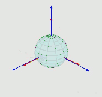
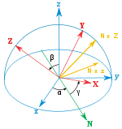
👆 从已知参考方向开始，使用特定的内旋序列，可以达到任何目标方向，其大小为目标方向的欧拉角。本例使用z-x′-z〃序列。
欧拉角可以通过基本几何或旋转组合来定义。几何定义表明，三个组合元素旋转（围绕坐标系的轴旋转）足以到达任何目标坐标系。
❓ 基本几何定义和组合旋转定义有什么区别？
三个元素旋转可以是外旋（围绕原始坐标系的轴xyz旋转，假设其保持不变），也可以是内旋（围绕旋转坐标系的轴XYZ旋转，与运动物体保持一致，在每次元素旋转后改变其方向）。
🔎
extrinsic rotations：外旋
intrinsic rotations：内旋
欧拉角通常表示为α、β、γ或ψ、θ、φ。不同的作者可以使用不同的旋转轴集来定义Euler角度，或者为相同的角度使用不同的名称。因此，任何使用欧拉角的讨论都应在其定义之后进行。
假设不会同时用两种不同约定来定义旋转轴（内旋或外旋），存在十二种可能的旋转轴序列，分为两组：
- Proper欧拉角（z-x-z，x-y-x，y-z-y，z-y-z，x-z-x，y-x-y）
- Tait–Bryan角（x-y-z，y-z-x，z-x-y，x-z-y，z-y-x，y-x-z）。
Tait–Bryan角也称为卡丹角、航海角、行进方向，高度，边坡、或偏航，俯仰，和横滚。有时，这两种序列都被称为“欧拉角”。在这种情况下，第一组的序列称为proper欧拉角或经典欧拉角。
Proper Euler angles Proper欧拉角
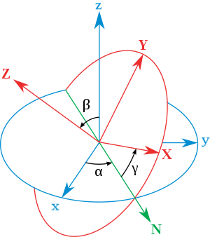
👆 Proper欧拉角几何定义：固定坐标系（x、y、z）、旋转坐标系（X、Y、Z）、交点线（N）
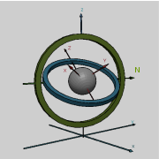
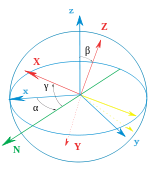
👆 左：万向节组，显示z-x-z旋转序列。底座为外部坐标第。内部轴为红色。右图：一个简单的图，在图显示相似的欧拉角。
📌 以下内容全部假设旋转顺序为z-x-z
几何定义
The axes of the original frame are denoted as x, y, z and the axes of the rotated frame as X, Y, Z. The geometrical definition (sometimes referred to as static) begins by defining the line of nodes (N) as the intersection of the planes xy and XY (it can also be defined as the common perpendicular to the axes z and Z and then written as the vector product N = z \times Z). Using it, the three Euler angles can be defined as follows:
原始坐标系的轴表示为x，y，z，旋转框架的轴表示为X，Y，Z.几何定义（有时称为静态）首先将交点线（N）定义为平面xy和XY的相交的线（也可以定义为同时与轴z轴和Z轴垂直的线，因此写为向量积 \(N=z \times Z\)）。使用它，三个欧拉角可以定义如下：
✅ line of nodes：交点线
- \(\alpha\)（或\(\varphi\)）是x轴和N轴之间的有符号角度（x约定–也可以在y和N之间定义，称为y约定）。
📌
A轴与B轴之间的夹角，另一种表达方式是，以\(A\times B\)为轴，从A到B的旋转角度
N在xy平面上，因此x与N的夹角可以看作是以z为轴在xy平面上的转动
- \(\beta\)（或\(\theta\)）是z轴和Z轴之间的角度。
📌
只有第二次旋转会导致z->Z
- \(\gamma\)（或\(\psi\)）是N轴和X轴之间的有符号角度（X约定）。
📌
N在XY平面上，因此N与X的夹角可以看作是以Z为轴在XY平面上的转动
仅当两个参照系具有相同的惯用手时，才定义两个参照系之间的欧拉角。
内旋
内旋是围绕附着到移动物体的坐标系XYZ的轴发生的基本旋转。因此，它们在每次元素旋转后都会改变方向。XYZ系统会旋转，而xyz是固定的。三个内旋组合可使XYZ达到任何目标方向。
📌
初始时，XYZ和xyz重叠
Euler angles can be defined by intrinsic rotations. The rotated frame XYZ may be imagined to be initially aligned with xyz, before undergoing the three elemental rotations represented by Euler angles. Its successive orientations may be denoted as follows:
欧拉角可以通过内旋序列来定义。旋转的后的XYZ坐标系可以想象为先让XYZ与xyz对齐，然后经历由欧拉角表示的三个元素旋转。其连续方向可表示如下：
- x-y-z, or x0-y0-z0 （初始值）
- x′-y′-z′, or x1-y1-z1 （第一次旋转后）
- x″-y″-z″, or x2-y2-z2 （第二轮后）
- X-Y-Z, or x3-y3-z3 （最终）
📌
以哪个为轴旋转，那个轴旋转前后不变，因此，z=z',z''=Z,x'=x''
For the above-listed sequence of rotations, the line of nodes N can be simply defined as the orientation of X after the first elemental rotation. Hence, N can be simply denoted x′. Moreover, since the third elemental rotation occurs about Z, it does not change the orientation of Z. Hence Z coincides with z″. This allows us to simplify the definition of the Euler angles as follows:
对于上面列出的旋转序列，交点线N可以简单地定义为第一个元素旋转后X的方向。因此，N可以简单地表示为x′。此外，由于第三次元素旋转发生在Z附近，因此不会改变Z的方向。因此，Z与z〃重合。这使我们可以简化欧拉角的定义，如下所示：
📌
N可以简单地表示为x′: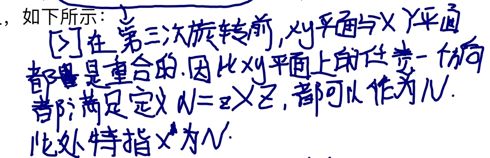
- α（或\(\varphi\)）表示绕z轴旋转，
📌
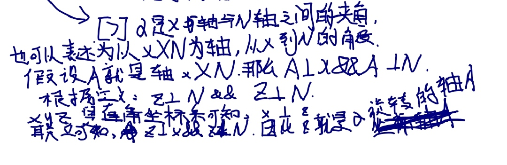
-
β（或\(\theta\)）表示绕x′轴旋转，
-
γ（或\(\psi\)）表示绕z〃轴旋转。
📌
同理，z是γ的旋转轴，Z=z''
外旋
Extrinsic rotations are elemental rotations that occur about the axes of the fixed coordinate system xyz. The XYZ system rotates, while xyz is fixed. Starting with XYZ overlapping xyz, a composition of three extrinsic rotations can be used to reach any target orientation for XYZ. The Euler or Tait–Bryan angles (α, β, γ) are the amplitudes of these elemental rotations. For instance, the target orientation can be reached as follows (note the reversed order of Euler angle application):
外旋是围绕固定坐标系xyz的轴发生的基本旋转。XYZ系统会旋转，而xyz是固定的。从XYZ重叠xyz开始，三个外旋的组合可使XYZ达到任何目标方向。Euler角或Tait–Bryan角（α、β、γ）是这些元素旋转的幅度。例如，目标方向可按如下方式实现（注意应用Euler角的相反顺序）：
📌
注意应用Euler角的相反顺序：
内旋和外旋的顺序不一样
内旋：α->β->γ
外旋：γ->β->α
-
XYZ系统绕z轴旋转γ。X轴现在与x轴成角度γ。
-
XYZ系统再次旋转，但这次绕x轴旋转β。Z轴现在与z轴成角度β。
-
XYZ系统第三次绕z轴旋转角度α。
总之，三个元素的旋转发生在z、x和z附近。事实上，这个序列通常表示为z-x-z（或3-1-3）。与Proper Euler角和Tait–Bryan角关联的旋转轴集通常使用此符号命名（有关详细信息，请参见上文）。
符号、范围和约定
通常根据右手法则定义角度。也就是说，当它们从轴的正方向上看显示顺时针时，它们具有正值；当旋转显示为逆时针时，它们具有负值。相反的惯例（左手法则）很少被采用。
关于范围（使用区间表示法）：
-
对于α和γ，范围定义为模2π弧度。例如，有效范围可以是[−π, π].
-
对于β，范围包括π弧度（但不能说是模π）。例如，它可以是[0， π] 或[−π/2, π/2].
❓
但不能说是模π:?
The angles α, β and γ are uniquely determined except for the singular case that the xy and the XY planes are identical, i.e. when the z axis and the Z axis have the same or opposite directions. Indeed, if the z axis and the Z axis are the same, β = 0 and only (α + γ) is uniquely defined (not the individual values), and, similarly, if the z axis and the Z axis are opposite, β = π and only (α − γ) is uniquely defined (not the individual values). These ambiguities are known as gimbal lock in applications.
角度α、β和γ是唯一确定的，但xy和XY平面相同的奇异情况除外，即z轴和Z轴方向相同或相反。事实上，如果z轴和Z轴相同，则β=0且只有（α+γ）是唯一定义的（不是单个值），并且，类似地，如果z轴和Z轴相反，则β=π且只有（α）− γ） 是唯一定义的（不是单个值）。这些歧义在应用程序中称为万向节锁。
📌
角度α、β和γ是唯一确定的：α、β、γ是独立的
（α）− γ） 是唯一定义的：β为定值，α和γ不独立，这种情况称为万向节死锁
Proper欧拉角的旋转轴有六种可能的序列。在所有这些轴中，第一和第三旋转轴相同。六种可能的顺序是：
-
z1-x′-z2″ (内旋) or z2-x-z1 (外旋)
-
x1-y′-x2″ (内旋) or x2-y-x1 (外旋)
-
y1-z′-y2″ (内旋) or y2-z-y1 (外旋)
-
z1-y′-z2″ (内旋) or z2-y-z1 (外旋)
-
x1-z′-x2″ (内旋) or x2-z-x1 (外旋)
-
y1-x′-y2″ (内旋) or y2-x-y1 (外旋)
进动、章动和内旋
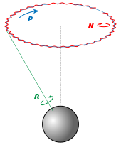
👆 Euler basic motions of the Earth. Intrinsic (green), Precession (blue) and Nutation (red) 地球的基本运动。内旋（绿色）、进动（蓝色）和章动（红色）
Precession, nutation, and intrinsic rotation (spin) are defined as the movements obtained by changing one of the Euler angles while leaving the other two constant. These motions are not expressed in terms of the external frame, or in terms of the co-moving rotated body frame, but in a mixture. They constitute a mixed axes of rotation system, where the first angle moves the line of nodes around the external axis z, the second rotates around the line of nodes N and the third one is an intrinsic rotation around Z, an axis fixed in the body that moves.
进动、章动和内旋（自旋）被定义为改变其中一个欧拉角而保持另两个不变的运动。这些运动不是用外部框架表示的，也不是用共同运动的旋转体框架表示的，而是用一种混合物表示的。它们构成混合旋转轴系统，其中第一个角度围绕外部轴z移动交点线，第二个角度围绕交点线N旋转，第三个角度围绕Z旋转，Z轴固定在移动的主体中。
静态定义意味着：
-
α（进动）表示绕z轴旋转，
-
β（章动）表示绕N或x′轴旋转，
-
γ（内旋）表示绕Z轴或z〃轴的旋转。
如果β为零，则不存在关于N的旋转。因此，Z与z重合，α和γ表示围绕同一轴（z）的旋转，且最终方向可通过围绕z的单个旋转获得，旋转角度等于α+γ。
作为一个例子，考虑顶部。顶部围绕其自身的对称轴旋转；这与它的内旋相对应。它也围绕其枢轴旋转，其质心围绕枢轴旋转；这种旋转是进动。最后，顶部可以上下摆动；倾角就是章动角。地球的运动也可以看到同样的例子。
虽然这三种运动都可以在某一坐标系中用系数恒定的旋转算子来表示，但它们不能同时用这些算子来表示。给定一个参考系，其中最多有一个是无系数的。一般来说，只有进动可以表示为空间基上的矩阵，而不依赖于其他角度。
These movements also behave as a gimbal set. If we suppose a set of frames, able to move each with respect to the former according to just one angle, like a gimbal, there will exist an external fixed frame, one final frame and two frames in the middle, which are called "intermediate frames". The two in the middle work as two gimbal rings that allow the last frame to reach any orientation in space.
这些运动还表现为万向节装置。如果我们假设一组框架能够像一个万向节一样根据一个角度来移动前者，则将存在一个外部固定框架、一个最终框架和中间两个框架，这被称为“中间框架”。中间的两个工作为两个万向环，允许最后一个框架在空间中到达任何方位。
泰特-布赖恩角
另见：飞机主轴
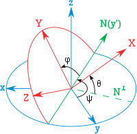
👆 泰特-布莱恩角。z-y′-x〃序列（内旋；N与y′重合）。角度旋转序列为ψ，θ，φ。注意，在这种情况下，ψ>90°，θ为负角度。
第二种形式被称为泰特-布莱恩角，以Peter Guthrie Tait 和George H. Bryan命名。这是通常用于航空航天应用的惯例，因此零度仰角表示水平姿态。Tait–Bryan角表示飞机相对于世界坐标系的方向。在处理其他车辆时，可以使用不同的轴约定。
定义
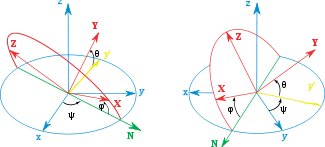
👆 泰特-布莱恩角。z-x′-y〃序列（内旋；N与x′重合）
Tait–Bryan角使用的定义和符号与上述适用于Euler角的定义和符号类似（几何定义、内旋定义、外旋定义）。唯一的区别是，Tait–Bryan角表示围绕三个不同轴（例如x-y-z或x-y′-z〃）的旋转，而Proper Euler角对第一个和第三个元素旋转（例如z-x-z或z-x′-z〃）使用相同的轴。
这意味着几何构造中交点线的定义不同。在Proper欧拉角情况下，它被定义为两个同源笛卡尔平面之间的交线（当欧拉角为零时平行；例如xy和XY）。在Tait–Bryan角的情况下，它被定义为两个非同源平面的交点（当Euler角为零时垂直；例如xy和YZ）。
❓
笛卡尔平面？
为什么旋转轴不同会导致line of nodes的定义不同？
为什么要定义line of nodes?
约定
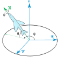
👆 飞机的机载和地面跟踪站的机载ENS轴的Heading, elevation and bank（Z-Y′-X〃）。固定参考坐标系x-y-z表示跟踪站。机载轴Y和Z未显示。X以绿色显示。此图不符合RHS规则：y轴必须反转为正角度符合RHS。
📌
RHS:右手坐标系法则
三个元素旋转可以围绕原始坐标系的轴发生，该坐标系保持不变（外旋），或者围绕旋转坐标系的轴发生，旋转坐标系的轴在每个元素旋转后改变其方向（内旋）。
Tait–Bryan角度的旋转轴序列有六种选择。六种可能的顺序是：
-
x-y′-z″ (内旋) or z-y-x (外旋)
-
y-z′-x″ (内旋) or x-z-y (外旋)
-
z-x′-y″ (内旋) or y-x-z (外旋)
-
x-z′-y″ (内旋) or y-z-x (外旋)
-
z-y′-x″ (内旋) or x-y-z (外旋): the intrinsic rotations are known as: yaw, pitch and roll 内在旋转被称为：yaw, pitch 和 roll
-
y-x′-z″ (内旋) or z-x-y (外旋)
📌
内旋和外旋的顺序是反的
符号和范围
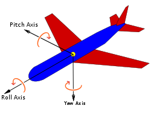
👆 根据航空标准DIN 9300定义的飞机主轴。请注意，零度角时，固定坐标系和移动坐标系必须重合。因此，该规范还将强制定义了参考系统中的兼容轴约定
泰特-布莱恩公约广泛应用于工程中，有着不同的目的。在选择移动轴和固定轴的应用中，有几种轴约定，这些约定决定了角度的符号。因此，必须仔细研究每种情况下的角度符号。
📌
轴约定：特定的旋转轴顺序
角度ψ和φ的范围是2π弧度。对于θ，范围是π弧度。
备选名称
These angles are normally taken as one in the external reference frame (heading, bearing), one in the intrinsic moving frame (bank) and one in a middle frame, representing an elevation or inclination with respect to the horizontal plane, which is equivalent to the line of nodes for this purpose.
这些角度通常在外部参考坐标系（航向、方位）中取一个，在内部移动坐标系（bank）中取一个，在中间框架中取一个，表示相对于水平面的高程或倾角，相当于用于此目的的交点线。
❓
这一段没看懂
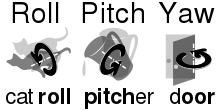
👆 记住角度名称的助记符
对于飞机来说，如果按照正确的顺序绕其主轴旋转三次就可以得到特定角度的坐标系。偏航将获得轴承，俯仰将产生仰角，滚转将产生倾斜角度。因此，在航空航天中，它们有时被称为偏航、俯仰和滚转。请注意，如果以任何其他顺序旋转，或者旋转前飞机轴处于不与参考坐标系相等的其它任何位置，则这套名称不适用。
Tait–Bryan angles, following z-y′-x″ (intrinsic rotations) convention, are also known as nautical angles, because they can be used to describe the orientation of a ship or aircraft, or Cardan angles, after the Italian mathematician and physicist Gerolamo Cardano, who first described in detail the Cardan suspension and the Cardan joint.
Tait–Bryan角，遵循z-y′-x〃（内旋）惯例，也被称为海角，因为它们可以用来描述船只或飞机的方向，或者卡丹角，以意大利数学家和物理学家Gerolamo Cardano的名字命名，他首先详细描述了Cardan suspension和Cardan joint。
给定坐标系的角度
A common problem is to find the Euler angles of a given frame. The fastest way to get them is to write the three given vectors as columns of a matrix and compare it with the expression of the theoretical matrix (see later table of matrices). Hence the three Euler Angles can be calculated. Nevertheless, the same result can be reached avoiding matrix algebra and using only elemental geometry. Here we present the results for the two most commonly used conventions: ZXZ for proper Euler angles and ZYX for Tait–Bryan. Notice that any other convention can be obtained just changing the name of the axes.
一个常见的问题是求给定坐标系的欧拉角。获取它们的最快方法是将三个给定向量写成矩阵的列，并将其与理论矩阵的表达式进行比较（见后面的矩阵表）。因此，可以计算三个欧拉角。然而，避免使用矩阵代数和仅使用元素几何也可以得到相同的结果。这里我们给出了两种最常用的约定的结果：ZXZ表示适当的欧拉角，ZYX表示Tait–Bryan。请注意，只要更改轴的名称，就可以获得任何其他约定。
📌
三个给定向量：XYZ在xyz坐标系中的坐标向量
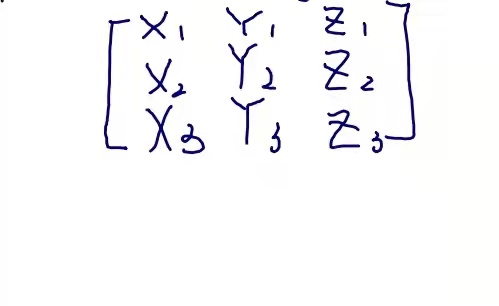
理论矩阵：见6.1节
Proper欧拉角
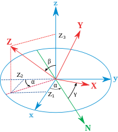
👆 Z向量的投影
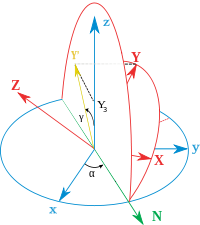
👆 Y向量的投影
假设一个坐标系的单位向量（X，Y，Z）由其坐标给出，如主图所示，可以看出：
$$ \cos(\beta )=Z_{3}. $$
又由于
$$ \sin ^{2}x=1-\cos ^{2}x, $$
定义\(\displaystyle 0<x<\pi \) 我们得出
$$ \sin(\beta )={\sqrt {1-Z_{3}^{2}}}. $$
As \(Z_{2}\) is the double projection of a unitary vector,
因为\(Z_{2}\)是酉向量的双重投影，
❓
酉向量？
$$ \cos(\alpha) \cdot \sin(\beta) = -Z_2, \cos(\alpha) = -Z_2 / \sqrt{1 - Z_3^2}. $$
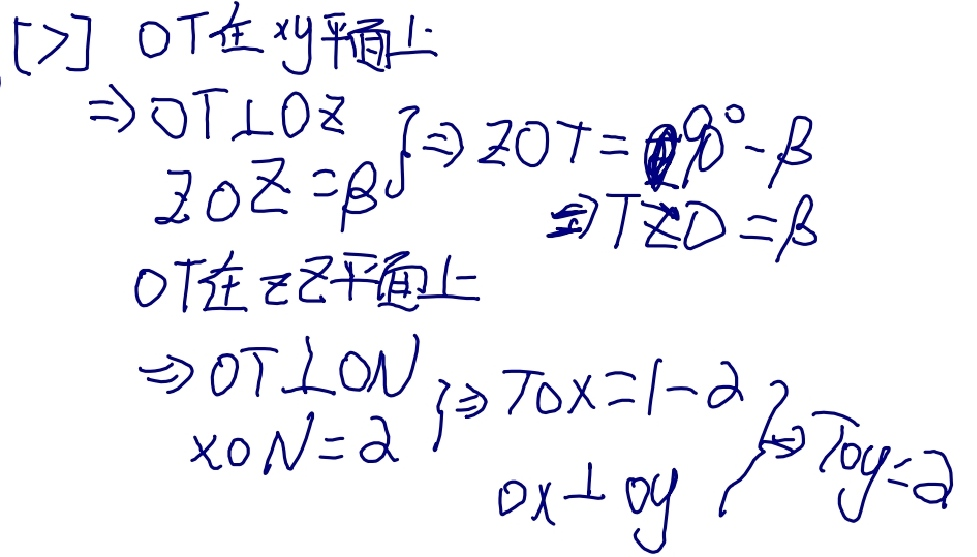
There is a similar construction for \(Y_{3}\), projecting it first over the plane defined by the axis z and the line of nodes. As the angle between the planes is \(\pi /2-\beta\) and \(\cos(\pi /2-\beta )=\sin(\beta )\), this leads to:
\(Y_{3}\)也有类似的构造，首先将其投影到由z轴和交点线定义的平面上。由于平面之间的角度为\(\pi/2-\beta\)，又\(\cos（\pi/2-\beta）=\sin（\beta）\)，得出：
$$ \sin(\beta )\cdot \cos(\gamma )=Y_{3}, \cos(\gamma )=Y_{3}/{\sqrt {1-Z_{3}^{2}}} $$
最后，使用反余弦函数，
$$ {\displaystyle \alpha =\arccos \left(-Z_{2}/{\sqrt {1-Z_{3}^{2}}}\right),} {\displaystyle \beta =\arccos \left(Z_{3}\right),} {\displaystyle \gamma =\arccos \left(Y_{3}/{\sqrt {1-Z_{3}^{2}}}\right).} $$
泰特-布赖恩角
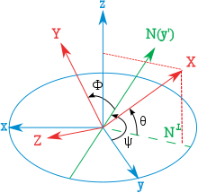
👆 三次泰特-布莱恩旋转后的x轴投影。请注意，θ是绕y′轴的负旋转。
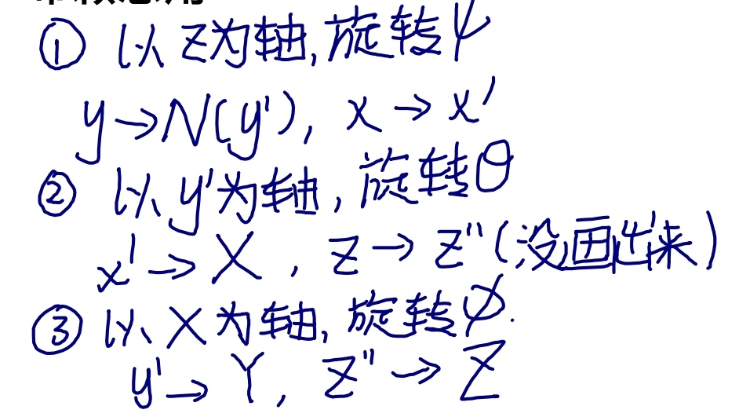
假设一个坐标系的单位向量（X，Y，Z）由其坐标给出，如下图所示（注意角度θ为负），可以看出：
$$ {\displaystyle \sin(\theta )=-X_{3}} $$
和前面一样
$$ {\displaystyle \cos ^{2}x=1-\sin ^{2}x,} $$
定义
$$ {\displaystyle -\pi /2<x<\pi /2} $$
我们得出
$$ {\displaystyle \cos(\theta )={\sqrt {1-X_{3}^{2}}}.} $$
以与前一种类似的方式表达：
$$ {\displaystyle \sin(\psi )=X_{2}/{\sqrt {1-X_{3}^{2}}}.} {\displaystyle \sin(\phi )=Y_{3}/{\sqrt {1-X_{3}^{2}}}.} $$
另一种与前一个类似的表达式：
$$ {\displaystyle \psi =\arcsin \left(X_{2}/{\sqrt {1-X_{3}^{2}}}\right),} {\displaystyle \theta =\arcsin(-X_{3}),} {\displaystyle \phi =\arcsin \left(Y_{3}/{\sqrt {1-X_{3}^{2}}}\right).} $$
结语
请注意，反正弦和余弦函数对同一参数会生成两个可能的值。在当前几何描述中，只有一个解是有效的。当欧拉角定义为一系列旋转时，所有解都有效，但在角度范围内只有一个解。这是因为如果之前未定义范围，则到达目标坐标系的旋转序列不是唯一的。[2]
出于计算目的，使用atan2（y，x）表示角度可能很有用。例如，在Proper欧拉角情况下：
$$ \alpha = \operatorname{atan2}(Z_1 , -Z_2),
\gamma =\operatorname {atan2} (X_{3},Y_{3}). $$
❓
使用atan2表达角度能简化哪方面计算？
什么是atan2？
转换为其他方向表示法
主要文章：三维旋转形式§形式之间的转换公式
欧拉角是表示方向的一种方式。还有其他方式，可以在不同方式之间进行转换。在三维欧氏空间中，通常需要三个参数来描述方向。它们可以用几种方式给出，欧拉角就是其中之一；其他信息请参见SO（3）中的图表。
最常用的方向表示是旋转矩阵、轴角度和四元数，也称为Euler–Rodrigues参数，它们提供了表示三维旋转的另一种机制。这相当于特殊的酉群描述。
将三维旋转表示为单位四元数而不是矩阵有一些优点：
- 把旋转串联起来在计算上更快，在数值上更稳定。
❓
在数值上更稳定：为什么四元比旋转矩阵更稳定？
-
提取角度和旋转轴更简单。
-
插值更直接。参见示例slerp。
📌
插值更直接：四元数可以直接插值，旋转矩阵直接插值得到的不一定是旋转矩阵
- 四元数不像欧拉角那样受到万向节锁的影响。
无论如何，旋转矩阵计算是获得其他两种表示的第一步。
Rotation matrix 旋转矩阵
从一个已知的标准方向开始，通过三个元素旋转组合可以达到任何一个方向。等价地，任何旋转矩阵R都可以分解为三个元素旋转矩阵的乘积。例如：
$$ R=X(\alpha )Y(\beta )Z(\gamma ) $$
是一个旋转矩阵，可用于表示绕z、y、x轴（按该顺序）的外旋组合，或绕x-y′-z〃轴（按该顺序）的内部旋转组合。然而，元素旋转矩阵X、Y、Z的定义及其乘法顺序取决于用户对旋转矩阵和欧拉角的定义所做的选择（例如，请参见旋转矩阵定义中的歧义）。不幸的是，用户在不同的上下文中采用了不同的约定集。下表是根据这组约定建立的：
📌
绕z、y、x轴（按该顺序）：每一次外旋用矩阵左乘表示，所以看上去顺序是反的
绕x-y′-z〃轴（按该顺序）：内旋用矩阵右乘表示
- 每个矩阵都要通过左乘列向量\(\textstyle{\begin{bmatrix}x\y\z\end{bmatrix}}}\)进行操作（请参见旋转矩阵定义中的歧义）
📌
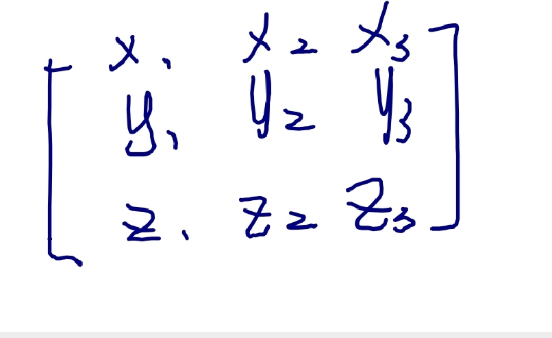
- Each matrix is meant to represent an active rotation (the composing and composed matrices are supposed to act on the coordinates of vectors defined in the initial fixed reference frame and give as a result the coordinates of a rotated vector defined in the same reference frame).
每个矩阵表示一次旋转（等式左边的矩阵和右边的矩阵都可以应用于初始固定参考坐标系中定义的向量坐标，并给出相同参考坐标系中定义的旋转后的向量坐标）。
- Each matrix is meant to represent, primarily, a composition of intrinsic rotations (around the axes of the rotating reference frame) and, secondarily, the composition of three extrinsic rotations (which corresponds to the constructive evaluation of the R matrix by the multiplication of three truly elemental matrices, in reverse order).
每个矩阵可以表示内在旋转的组合（围绕旋转参考坐标系的轴），也可以表示三个外在旋转的组合（对应地通过将三个元素矩阵以相反顺序相乘构造出R矩阵的值）。
- Right handed reference frames are adopted, and the right hand rule is used to determine the sign of the angles α, β, γ.
采用右手坐标系，用右手法则确定角度α、β、γ的符号。
For the sake of simplicity, the following table of matrix products uses the following nomenclature:
为了简单起见，下表中的矩阵乘积使用了以下术语：
- 1, 2, 3 represent the angles α, β and γ, i.e. the angles corresponding to the first, second and third elemental rotations respectively.
1、2、3表示角度α、β和γ，即分别对应于第一、第二和第三元素旋转的角度。
- X, Y, Z are the matrices representing the elemental rotations about the axes x, y, z of the fixed frame (e.g., X1 represents a rotation about x by an angle α).
X、 Y，Z是表示关于固定坐标系的轴x，y，z的基本旋转的矩阵（例如，X1表示关于x的角度α的旋转）。
- s and c represent sine and cosine (e.g., s1 represents the sine of α).
s和c表示正弦和余弦（例如，s1表示α的正弦）。
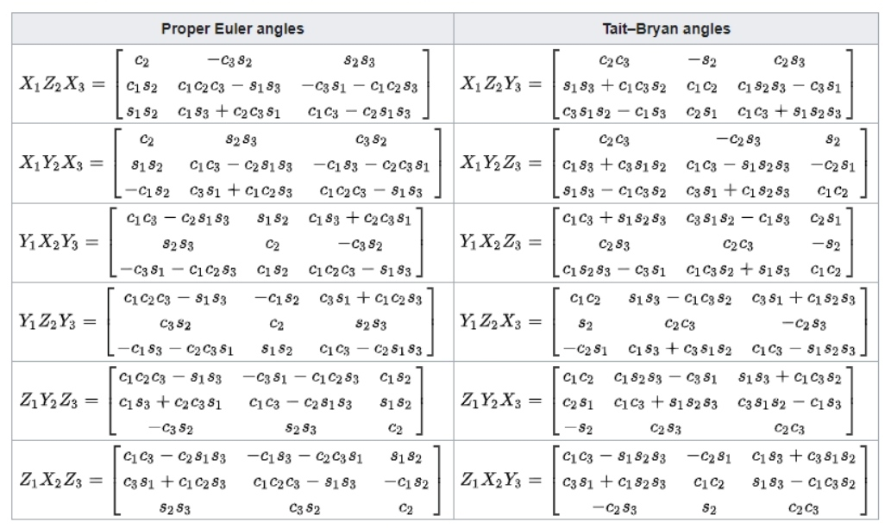
These tabular results are available in numerous textbooks.[3] For each column the last row constitutes the most commonly used convention.
这些表格结果在许多教科书中都有。[3] 对于每一列，最后一行构成最常用的约定。
要更改被动旋转的公式（或查找反向主动旋转），对矩阵做转置（这样每个矩阵将向量的初始坐标变换为基在旋转参考系中的表达；相同的旋转轴，相同的角度，但现在坐标系旋转，而不是向量）。
📌
被动旋转：坐标系发生旋转，向量不变，则它在坐标系中的方向发生了改变
主动旋转：在一个固定坐标系中，方向发生旋转。
❓
passive rotations?
reverse active rotation?
📌
现在坐标系旋转，而不是向量：前者是xyz在XYZ中的表达，后者是XYZ在xyz中的表达
The following table contains formulas for angles α, β and γ from elements of a rotation matrix R.[4]
下表包含旋转矩阵R关于角度α、β和γ的元素的公式[4]
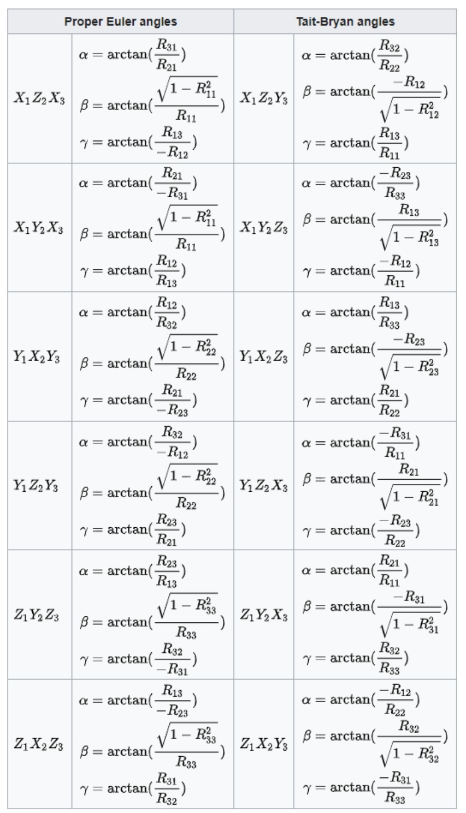
属性
❓
看不懂
另请参见：关于SO（3）和四元数以及空间旋转的图表
The Euler angles form a chart on all of SO(3), the special orthogonal group of rotations in 3D space. The chart is smooth except for a polar coordinate style singularity along β = 0. See charts on SO(3) for a more complete treatment.
欧拉角在所有SO（3）上形成图表，SO（3）是三维空间中旋转的特殊正交组。除了沿β=0的极坐标式奇异点外，该图表是平滑的。有关更完整的处理方法，请参见SO（3）上的图表。
The space of rotations is called in general "The Hypersphere of rotations", though this is a misnomer: the group Spin(3) is isometric to the hypersphere S3, but the rotation space SO(3) is instead isometric to the real projective space ****RP3 which is a 2-fold quotient space of the hypersphere. This 2-to-1 ambiguity is the mathematical origin of spin in physics.
旋转空间通常被称为“旋转超球”，尽管这是一个误称：群自旋（3）与超球S3等距，但旋转空间SO（3）与真实射影空间RP3等距，后者是超球的2倍商空间。这种2:1的模糊性是物理学中自旋的数学起源。
A similar three angle decomposition applies to SU(2), the special unitary group of rotations in complex 2D space, with the difference that β ranges from 0 to 2π. These are also called Euler angles.
类似的三角分解适用于SU（2），复杂二维空间中特殊的酉旋转群，不同之处在于β的范围为0到2π。这些也被称为欧拉角。
The Haar measure for SO(3) in Euler angles is given by the Hopf angle parametrisation of SO(3), \(\displaystyle {\textrm {d}}V\propto \sin \beta .{\textrm {d}}\alpha .{\textrm {d}}\beta .{\textrm {d}}\gamma }\),[5] where \({\displaystyle (\beta ,\alpha )}\) parametrise \(S^{{2}}\), the space of rotation axes.
欧拉角中SO（3）的Haar度量由SO（3）的Hopf角参数化给出，\(\displaystyle {\textrm {d}}V\propto \sin \beta .{\textrm {d}}\alpha .{\textrm {d}}\beta .{\textrm {d}}\gamma }\),[5] where \({\displaystyle (\beta ,\alpha )\) parametrise \(S^{{2}}\), 旋转轴的空间。
For example, to generate uniformly randomized orientations, let α and γ be uniform from 0 to 2π, let z be uniform from −1 to 1, and let β = arccos(z).
例如，为了生成均匀随机化的方向，假设α和γ在0到2π之间是均匀的，假设z在0到2π之间是均匀的−1到1，设β=arccos（z）。
Geometric algebra 几何代数
Other properties of Euler angles and rotations in general can be found from the geometric algebra, a higher level abstraction, in which the quaternions are an even subalgebra. The principal tool in geometric algebra is the rotor \(\displaystyle \mathbf {\mathbb {R} } =[\cos(\theta /2)-Iu\sin(\theta /2)]\) where \(\displaystyle \mathbf {\theta } =}angle of rotation, {\displaystyle \mathbf {(} u)=}rotation axis (unitary vector) and {\displaystyle \mathbf {(} I)=}pseudoscalar (trivector in \mathbb {R} ^{3})\)
一般来说，欧拉角和旋转的其他性质可以从几何代数中找到，这是一种更高层次的抽象，其中四元数是偶数子代数。几何代数中的主要工具是转子\(\displaystyle \mathbf {\mathbb {R} } =[\cos(\theta /2)-Iu\sin(\theta /2)]\) where \(\displaystyle \mathbf {\theta } =}angle of rotation, {\displaystyle \mathbf {(} u)=}rotation axis (unitary vector) and {\displaystyle \mathbf {(} I)=}pseudoscalar (trivector in \mathbb {R} ^{3})\)
Higher dimensions 更高维度
It is possible to define parameters analogous to the Euler angles in dimensions higher than three.[6]
可以定义尺寸大于三的类似于欧拉角的参数。[6]
The number of degrees of freedom of a rotation matrix is always less than the dimension of the matrix squared. That is, the elements of a rotation matrix are not all completely independent. For example, the rotation matrix in dimension 2 has only one degree of freedom, since all four of its elements depend on a single angle of rotation. A rotation matrix in dimension 3 (which has nine elements) has three degrees of freedom, corresponding to each independent rotation, for example by its three Euler angles or a magnitude one (unit) quaternion.
旋转矩阵的自由度总是小于矩阵平方的维数。也就是说，旋转矩阵的元素并非都是完全独立的。例如，维度2中的旋转矩阵只有一个自由度，因为其所有四个元素都依赖于单个旋转角度。维度3中的旋转矩阵（包含九个元素）具有三个自由度，对应于每个独立旋转，例如通过其三个Euler角或一个一级（单位）四元数。
In SO(4) the rotation matrix is defined by two quaternions, and is therefore 6-parametric (three degrees of freedom for every quaternion). The 4×4 rotation matrices have therefore 6 independent components out of 16.
在SO（4）中，旋转矩阵由两个四元数定义，因此是6参数的（每个四元数有三个自由度）。因此，4×4旋转矩阵在16个分量中有6个独立分量。
Any set of 6 parameters that define the rotation matrix could be considered an extension of Euler angles to dimension 4.
定义旋转矩阵的任何一组6个参数可被视为Euler角到尺寸4的延伸。
In general, the number of Euler angles in dimension D is quadratic in D; since any one rotation consists of choosing two dimensions to rotate between, the total number of rotations available in dimension D is \(\displaystyle N_{\text{rot}}={\binom {D}{2}}=D(D-1)/2}, which for D=2,3,4 yields {\displaystyle N_{\text{rot}}=1,3,6\).
一般来说，D维的欧拉角的个数是D的二次方； 因为任何一次旋转都包括选择两个维度进行旋转，所以维度 D 中可用的总旋转次数为 \(\displaystyle N_{\text{rot}}={\binom {D}{2}}=D( D-1)/2}，对于 D=2,3,4 产生 {\displaystyle N_{\text{rot}}=1,3,6\)。
Applications 应用程序
❓
没看懂
Vehicles and moving frames 车辆和移动框架
Main article: rigid body 主要文章：刚体
See also: axes conventions 另请参见：轴约定
Their main advantage over other orientation descriptions is that they are directly measurable from a gimbal mounted in a vehicle. As gyroscopes keep their rotation axis constant, angles measured in a gyro frame are equivalent to angles measured in the lab frame. Therefore, gyros are used to know the actual orientation of moving spacecraft, and Euler angles are directly measurable. Intrinsic rotation angle cannot be read from a single gimbal, so there has to be more than one gimbal in a spacecraft. Normally there are at least three for redundancy. There is also a relation to the well-known gimbal lock problem of mechanical engineering[7] .
与其他方向描述相比，它们的主要优点是可以直接从安装在车辆上的万向节进行测量。由于陀螺仪保持其旋转轴恒定，在陀螺仪坐标系中测量的角度与在实验室坐标系中测量的角度相等。因此，陀螺仪被用来知道移动航天器的实际方位，而欧拉角是可以直接测量的。一个航天器的内旋角度不可能超过一个框架。通常至少有三个冗余。这也与机械工程中众所周知的万向节锁问题有关[7]。
When studying rigid bodies in general, one calls the xyz system space coordinates, and the XYZ system body coordinates. The space coordinates are treated as unmoving, while the body coordinates are considered embedded in the moving body. Calculations involving acceleration, angular acceleration, angular velocity, angular momentum, and kinetic energy are often easiest in body coordinates, because then the moment of inertia tensor does not change in time. If one also diagonalizes the rigid body's moment of inertia tensor (with nine components, six of which are independent), then one has a set of coordinates (called the principal axes) in which the moment of inertia tensor has only three components.
在一般情况下研究刚体时，可以调用xyz系统空间坐标和XYZ系统体坐标。空间坐标被视为未移动，而身体坐标被视为嵌入在移动的身体中。在物体坐标系中，涉及加速度、角加速度、角速度、角动量和动能的计算通常是最简单的，因为惯性矩张量不会随时间变化。如果还将刚体的惯性矩张量对角化（有九个分量，其中六个分量是独立的），则有一组坐标（称为主轴），其中惯性矩张量只有三个分量。
The angular velocity of a rigid body takes a simple form using Euler angles in the moving frame. Also the Euler's rigid body equations are simpler because the inertia tensor is constant in that frame.
刚体的角速度采用运动框架中欧拉角的简单形式。此外，欧拉刚体方程更简单，因为惯性张量在该框架中是常数。
Crystallographic texture 晶体结构
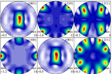
👆 Pole figures displaying crystallographic texture of gamma-TiAl in an alpha2-gamma alloy, as measured by high energy X-rays.[8] 极图显示了通过高能X射线测量的alpha2γ合金中γTiAl的晶体结构。[8]
In materials science, crystallographic texture (or preferred orientation) can be described using Euler angles. In texture analysis, the Euler angles provide a mathematical depiction of the orientation of individual crystallites within a polycrystalline material, allowing for the quantitative description of the macroscopic material.[9] The most common definition of the angles is due to Bunge and corresponds to the ZXZ convention. It is important to note, however, that the application generally involves axis transformations of tensor quantities, i.e. passive rotations. Thus the matrix that corresponds to the Bunge Euler angles is the transpose of that shown in the table above.[10]
在材料科学中，晶体织构（或优选取向）可以用欧拉角来描述。在织构分析中，欧拉角提供了多晶材料中单个微晶方向的数学描述，允许对宏观材料进行定量描述。[9] 最常见的角度定义是Bunge，与ZXZ约定相对应。然而，需要注意的是，该应用通常涉及张量的轴变换，即被动旋转。因此，对应于Bunge-Euler角的矩阵是上表所示矩阵的转置。[10]
Others 其他
👆 Industrial robot operating in a foundry 在铸造厂工作的工业机器人
Euler angles, normally in the Tait–Bryan convention, are also used in robotics for speaking about the degrees of freedom of a wrist. They are also used in electronic stability control in a similar way.
欧拉角，通常在泰特-布莱恩公约中，也用于机器人学中，用于谈论手腕的自由度。它们也以类似的方式用于电子稳定控制。
Gun fire control systems require corrections to gun-order angles (bearing and elevation) to compensate for deck tilt (pitch and roll). In traditional systems, a stabilizing gyroscope with a vertical spin axis corrects for deck tilt, and stabilizes the optical sights and radar antenna. However, gun barrels point in a direction different from the line of sight to the target, to anticipate target movement and fall of the projectile due to gravity, among other factors. Gun mounts roll and pitch with the deck plane, but also require stabilization. Gun orders include angles computed from the vertical gyro data, and those computations involve Euler angles.
火炮火控系统需要修正火炮顺序角（方位角和仰角），以补偿甲板倾斜（俯仰和横滚）。在传统系统中，带有垂直旋转轴的稳定陀螺仪用于校正甲板倾斜，并稳定光学瞄准具和雷达天线。然而，枪管指向与目标视线不同的方向，以预测目标移动和由于重力等因素导致的弹丸坠落。炮座随甲板平面滚动和俯仰，但也需要稳定。炮阶包括根据垂直陀螺仪数据计算的角度，这些计算涉及欧拉角。
Euler angles are also used extensively in the quantum mechanics of angular momentum. In quantum mechanics, explicit descriptions of the representations of SO(3) are very important for calculations, and almost all the work has been done using Euler angles. In the early history of quantum mechanics, when physicists and chemists had a sharply negative reaction towards abstract group theoretic methods (called the Gruppenpest), reliance on Euler angles was also essential for basic theoretical work.
欧拉角在角动量的量子力学中也有广泛的应用。在量子力学中，SO（3）表示的显式描述对于计算非常重要，几乎所有的工作都是用欧拉角完成的。在量子力学的早期历史上，当物理学家和化学家对抽象群论方法（称为Gruppenpest）产生强烈的负面反应时，对欧拉角的依赖也是基础理论工作的关键。
Many mobile computing devices contain accelerometers which can determine these devices' Euler angles with respect to the earth's gravitational attraction. These are used in applications such as games, bubble level simulations, and kaleidoscopes.[citation needed]
许多移动计算设备都包含加速计，可以确定这些设备相对于地球引力的欧拉角。这些用于游戏、气泡级模拟和万花筒等应用。[需要引用]
See also 另见
- 3D projection 三维投影
- Axis-angle representation 轴角表示法
- Conversion between quaternions and Euler angles 四元数和欧拉角之间的转换
- Davenport chained rotations 达文波特链式旋转
- Euler's rotation theorem 欧拉旋转定理
- Gimbal lock 万向节锁
- Quaternion 四元数
- Quaternions and spatial rotation 四元数与空间旋转
- Rotation formalisms in three dimensions 三维旋转形式
- Spherical coordinate system 球面坐标系
Quaternion 四元数
四元数乘法表
| 1 | i | j | k | |
|---|---|---|---|---|
| 1 | 1 | i | j | k |
| i | i | −1 | k | −j |
| j | j | −k | −1 | i |
| k | k | j | −i | −1 |
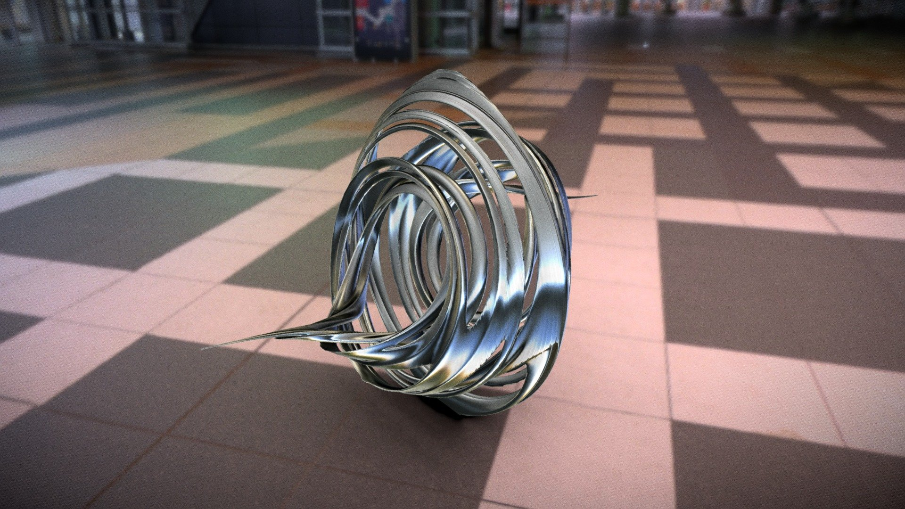
👆 Aiekick的“Julia Quaternion 3”
在数学中，四元数系统扩展了复数。 四元数由爱尔兰数学家威廉·罗文·Hamilton于 1843 年[1][2] 首次描述，并应用于三维空间的力学。 Hamilton将四元数定义为三维空间中两条有向线的商，[3] 或者等效地，定义为两个向量的商。 [4] 四元数的乘法是不可交换的。
📌
两个向量的商：最初引入四元数是为了定义向量的除法
四元数一般用以下形式表示
$$ {\displaystyle a+b\ \mathbf {i} +c\ \mathbf {j} +d\ \mathbf {k} } $$
其中 a、b、c 和 d 是实数； i, j, k 是基本四元数。
四元数用于纯数学，但在应用数学中也有实际用途，特别是用于涉及三维旋转的计算，例如三维计算机图形学、计算机视觉和晶体纹理分析。 [5] 它们可以与其他旋转方法一起使用，例如欧拉角和旋转矩阵，或者作为它们的替代方法，具体取决于应用程序。
In modern mathematical language, quaternions form a four-dimensional associative normed division algebra over the real numbers, and therefore also a domain. The algebra of quaternions is often denoted by H (for Hamilton), or in blackboard bold by \({\displaystyle \mathbb {H} .}\) It can also be given by the Clifford algebra classifications \({\displaystyle \operatorname {Cl} _{0,2}(\mathbb {R} )\cong \operatorname {Cl} _{3,0}^{+}(\mathbb {R} ).}\) In fact, it was the first noncommutative division algebra to be discovered.
在现代数学语言中，四元数在实数上形成一个四维关联范数除法代数，因此也是一个域。 四元数的代数通常用 H（代表 Hamilton）来表示，或者用黑板粗体表示为 \({\displaystyle \mathbb {H} .}\) 它也可以由 Clifford 代数分类给出 \({\displaystyle \operatorname {Cl} _{0,2}(\mathbb {R} )\cong \operatorname {Cl} _{3,0}^{+}(\mathbb {R} ).}\) 其实就是 第一个非交换除法代数被发现。
❓
关联范数：？
除法代数：？
According to the Frobenius theorem, the algebra \({\displaystyle \mathbb {H} }\) is one of only two finite-dimensional division rings containing a proper subring isomorphic to the real numbers; the other being the complex numbers. These rings are also Euclidean Hurwitz algebras, of which quaternions are the largest associative algebra. Further extending the quaternions yields the non-associative octonions, which is the last normed division algebra over the real numbers. (The sedenions, the extension of the octonions, have zero divisors and so cannot be a normed division algebra.)[6]
根据 Frobenius 定理，代数 \({\displaystyle \mathbb {H} }\) 是仅有的两个包含与实数同构的适当子环的有限维除环之一； 另一个是复数。 这些环也是欧几里得赫维茨代数，其中四元数是最大的结合代数。 进一步扩展四元数产生非结合八元数，这是实数上的最后一个范数除法代数。 （sedenions，八元数的扩展，有零除数，因此不能是规范的除法代数。）[6]
The unit quaternions can be thought of as a choice of a group structure on the 3-sphere S3 that gives the group Spin(3), which is isomorphic to SU(2) and also to the universal cover of SO(3).
单位四元数可以被认为是 3 球体 S3 上的一个群结构的选择，它给出了群 Spin(3)，它与 SU(2) 和 SO(3) 的全覆盖同构。
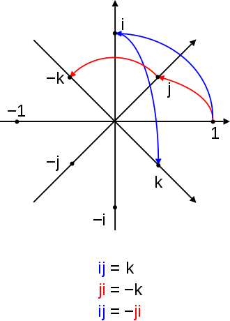
Graphical representation of products of quaternion units as 90° rotations in the planes of 4-dimensional space spanned by two of {1, i, j, k}. The left factor can be viewed as being rotated by the right factor to arrive at the product. Visually i ⋅ j = −(j ⋅ i).
基本四元数乘积的图形表示，为在4D空间中跨越 {1, i, j, k} 中的两个轴的平面上旋转 90°。 可以看作是左边的因子被右边的因子旋转后得到乘积。 视觉上 i ⋅ j = -(j ⋅ i)。
📌
unit quaternion：单位四元数，即norm为1的四元数
quaternion unit：基本四元数，即i,j,k
-
蓝色
-
1 ⋅ i = i (1/i 平面)
-
i ⋅ j = k (i/k 平面)
-
-
红色
-
1 ⋅ j = j (1/j 平面)
-
j ⋅ i = -k (j/k 平面)
-
历史
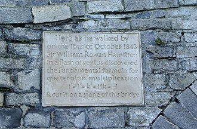
都柏林布鲁厄姆（布鲁姆）桥上的四元数牌匾，上面写着：
Here as he walked by
on the 16th of October 1843
Sir William Rowan Hamilton
in a flash of genius discovered
the fundamental formula for
quaternion multiplication
i2 = j2 = k2 = i j k = −1
& cut it on a stone of this bridge
四元数由Hamilton于 1843 年引入。 [7] 这项工作的重要前身包括欧拉的四平方恒等式 (1748) 和奥林德罗德里格斯 (Olinde Rodrigues) 通过四个参数对一般旋转进行参数化 (1840)，但这些作者都没有将四参数旋转视为代数。 [8] [9] 卡尔·弗里德里希·高斯也在 1819 年发现了四元数，但这项工作直到 1900 年才发表。[10][11]
Hamilton知道复数可以解释为平面上的点，他正在寻找一种方法来对三维空间中的点做同样的事情。 空间中的点可以用它们的坐标来表示，坐标是三元组的数字，而且多年来他一直知道如何加减三元组的数字。 然而，很长一段时间，他一直被困在乘除法的问题上。 他不知道如何计算空间中两点坐标的商。 事实上，Ferdinand Georg Frobenius 后来在 1877 年证明，实数上的除法代数是有限维和结合的，它不可能是三维的，并且只有三个这样的除法代数： \({\displaystyle \mathbb {R,C} }\)（复数）和 \({\displaystyle \mathbb {H} }\)（四元数），它们的维数分别为 1、2 和 4。
四元数的重大突破终于在 1843 年 10 月 16 日星期一在都柏林出现，当时Hamilton正在前往爱尔兰皇家学院的路上，他将在那里主持一次理事会会议。 当他和妻子沿着皇家运河的纤道行走时，四元数背后的概念正在他的脑海中形成。当答案浮出水面时，Hamilton忍不住把四元数的公式
$$ {\displaystyle \mathbf {i} ^{2}=\mathbf {j} ^{2}=\mathbf {k} ^{2}=\mathbf {i,j,k} =-1} $$
刻在布鲁厄姆桥的石头上他所站立的位置。尽管雕刻已经消失，但自 1989 年以来，每年都会举行一次名为“Hamilton步行”的朝圣活动，供科学家和数学家从邓辛克天文台步行到皇家运河桥，以纪念Hamilton的发现。
第二天，Hamilton给他的朋友兼数学家约翰·格雷夫斯写了一封信，描述了导致他发现的思路。 这封信后来发表在给伦敦、爱丁堡和都柏林哲学杂志和科学杂志上。在信中；[12] Hamilton说：
And here there dawned on me the notion that we must admit, in some sense, a fourth dimension of space for the purpose of calculating with triples ... An electric circuit seemed to close, and a spark flashed forth.[12]
在这里，我突然想到，在某种意义上，我们必须承认空间的第四维度，以便用三元组进行计算……电路似乎闭合了，火花闪现。 [12]
💡 通过人为地增加一个维度，来解决原本在低维空间中无法解决的问题，这是一个很好的解题思路，其次坐标系也是这样的原理。
Hamilton将具有这些乘法规则的四元数称为四元数，他将余生的大部分时间都用于研究和教授它们。 Hamilton的处理比现代方法更几何，后者强调四元数的代数性质。 他创立了“四元数论者quaternionists”学派，并试图在几本书中普及四元数。 他的最后一部也是最长的一本书《四元数的元素》[13] 长达 800 页； 它由他的儿子编辑，并在他去世后不久出版。
Hamilton去世后，苏格兰数学物理学家彼得·泰特成为四元数的主要成员。 当时，四元数是都柏林的必考科目。在物理和几何也使用向量描述的主题，例如空间运动学和麦克斯韦方程，都完全用四元数来描述。 甚至还有一个专业的研究协会，即四元数协会，致力于研究四元数和其他超复数系统。
从 1880 年代中期开始，四元数开始被 Josiah Willard Gibbs、Oliver Heaviside 和 Hermann von Helmholtz 开发的矢量分析所取代。 矢量分析描述了与四元数相同的现象，因此它从有关四元数的文献中大量借用了一些思想和术语。 然而，矢量分析在概念上更简单，符号更清晰，最终四元数在数学和物理学中被贬为次要角色。 这种转变的一个副作用是Hamilton的作品对于许多现代读者来说难以理解。 Hamilton最初的定义是陌生的，他的写作风格冗长且难以理解。
然而，自 20 世纪后期以来，四元数得到了复兴，这主要是由于它们在描述空间旋转方面的实用性。 四元数的旋转表示比矩阵的表示更紧凑，计算速度更快。 此外，与欧拉角不同，它们不易受到“万向节死锁”的影响。 因此，四元数被用于计算机图形学、[14][15] 计算机视觉、机器人学、[16] 控制理论、信号处理、姿态控制、物理学、生物信息学、[17][18] 分子动力学、计算机模拟、 和轨道力学。 例如，航天器的姿态控制系统通常以四元数来控制。 由于四元数与二次形式的关系，四元数从数论中得到了另一个推动。 [19]
📌 用四元数表示旋转的优势：
①比矩阵的表示更紧凑，计算速度更快
②不易受到“万向节死锁”的影响
③插值结果更稳定
物理学中的四元数
P.R. Girard's 1984 essay The quaternion group and modern physics[20] discusses some roles of quaternions in physics. The essay shows how various physical covariance groups, namely SO(3), the Lorentz group, the general theory of relativity group, the Clifford algebra SU(2) and the conformal group, can easily be related to the quaternion group in modern algebra. Girard began by discussing group representations and by representing some space groups of crystallography. He proceeded to kinematics of rigid body motion. Next he used complex quaternions (biquaternions) to represent the Lorentz group of special relativity, including the Thomas precession. He cited five authors, beginning with Ludwik Silberstein, who used a potential function of one quaternion variable to express Maxwell's equations in a single differential equation. Concerning general relativity, he expressed the Runge–Lenz vector. He mentioned the Clifford biquaternions (split-biquaternions) as an instance of Clifford algebra. Finally, invoking the reciprocal of a biquaternion, Girard described conformal maps on spacetime. Among the fifty references, Girard included Alexander Macfarlane and his Bulletin of the Quaternion Society. In 1999 he showed how Einstein's equations of general relativity could be formulated within a Clifford algebra that is directly linked to quaternions.[21]
P.R. Girard 1984 年的文章四元数群和现代物理学[20] 讨论了四元数在物理学中的一些作用。文章展示了各种物理协方差群，即 SO(3)、洛伦兹群、广义相对论群、克利福德代数 SU(2) 和共形群，如何很容易地与现代代数中的四元数群联系起来。 Girard 首先讨论了群表示并代表了晶体学的一些空间群。他着手研究刚体运动的运动学。接下来他用复四元数（biquaternions）来表示狭义相对论的洛伦兹群，包括托马斯岁差。他引用了五位作者，首先是 Ludwik Silberstein，他们使用一个四元数变量的势函数在单个微分方程中表达麦克斯韦方程。关于广义相对论，他表达了龙格-楞次向量。他提到了 Clifford 双四元数（split-biquaternions）作为 Clifford 代数的一个实例。最后，利用双四元数的倒数，吉拉德描述了时空共形映射。在五十篇参考文献中，吉拉德包括亚历山大麦克法兰和他的四元数协会公报。 1999 年，他展示了如何在与四元数直接相关的克利福德代数中制定爱因斯坦的广义相对论方程。 [21]
The finding of 1924 that in quantum mechanics the spin of an electron and other matter particles (known as spinors) can be described using quaternions furthered their interest; quaternions helped to understand how rotations of electrons by 360° can be discerned from those by 720° (the "Plate trick").[22][23] As of 2018, their use has not overtaken rotation groups.[a]
1924 年发现，在量子力学中，电子和其他物质粒子（称为自旋量）的自旋可以用四元数来描述，这进一步激发了他们的兴趣。 四元数有助于理解电子旋转 360° 与 720° 旋转的区别（“板技巧”）。[22][23] 截至 2018 年，它们的使用尚未超过轮换组。[a]
定义
四元数的表达形式为
$$ {\displaystyle a+b,\mathbf {i} +c,\mathbf {j} +d,\mathbf {k} \ ,} $$
其中 a、b、c、d 是实数，i、j、k 是可以解释为指向三个空间轴的单位向量的符号。 在实际应用中，如果a、b、c、d之一为0，则省略对应项； 如果a、b、c、d都为零，则该四元数是零四元数，记为0； 如果 b、c、d 中的一个等于 1，则相应的项只写为 i、j 或 k。
Hamilton 将四元数 \({\displaystyle q=a+b,\mathbf {i} +c,\mathbf {j} +d,\mathbf {k} }\) 描述为由一个标量部分和 向量部分。 四元数 \({\displaystyle b,\mathbf {i} +c,\mathbf {j} +d,\mathbf {k} }\) 称为 q 的向量部分（有时是虚部），并且 a 是 q 的标量部分（有时是实部）。 等于其实部（即其向量部分为零）的四元数称为标量或实数四元数，并用相应的实数标识。 也就是说，实数嵌入在四元数中。 （更准确地说，实数域同构于四元数的一个子集。复数域也同构于三个四元数子集。）[24] 等于其向量部分的四元数称为向量四元数。
四元数集在实数上构成一个 4 维向量空间，以\({\displaystyle \left{1,\mathbf {i} ,\mathbf {j} ,\mathbf {k} \right} }{\displaystyle \left{1,\mathbf {i} ,\mathbf {j} ,\mathbf {k} \right}}\) 作为基，使用逐分量的加法
📌
逐分量加法：依次对每前分量前的系数做加法操作
$$ {\displaystyle (a_{1}+b_{1},\mathbf {i} +c_{1},\mathbf {j} +d_{1},\mathbf {k} )+(a_{2}+b_{2},\mathbf {i} +c_{2},\mathbf {j} +d_{2},\mathbf {k} )=(a_{1}+a_{2})+(b_{1}+b_{2}),\mathbf {i} +(c_{1}+c_{2}),\mathbf {j} +(d_{1}+d_{2}),\mathbf {k} ,,} $$
和分量标量乘法
📌
分量标量乘：依次让每个分量的系数与一个标量相乘。
标量即0维数字
$$ {\displaystyle \lambda (a+b,\mathbf {i} +c,\mathbf {j} +d,\mathbf {k} )=\lambda a+(\lambda b),\mathbf {i} +(\lambda c),\mathbf {j} +(\lambda d),\mathbf {k} .} $$
可以通过以下方式在四元数上定义乘法群结构，称为 Hamilton 积，用juxtaposition表示：
-
实四元数 1 是单位元。
-
实四元数与所有其他四元数满足交换律，即对于每一个四元数 q 和每一个实四元数 a，aq = qa。 在代数术语中，这就是说实四元数域是这个四元数代数的中心。
🔎
下文3.2会解释“代数的中心”概念
- The product is first given for the basis elements (see next subsection), and then extended to all quaternions by using the distributive property and the center property of the real quaternions. The Hamilton product is not commutative, but is associative, thus the quaternions form an associative algebra over the real numbers.
首先给出基元素的乘积（见下一小节），然后利用实四元数的分布性质和中心性质扩展到所有四元数。 Hamilton积是不可交换的，是结合的，因此四元数在实数上形成结合代数。
📌 basis element Vs identity element basis element：基元素，即i, j, k，来源于四元数的定义
identity element：1，特点是任何数与它相乘都等于它自己，来源于乘法定义
❓ [?] 实四元数的分布性质 📌 实四元数的中心性质：aq = qa，见本页面3.2节 不可交换：q2q1 != q1q2 结合：(q1q2)q3 = q1(q2q3) 在实数上形成结合代数：在其实数域上满足交换律和结合律
- Additionally, every nonzero quaternion has an inverse with respect to the Hamilton product:
此外，根据Hamilton 积的定义每个非零四元数都有逆：
$$ {\displaystyle (a+b,\mathbf {i} +c,\mathbf {j} +d,\mathbf {k} )^{-1}={\frac {1}{a^{2}+b^{2}+c^{2}+d^{2}}},(a-b,\mathbf {i} -c,\mathbf {j} -d,\mathbf {k} ).} $$
Thus the quaternions form a division algebra.
因此，四元数形成一个除法代数。
基本元素的乘法
乘法表（非交换性用彩色方块强调）
| × | 1 | i | j | k |
|---|---|---|---|---|
| 1 | 1 | i | j | k |
| i | i | −1 | k | −j |
| j | j | −k | −1 | i |
| k | k | j | −i | −1 |
由于1是乘法单位，基元素 i、j 和 k 与 1 的乘法定义如下，即
$$ {\displaystyle \mathbf {i} ,1=1,\mathbf {i} =\mathbf {i} ,\qquad \mathbf {j} ,1=1,\mathbf {j} =\mathbf {j} ,\qquad \mathbf {k} ,1=1,\mathbf {k} =\mathbf {k} ,.} $$
The products of basis elements are derived from the product rules for \({\displaystyle \mathbf {i} }\) and \({\displaystyle \mathbf {j}}\)
基元素的乘积源自 \({\displaystyle \mathbf {i} }\) 和 \({\displaystyle \mathbf {j} }\) 的乘积规则：
$$ {\displaystyle \mathbf {i} ^{2}=\mathbf {j} ^{2}=-1} $$
and 并且
$$ {\displaystyle {\begin{aligned}\mathbf {i,j} &=\mathbf {k} ,,\quad &\mathbf {j,i} &=-\mathbf {k} ,.\end{aligned}}} $$
📌
类似3D中的叉积
The remaining product rules are obtained by multiplying both sides of these latter rules by \({\displaystyle \mathbf {j} }\) or \({\displaystyle \mathbf {i} }\) from the left or right and applying associativity which gives
剩下的乘积规则是通过将上面这些规则的两边从左边或右边乘以 \({\displaystyle \mathbf {j} }\) 或 \({\displaystyle \mathbf {i} }\) 并应用关联性来获得的：
$$ {\displaystyle {\begin{aligned}\mathbf {j,k} &=\mathbf {i} ,,\quad &\mathbf {k,j} &=-\mathbf {i} ,,\\mathbf {k,i} &=\mathbf {j} ,,\quad &\mathbf {i,k} &=-\mathbf {j} ,,\\mathbf {i,j,k} &=-1,,\quad &\mathbf {k} ^{2}&=-1,\\end{aligned}}} $$
Center 中心
The center of a noncommutative ring is the subring of elements c such that cx = xc for every x. The center of the quaternion algebra is the subfield of real quaternions. In fact, it is a part of the definition that the real quaternions belong to the center. Conversely, if q = a + b i + c j + d k belongs to the center, then
非交换环的中心是元素 c 的子环，使得对于每个 x，cx = xc。 四元数代数的中心是实四元数的子域。 事实上，实四元数属于中心是定义的一部分。 反之，若 q = a + b i + c j + d k 属于中心，则
📌
非交换环的中心是元素 c 的子环，使得对于每个 x，cx = xc：代数中心的定义
$$ {\displaystyle 0=\mathbf {i} ,q-q,\mathbf {i} =2c,\mathbf {ij} +2d,\mathbf {ik} =2c,\mathbf {k} -2d,\mathbf {j} ,,} $$
and c = d = 0. A similar computation with j instead of i shows that one has also b = 0. Thus q = a is a real quaternion.
得出 c = d = 0。用 j 代替 i 做类似计算也能得出 b = 0。因此 q = a 是一个实四元数。
The quaternions form a division algebra. This means that the non-commutativity of multiplication is the only property that makes quaternions different from a field. This non-commutativity has some unexpected consequences, among them that a polynomial equation over the quaternions can have more distinct solutions than the degree of the polynomial. For example, the equation z2 + 1 = 0, has infinitely many quaternion solutions, which are the quaternions z = b i + c j + d k such that b2 + c2 + d2 = 1. Thus these "roots of –1" form a unit sphere in the three-dimensional space of vector quaternions.
四元数构成一个除法代数。 这意味着乘法的不可交换性是使四元数不同于域的唯一属性。 这种非交换性有一些意想不到的后果，其中包括四元数上的多项式方程可以有比多项式的次数更多不同的解。 例如，方程 z2 + 1 = 0 有无限多个四元数解，即四元数 z = bi + cj + dk 使得 b2 + c2 + d2 = 1。因此这些“–1 的根” 在向量四元数的三维空间中形成一个单位球体。
Hamilton product Hamilton积
For two elements a1 + b1i + c1j + d1k and a2 + b2i + c2j + d2k, their product, called the Hamilton product (a1 + b1i + c1j + d1k) (a2 + b2i + c2j + d2k), is determined by the products of the basis elements and the distributive law. The distributive law makes it possible to expand the product so that it is a sum of products of basis elements. This gives the following expression:
对于两个元素 a1 + b1i + c1j + d1k 和 a2 + b2i + c2j + d2k，它们的乘积，称为 Hamilton 乘积 (a1 + b1i + c1j + d1k) (a2 + b2i + c2j + d2k)，由基本要素的乘积和分配律推导出。 分配律使得能够扩展乘法规则，使其成为基本要素的乘积之和。 得出了以下表达式：
$$ {\displaystyle {\begin{alignedat}{4}&a_{1}a_{2}&&+a_{1}b_{2}\mathbf {i} &&+a_{1}c_{2}\mathbf {j} &&+a_{1}d_{2}\mathbf {k} \{}+{}&b_{1}a_{2}\mathbf {i} &&+b_{1}b_{2}\mathbf {i} ^{2}&&+b_{1}c_{2}\mathbf {ij} &&+b_{1}d_{2}\mathbf {ik} \{}+{}&c_{1}a_{2}\mathbf {j} &&+c_{1}b_{2}\mathbf {ji} &&+c_{1}c_{2}\mathbf {j} ^{2}&&+c_{1}d_{2}\mathbf {jk} \{}+{}&d_{1}a_{2}\mathbf {k} &&+d_{1}b_{2}\mathbf {ki} &&+d_{1}c_{2}\mathbf {kj} &&+d_{1}d_{2}\mathbf {k} ^{2}\end{alignedat}}} $$
Now the basis elements can be multiplied using the rules given above to get:[7]
现在可以使用上面给出的规则将基本元素相乘得到：[7]
$$ {\displaystyle {\begin{alignedat}{4}&a_{1}a_{2}&&-b_{1}b_{2}&&-c_{1}c_{2}&&-d_{1}d_{2}\{}+{}(&a_{1}b_{2}&&+b_{1}a_{2}&&+c_{1}d_{2}&&-d_{1}c_{2})\mathbf {i} \{}+{}(&a_{1}c_{2}&&-b_{1}d_{2}&&+c_{1}a_{2}&&+d_{1}b_{2})\mathbf {j} \{}+{}(&a_{1}d_{2}&&+b_{1}c_{2}&&-c_{1}b_{2}&&+d_{1}a_{2})\mathbf {k} \end{alignedat}}} $$
The product of two rotation quaternions[25] will be equivalent to the rotation a2 + b2i + c2j + d2k followed by the rotation a1 + b1i + c1j + d1k.
两个旋转四元数[25] 的乘积将等价于旋转 a2 + b2i + c2j + d2k，然后是旋转 a1 + b1i + c1j + d1k。
📌
$q_1\times q_2$ 等价于先旋转$q_2$再旋转$q_1$
❓
q的旋转怎么定义？
标量部分和矢量部分
A quaternion of the form a + 0 i + 0 j + 0 k, where a is a real number, is called scalar, and a quaternion of the form 0 + b i + c j + d k, where b, c, and d are real numbers, and at least one of b, c or d is nonzero, is called a vector quaternion. If a + b i + c j + d k is any quaternion, then a is called its scalar part and b i + c j + d k is called its vector part. Even though every quaternion can be viewed as a vector in a four-dimensional vector space, it is common to refer to the vector part as vectors in three-dimensional space. With this convention, a vector is the same as an element of the vector space \({\displaystyle \mathbb {R} ^{3}.}\)[b]
a + 0 i + 0 j + 0 k 形式的四元数，其中 a 是实数，称为标量，0 + bi + cj + dk 形式的四元数，其中 b、c 和 d 是实数，且 b、c 或 d 中至少有一个非零，称为向量四元数。 如果 a + b i + c j + d k 是任何四元数，则 a 称为其标量部分，而 b i + c j + d k 称为其矢量部分。 尽管每个四元数都可以被视为四维向量空间中的向量，但通常将向量部分称为三维空间中的向量。 按照这种约定，向量与向量空间中的元素相同 \({\displaystyle \mathbb {R} ^{3}.}\)[b]
Hamilton also called vector quaternions right quaternions[27][28] and real numbers (considered as quaternions with zero vector part) scalar quaternions.
Hamilton还将向量四元数称为右四元数[27][28] 将实数（被认为是具有零向量部分的四元数）称为标量四元数。
If a quaternion is divided up into a scalar part and a vector part, that is,
如果将一个四元数分为标量部分和向量部分，即
$$
{\displaystyle \mathbf {q} =(r,\ {\vec {v}}),~~\mathbf {q} \in \mathbb {H} ,r\in \mathbb {R} ,{\vec {v}}\in \mathbb {R} ^{3},}
$$
then the formulas for addition and multiplication are
那么加法和乘法的公式是
$$ {\displaystyle (r_{1},\ {\vec {v}}{1})+(r{2},\ {\vec {v}}{2})=(r{1}+r_{2},\ {\vec {v}}{1}+{\vec {v}}{2}),} {\displaystyle (r_{1},\ {\vec {v}}{1})(r{2},\ {\vec {v}}{2})=(r{1}r_{2}-{\vec {v}}{1}\cdot {\vec {v}}{2},\ r_{1}{\vec {v}}{2}+r{2}{\vec {v}}{1}+{\vec {v}}{1}\times {\vec {v}}_{2}),} $$
where "\({\displaystyle \cdot }\) " and "\({\displaystyle \times }\) " denote respectively the dot product and the cross product.
其中“\({\displaystyle \cdot }\) ”和“\({\displaystyle \times }\) ”分别表示点积和叉积。
Conjugation, the norm, and reciprocal 共轭、范数和倒数
Conjugation of quaternions is analogous to conjugation of complex numbers and to transposition (also known as reversal) of elements of Clifford algebras. To define it, let \({\displaystyle q=a+b,\mathbf {i} +c,\mathbf {j} +d,\mathbf {k} }\) be a quaternion. The conjugate of q is the quaternion \({\displaystyle q^{*}=a-b,\mathbf {i} -c,\mathbf {j} -d,\mathbf {k} }.$$ It is denoted by q∗, qt, \({\displaystyle {\tilde {q}}}\), or q.[7] Conjugation is an involution, meaning that it is its own inverse, so conjugating an element twice returns the original element. The conjugate of a product of two quaternions is the product of the conjugates in the reverse order. That is, if p and q are quaternions, then (pq)∗ = q∗p∗, not p∗q∗.
四元数的共轭类似于复数的共轭和 Clifford 代数元素的转置（也称为反转）。 为了定义它，令 \({\displaystyle q=a+b,\mathbf {i} +c,\mathbf {j} +d,\mathbf {k} }\) 是一个四元数。 q 的共轭是四元数 \({\displaystyle q^{*}=a-b,\mathbf {i} -c,\mathbf {j} -d,\mathbf {k} }.$$ 它可以用 q∗、qt、\({\displaystyle {\tilde {q}}}\) 或 q 表示。[7] 共轭是对合，这意味着它是它自己的逆，所以共轭一个元素两次返回原始元素。
📌 这里的逆是指共轭的这个操作是可逆的，不是指前面定义中提到的\(q^{-1}\)
两个四元数乘积的共轭是共轭逆序的乘积。 也就是说，如果 p 和 q 是四元数，那么 (pq)∗ = q∗p∗，而不是 p∗q∗。
🔎
对合：involution
The conjugation of a quaternion, in stark contrast to the complex setting, can be expressed with multiplication and addition of quaternions:
与复数不同，四元数的共轭，可以用四元数的乘法和加法来表示：
$$ {\displaystyle q^{*}=-{\frac {1}{2}}(q+,\mathbf {i} ,q,\mathbf {i} +,\mathbf {j} ,q,\mathbf {j} +,\mathbf {k} ,q,\mathbf {k} )~.} $$
📌
$$ {\displaystyle {\begin{aligned} \mathbf {i}q\mathbf {i} &= \mathbf {i} \cdot (a + b\mathbf {i} + c\mathbf {j} + d\mathbf {k}) \cdot \mathbf {i} \ &= (a\mathbf {i} - b + c\mathbf {k} -d\mathbf {j}) \cdot \mathbf {i} \ &= -a - b\mathbf {i} + c\mathbf {j} + d\mathbf {k}\end{aligned}}} $$ 同理
$$ {\displaystyle {\begin{aligned} \mathbf {j}q\mathbf {j} &= - a + b\mathbf {i} - c\mathbf {j} + d\mathbf {k} \ \mathbf {k}q\mathbf {k} &= - a + b\mathbf {i} + c\mathbf {j} - d\mathbf {k} \ \end{aligned}}} $$
Conjugation can be used to extract the scalar and vector parts of a quaternion. The scalar part of p is 1 / 2 (p + p∗) , and the vector part of p is 1 / 2 (p − p∗) .
共轭可用于提取四元数的标量和向量部分。 p 的标量部分是 1 / 2 (p + p∗) ，而 p 的向量部分是 1 / 2 (p - p*) 。
The square root of the product of a quaternion with its conjugate is called its norm and is denoted ||q|| (Hamilton called this quantity the tensor of q, but this conflicts with the modern meaning of "tensor"). In formulas, this is expressed as follows:
四元数与其共轭的乘积的平方根称为其范数，记为 ||q|| （Hamilton称这个量为 q 的张量，但这与“张量”的现代含义相冲突）。 在公式中，这表示如下：
$$ {\displaystyle \lVert q\rVert ={\sqrt {,qq^{}~}}={\sqrt {,q^{}q~}}={\sqrt {,a^{2}+b^{2}+c^{2}+d^{2}~}}} $$
This is always a non-negative real number, and it is the same as the Euclidean norm on \({\displaystyle \mathbb {H} }\) considered as the vector space \({\displaystyle \mathbb {R} ^{4}}\). Multiplying a quaternion by a real number scales its norm by the absolute value of the number. That is, if α is real, then
这始终是一个非负实数，它与被视为向量空间 \({\displaystyle \mathbb {H} }\) 的 \({\displaystyle \mathbb {R} ^{4}}\) 上的欧几里得范数相同。 将一个四元数乘以一个实数会按该数的绝对值缩放其范数。 也就是说，如果 α 是实数，那么
\({\displaystyle \lVert \alpha q\rVert =\left|\alpha \right|,\lVert q\rVert ~.}\)
This is a special case of the fact that the norm is multiplicative, meaning that
范数可以相乘是四元数的一个特例，这意味着
$$ {\displaystyle \lVert pq\rVert =\lVert p\rVert ,\lVert q\rVert } $$
for any two quaternions p and q. Multiplicativity is a consequence of the formula for the conjugate of a product. Alternatively it follows from the identity
❓
[?] identity怎么理解？
对于任何两个四元数 p 和 q。 乘法性是乘积共轭公式的结果。 或者它来自身份
❓
[?] 这一段没看懂？为什么行列式是这样定义的？
$$ {\displaystyle \det {\Bigl (}{\begin{array}{cc}a+ib&id+c\id-c&a-ib\end{array}}{\Bigr )}=a^{2}+b^{2}+c^{2}+d^{2},} $$
(where i denotes the usual imaginary unit) and hence from the multiplicative property of determinants of square matrices.
（其中 i 表示通常的虚数单位），因此来自方阵行列式的乘法性质。
❓ [?] 方阵行列式的乘法性质?
This norm makes it possible to define the distance d(p, q) between p and q as the norm of their difference:
通过范数可以将 p 和 q 之间的距离 d(p, q) 定义为它们的差异的范数：
$$ {\displaystyle d(p,q)=\lVert p-q\rVert ~.} $$
This makes \({\displaystyle \mathbb {H} }\) a metric space. Addition and multiplication are continuous in regard to the associated metric topology. This follows with exacly the same proof as for the real numbers \({\displaystyle \mathbb {R} }\) from the fact that \({\displaystyle \mathbb {H} }\) is a normed algebra.
这使得 \({\displaystyle \mathbb {H} }\) 成为一个度量空间。 关于相关的度量拓扑，加法和乘法是连续的。 这与实数 \({\displaystyle \mathbb {R} }\) 的证明完全相同，因为 \({\displaystyle \mathbb {H} }\) 是一个范数代数。
单位四元数
A unit quaternion is a quaternion of norm one. Dividing a non-zero quaternion q by its norm produces a unit quaternion Uq called the versor of q:
单位四元数是范数为一的四元数。 将非零四元数 q 除以其范数产生一个单位四元数 Uq，称为 q 的 versor：
$$ {\displaystyle \mathbf {U} q={\frac {q}{\lVert q\rVert }}.} $$
Every quaternion has a polar decomposition \({\displaystyle q=\lVert q\rVert \cdot \mathbf {U} q}.$$
每个四元数都有一个极分解 \({\displaystyle q=\lVert q\rVert \cdot \mathbf {U} q}\)
📌 分解为长度和方向
Using conjugation and the norm makes it possible to define the reciprocal of a non-zero quaternion. The product of a quaternion with its reciprocal should equal 1, and the considerations above imply that the product of \({\displaystyle q} $$and \({\displaystyle q^{*}/\left\Vert q\right|^{2}}\) is 1 (for either order of multiplication). So the reciprocal of q is defined to be
使用共轭和范数可以定义非零四元数的倒数。 四元数与其倒数的乘积应该等于 1，上述考虑意味着 \({\displaystyle q} $$和 \({\displaystyle q^{*}/\left\Vert q\right|^{2}}\)的乘积 为 1（对于任一乘法顺序）。 所以q的倒数定义为
📌
对于任一乘法顺序：$||q||^2$是实数，因此乘法顺序可交换
$$ {\displaystyle q^{-1}={\frac {q^{*}}{\lVert q\rVert ^{2}}}.}. $$
📌
❓ \(qq = ||q||^2\)，是不是也可以推出\(q^{-1}=\frac{q}{||q||^2}\)，那\(q^{-1}\)的定义就有歧义了？
This makes it possible to divide two quaternions p and q in two different ways (when q is non-zero). That is, their quotient can be either p q−1 or q−1p ; in general, those products are different, depending on the order of multiplication, except for the special case that p and q are scalar multiples of each other (which includes the case where p = 0). Hence, the notation p / q is ambiguous because it does not specify whether q divides on the left or the right (whether q−1 multiplies p on its left or its right).
这使得可以以两种不同的方式做两个四元数 p 和 q（当 q 非零时）的除法。 也就是说，它们的商可以是 p q−1 或 q−1p ； 一般来说，这些乘积是不同的，具体取决于乘法的顺序，除了 p 和 q 是彼此的标量倍数的特殊情况（包括 p = 0 的情况）。 因此，符号 p / q 是模棱两可的，因为它没有指定 q 是在左除还是右除（ q−1 是从左边还是右边乘以 p）。
代数性质
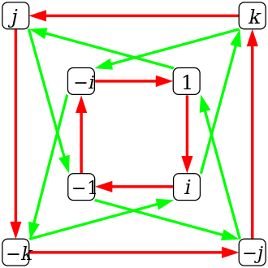
👆 Cayley graph of Q8. The red arrows represent multiplication on the right by i, and the green arrows represent multiplication on the right by j.
Q8的凯莱图。 红色箭头代表右边乘以 i，绿色箭头代表右边乘以 j。
The set \({\displaystyle \mathbb {H} }\) of all quaternions is a vector space over the real numbers with dimension 4.[c] Multiplication of quaternions is associative and distributes over vector addition, but with the exception of the scalar subset, it is not commutative. Therefore, the quaternions \({\displaystyle \mathbb {H} }\) are a non-commutative, associative algebra over the real numbers. Even though \({\displaystyle \mathbb {H} }\) contains copies of the complex numbers, it is not an associative algebra over the complex numbers.
所有四元数的集合 \({\displaystyle \mathbb {H} }\) 是维数为 4 的实数上的向量空间。[c] 四元数满足乘法结合律和加法分配律，不满足交换律（除了其标量子集可交换—）。 因此，四元数 \({\displaystyle \mathbb {H} }\) 是实数上的非交换结合代数。 尽管 \({\displaystyle \mathbb {H} }\) 包含复数的副本，但它不是复数上的结合代数。
❓ 四元数与复数的计算不满足结合律？
Because it is possible to divide quaternions, they form a division algebra. This is a structure similar to a field except for the non-commutativity of multiplication. Finite-dimensional associative division algebras over the real numbers are very rare. The Frobenius theorem states that there are exactly three: \({\displaystyle \mathbb {R} }\) , \({\displaystyle \mathbb {C} }\) , and \({\displaystyle \mathbb {H} }\) . The norm makes the quaternions into a normed algebra, and normed division algebras over the real numbers are also very rare: Hurwitz's theorem says that there are only four: \({\displaystyle \mathbb {R} }\) , \({\displaystyle \mathbb {C} }\) , \({\displaystyle \mathbb {H} }\) , and \({\displaystyle \mathbb {O} }\) (the octonions). The quaternions are also an example of a composition algebra and of a unital Banach algebra.
因为四元数可以相除，所以它们形成了一个除法代数。 这是一个类似于域的结构，除了乘法的不可交换性。 实数上的有限维关联除法代数非常罕见。 Frobenius 定理指出正好有三个：\({\displaystyle \mathbb {R} }\) 、\({\displaystyle \mathbb {C} }\) 和 \({\displaystyle \mathbb {H} } $$ 。 范数使四元数成为范数代数，实数上的范数除法也非常罕见：赫尔维茨定理说只有四个： \({\displaystyle \mathbb {R} }\) , \({\ displaystyle \mathbb {C} }\) 、 \({\displaystyle \mathbb {H} }\) 和 \({\displaystyle \mathbb {O} }\) （八元数）。 四元数也是合成代数和单位巴拿赫代数的一个例子。
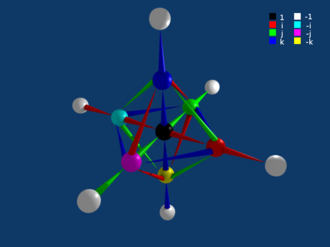
Three-dimensional graph of Q8. Red, green and blue arrows represent multiplication by i, j, and k, respectively. Multiplication by negative numbers are omitted for clarity.
Q8的三维图。 红色、绿色和蓝色箭头分别表示乘以 i、j 和 k。 为清楚起见，省略了乘以负数。
Because the product of any two basis vectors is plus or minus another basis vector, the set {±1, ±i, ±j, ±k} forms a group under multiplication. This non-abelian group is called the quaternion group and is denoted Q8.[29] The real group ring of Q8 is a ring \({\displaystyle \mathbb {R} [\mathrm {Q} _{8}]}\) which is also an eight-dimensional vector space over \({\displaystyle \mathbb {R} .}\). It has one basis vector for each element of \({\displaystyle \mathrm {Q} _{8}.}\) The quaternions are isomorphic to the quotient ring of \({\displaystyle \mathbb {R} [\mathrm {Q} _{8}]}\) by the ideal generated by the elements 1 + (−1), i + (−i), j + (−j), and k + (−k). Here the first term in each of the differences is one of the basis elements 1, i, j, and k, and the second term is one of basis elements −1, −i, −j, and −k, not the additive inverses of 1, i, j, and k.
因为任何两个基向量的乘积是正负另一个基向量，所以集合{±1，±i，±j，±k}在乘法下形成一个群。 这个非阿贝尔群称为四元数群，记为 Q8。 [29] Q8 的实群环是一个环 \({\displaystyle \mathbb {R} [\mathrm {Q} _{8}]}\) 也是 \({\displaystyle \mathbb 上的一个八维向量空间 {R} .}\)。 \({\displaystyle \mathrm {Q} _{8}.}\) 的每个元素都有一个基向量。四元数同构于 \({\displaystyle \mathbb {R} [\mathrm { Q} _{8}]}\) 由元素 1 + (−1)、i + (−i)、j + (−j) 和 k + (−k) 生成的理想。 这里每个差的第一项是基元素 1、i、j 和 k 之一，第二项是基元素 -1、-i、-j 和 -k 之一，而不是加法逆元 1、i、j 和 k。
四元数和空间几何
The vector part of a quaternion can be interpreted as a coordinate vector in \({\displaystyle \mathbb {R} ^{3};}\) therefore, the algebraic operations of the quaternions reflect the geometry of \({\displaystyle \mathbb {R} ^{3}.}\) Operations such as the vector dot and cross products can be defined in terms of quaternions, and this makes it possible to apply quaternion techniques wherever spatial vectors arise. A useful application of quaternions has been to interpolate the orientations of key-frames in computer graphics.[14]
四元数的向量部分可以解释为 \({\displaystyle \mathbb {R} ^{3};}\) 中的坐标向量，因此，四元数的代数运算反映了 \({\displaystyle \mathbb {R} ^{3}.}\) 可以根据四元数定义向量点和叉积等运算，这使得在出现空间向量的任何地方都可以应用四元数技术。 四元数的一个有用应用是在计算机图形学中插入关键帧的方向。 [14]
For the remainder of this section, i, j, and k will denote both the three imaginary[30] basis vectors of \({\displaystyle \mathbb {H} }\) and a basis for \({\displaystyle \mathbb {R} ^{3}.}\) Replacing i by −i, j by −j, and k by −k sends a vector to its additive inverse, so the additive inverse of a vector is the same as its conjugate as a quaternion. For this reason, conjugation is sometimes called the spatial inverse.
对于本节的接下来部分，i、j 和 k 既表示 \({\displaystyle \mathbb {H} }\) 的三个虚数[30] 基向量，同时也表示 \({\displaystyle \mathbb { R} ^{3}.}\) 将 i 替换为 -i，j 替换为 -j，k 替换为 -k 就是向量的加法逆，因此向量的加法逆与它作为四元数的共轭相同 .
❓ 为什么加法逆的实部不需要取反？
因此，共轭有时被称为空间逆。
For two vector quaternions p = b1i + c1j + d1k and q = b2i + c2j + d2k their dot product, by analogy to vectors in \({\displaystyle \mathbb {R} ^{3},}\) is
对于两个向量四元数 p = b1i + c1j + d1k 和 q = b2i + c2j + d2k 它们的点积，类似于 \({\displaystyle \mathbb {R} ^{3},}\) 中的向量点积
$$ {\displaystyle p\cdot q=b_{1}b_{2}+c_{1}c_{2}+d_{1}d_{2}~.} $$
📌 向量四元数的点积是实数
It can also be expressed in a component-free manner as
它也可以用无分量的方式表示为
$$ {\displaystyle p\cdot q=\textstyle {\frac {1}{2}}(p^{}q+q^{}p)=\textstyle {\frac {1}{2}}(pq^{}+qp^{}).} $$
📌 点积和乘法是两个不同的定义。
pq* 和 qp* 的标量相同，失量相反，用这种方式提取它们的标量部分
This is equal to the scalar parts of the products pq∗, qp∗, p∗q, and q∗p. Note that their vector parts are different.
这等于乘积 pq∗、qp∗、p∗q 和 q∗p 的标量部分。 请注意，它们的矢量部分是不同的。
The cross product of p and q relative to the orientation determined by the ordered basis i, j, and k is
p 和 q 的叉积方向由有序基 i、j 和 k 确定
$$ {\displaystyle p\times q=(c_{1}d_{2}-d_{1}c_{2})\mathbf {i} +(d_{1}b_{2}-b_{1}d_{2})\mathbf {j} +(b_{1}c_{2}-c_{1}b_{2})\mathbf {k} ,.} $$
📌 p和q是向量四元数，不考虑a
(Recall that the orientation is necessary to determine the sign.) This is equal to the vector part of the product pq (as quaternions), as well as the vector part of −q∗p∗. It also has the formula
（回想一下，方向是确定符号所必需的。）这等于乘积 pq（作为四元数）的向量部分，以及 -q∗p∗ 的向量部分。 它也有公式
$$ {\displaystyle p\times q=\textstyle {\tfrac {1}{2}}(pq-qp).} $$
For the commutator, [p, q] = pq − qp, of two vector quaternions one obtains
对于交换子，[p, q] = pq - qp，得到
$$ {\displaystyle [p,q]=2p\times q.} $$
In general, let p and q be quaternions and write
一般来说，设 p 和 q 是四元数，写作
$$ {\displaystyle p=p_{\text{s}}+p_{\text{v}},} $$
$$ {\displaystyle q=q_{\text{s}}+q_{\text{v}},} $$
where ps and qs are the scalar parts, and pv and qv are the vector parts of p and q. Then we have the formula
其中 ps 和 qs 是标量部分，pv 和 qv 是 p 和 q 的向量部分。 然后我们有公式
$$ {\displaystyle pq=(pq){\text{s}}+(pq){\text{v}}=(p_{\text{s}}q_{\text{s}}-p_{\text{v}}\cdot q_{\text{v}})+(p_{\text{s}}q_{\text{v}}+q_{\text{s}}p_{\text{v}}+p_{\text{v}}\times q_{\text{v}}).} $$
📌 \(p_{\text{v}}\times q_{\text{v}}\)不可交换
This shows that the noncommutativity of quaternion multiplication comes from the multiplication of vector quaternions. It also shows that two quaternions commute if and only if their vector parts are collinear. Hamilton[31] showed that this product computes the third vertex of a spherical triangle from two given vertices and their associated arc-lengths, which is also an algebra of points in Elliptic geometry.
这说明四元数乘法的不可交换性来自向量四元数的乘法。 它还表明，当且仅当它们的向量部分共线时，两个四元数可以交换。 Hamilton[31] 表明，该乘积从两个给定顶点及其相关的弧长计算球面三角形的第三个顶点，这也是椭圆几何中的点代数。
📌 给定的顶点：pv和qv
相关的弧长：ps和qs
Unit quaternions can be identified with rotations in \({\displaystyle \mathbb {R} ^{3}}\) and were called versors by Hamilton.[31] Also see Quaternions and spatial rotation for more information about modeling three-dimensional rotations using quaternions.
单位四元数可以用 \({\displaystyle \mathbb {R} ^{3}}\) 中的旋转来识别，并被 Hamilton 称为 versors。 [31] 另请参阅四元数和空间旋转，了解有关使用四元数对三维旋转进行建模的更多信息。
See Hanson (2005)[32] for visualization of quaternions.
有关四元数的可视化，请参见 Hanson (2005)[32]。
矩阵表示
Just as complex numbers can be represented as matrices, so can quaternions. There are at least two ways of representing quaternions as matrices in such a way that quaternion addition and multiplication correspond to matrix addition and matrix multiplication. One is to use 2 × 2 complex matrices, and the other is to use 4 × 4 real matrices. In each case, the representation given is one of a family of linearly related representations. In the terminology of abstract algebra, these are injective homomorphisms from \({\displaystyle \mathbb {H} }\) to the matrix rings M(2,ℂ) and M(4,ℝ), respectively.
正如复数可以表示为矩阵一样，四元数也可以。 至少有两种将四元数表示为矩阵的方式，使得四元数加法和乘法对应于矩阵加法和矩阵乘法。 一种是使用 2 × 2 复矩阵，另一种是使用 4 × 4 实矩阵。 在每种情况下，给定的表示是一系列线性相关的表示之一。
❓ 在每种情况下，给定的表示是一系列线性相关的表示之一。?
在抽象代数的术语中，这些是从 \({\displaystyle \mathbb {H} }\) 到矩阵环 M(2,ℂ) 和 M(4,ℝ) 的单射同态。
使用 2 × 2 复矩阵
Using 2 × 2 complex matrices, the quaternion a + bi + cj + dk can be represented as
使用 2 × 2 复矩阵，四元数 a + bi + cj + dk 可以表示为
$$ {\displaystyle {\begin{bmatrix}a+bi&c+di\-c+di&a-bi\end{bmatrix}}.} $$
Note that the "i" of the complex numbers is distinct from the "i" of the quaternions.
请注意，复数的“i”与四元数的“i”不同。
This representation has the following properties:
此表示具有以下属性：
- Constraining any two of b, c and d to zero produces a representation of complex numbers. For example, setting c = d = 0 produces a diagonal complex matrix representation of complex numbers, and setting b = d = 0 produces a real matrix representation.
将 b、c 和 d 中的任意两个约束为零会产生复数的表示。 例如，设置 c = d = 0 生成复数的对角复矩阵表示，设置 b = d = 0 生成实矩阵表示。
❓ 复数的表示？
-
The norm of a quaternion (the square root of the product with its conjugate, as with complex numbers) is the square root of the determinant of the corresponding matrix.[33]
四元数的范数（乘积与其共轭的平方根，与复数一样）是相应矩阵行列式的平方根。 [33] -
The conjugate of a quaternion corresponds to the conjugate transpose of the matrix.
四元数的共轭对应于矩阵的共轭转置。
❓ 矩阵的共轭转置？
-
By restriction this representation yields an isomorphism between the subgroup of unit quaternions and their image SU(2). Topologically, the unit quaternions are the 3-sphere, so the underlying space of SU(2) is also a 3-sphere. The group SU(2) is important for describing spin in quantum mechanics; see Pauli matrices.
通过限制，这种表示在单位四元数的子群和它们的图像 SU(2) 之间产生了同构。 拓扑上，单位四元数是 3 球体，所以 SU(2) 的底层空间也是 3 球体。 SU(2) 群对于描述量子力学中的自旋很重要； 参见Pauli矩阵。 -
There is a strong relation between quaternion units and Pauli matrices. Obtain the eight quaternion unit matrices by taking a, b, c and d, set three of them at zero and the fourth at 1 or −1. Multiplying any two Pauli matrices always yields a quaternion unit matrix, all of them except for −1. One obtains −1 via i2 = j2 = k2 = i j k = −1; e.g. the last equality is \({\displaystyle {\begin{aligned}ijk=\sigma _{1}\sigma _{2}\sigma _{3}\sigma _{1}\sigma _{2}\sigma _{3}=-1\end{aligned}}}\)
四元数单元和Pauli矩阵之间存在很强的关系。 通过取 a、b、c 和 d 获得八个四元数单位矩阵，将其中三个设置为零，第四个设置为 1 或 -1。 将任何两个Pauli矩阵相乘总是会产生一个四元数单位矩阵，除了 -1 之外的所有矩阵。 一个通过 i2 = j2 = k2 = i j k = -1 获得 -1； 例如 最后一个等式是 \({\displaystyle {\begin{aligned}ijk=\sigma _{1}\sigma _{2}\sigma _{3}\sigma _{1}\sigma _{2}\sigma _{3}=-1\end{aligned}}}\)
使用 4 × 4 实矩阵
Using 4 × 4 real matrices, that same quaternion can be written as
使用 4 × 4 实矩阵，相同的四元数可以写为
$$ {\displaystyle {\begin{bmatrix}a&-b&-c&-d\b&a&-d&c\c&d&a&-b\d&-c&b&a\end{bmatrix}}=a{\begin{bmatrix}1&0&0&0\0&1&0&0\0&0&1&0\0&0&0&1\end{bmatrix}}+b{\begin{bmatrix}0&-1&0&0\1&0&0&0\0&0&0&-1\0&0&1&0\end{bmatrix}}+c{\begin{bmatrix}0&0&-1&0\0&0&0&1\1&0&0&0\0&-1&0&0\end{bmatrix}}+d{\begin{bmatrix}0&0&0&-1\0&0&-1&0\0&1&0&0\1&0&0&0\end{bmatrix}}.} $$
However, the representation of quaternions in M(4,ℝ) is not unique. For example, the same quaternion can also be represented as
然而，M(4,ℝ) 中四元数的表示并不是唯一的。 例如，同样的四元数也可以表示为
$$ {\displaystyle {\begin{bmatrix}a&d&-b&-c\-d&a&c&-b\b&-c&a&-d\c&b&d&a\end{bmatrix}}=a{\begin{bmatrix}1&0&0&0\0&1&0&0\0&0&1&0\0&0&0&1\end{bmatrix}}+b{\begin{bmatrix}0&0&-1&0\0&0&0&-1\1&0&0&0\0&1&0&0\end{bmatrix}}+c{\begin{bmatrix}0&0&0&-1\0&0&1&0\0&-1&0&0\1&0&0&0\end{bmatrix}}+d{\begin{bmatrix}0&1&0&0\-1&0&0&0\0&0&0&-1\0&0&1&0\end{bmatrix}}.} $$
There exist 48 distinct matrix representations of this form in which one of the matrices represents the scalar part and the other three are all skew-symmetric. More precisely, there are 48 sets of quadruples of matrices with these symmetry constraints such that a function sending 1, i, j, and k to the matrices in the quadruple is a homomorphism, that is, it sends sums and products of quaternions to sums and products of matrices.[34] In this representation, the conjugate of a quaternion corresponds to the transpose of the matrix. The fourth power of the norm of a quaternion is the determinant of the corresponding matrix. As with the 2 × 2 complex representation above, complex numbers can again be produced by constraining the coefficients suitably; for example, as block diagonal matrices with two 2 × 2 blocks by setting c = d = 0.
这种形式存在 48 个不同的矩阵表示，其中一个矩阵表示标量部分，其他三个都是斜对称的。 更准确地说，有 48 组具有这些对称约束的矩阵四元组，使得将 1、i、j 和 k 发送到四元组中的矩阵的函数是同态的，也就是说，它将四元数的和和乘积发送到和 和矩阵的产品。[34] 在这种表示中，四元数的共轭对应于矩阵的转置。 四元数范数的四次方是对应矩阵的行列式。 与上面的 2 × 2 复数表示一样，可以通过适当地约束系数再次生成复数； 例如，通过设置 c = d = 0 作为具有两个 2 × 2 块的块对角矩阵。
Each 4×4 matrix representation of quaternions corresponds to a multiplication table of unit quaternions. For example, the last matrix representation given above corresponds to the multiplication table
四元数的每个 4×4 矩阵表示对应于单位四元数的乘法表。 例如，上面给出的最后一个矩阵表示对应于乘法表
| × | a | d | −b | −c |
|---|---|---|---|---|
| a | a | d | −b | −c |
| −d | −d | a | c | −b |
| b | b | −c | a | −d |
| c | c | b | d | a |
which is isomorphic — through \({\displaystyle {a\mapsto 1,b\mapsto i,c\mapsto j,d\mapsto k}}\) — to
这是同构的 - 通过 \({\displaystyle {a\mapsto 1,b\mapsto i,c\mapsto j,d\mapsto k}}\) - 到
| × | 1 | k | −i | −j |
|---|---|---|---|---|
| 1 | 1 | k | −i | −j |
| −k | −k | 1 | j | −i |
| i | i | −j | 1 | −k |
| j | j | i | k | 1 |
Constraining any such multiplication table to have the identity in the first row and column and for the signs of the row headers to be opposite to those of the column headers, then there are 3 possible choices for the second column (ignoring sign), 2 possible choices for the third column (ignoring sign), and 1 possible choice for the fourth column (ignoring sign); that makes 6 possibilities. Then, the second column can be chosen to be either positive or negative, the third column can be chosen to be positive or negative, and the fourth column can be chosen to be positive or negative, giving 8 possibilities for the sign. Multiplying the possibilities for the letter positions and for their signs yields 48. Then replacing 1 with a, i with b, j with c, and k with d and removing the row and column headers yields a matrix representation of a + b i + c j + d k .
约束任何这样的乘法表在第一行和第一列中具有同一性，并且行标题的符号与列标题的符号相反，那么第二列有 3 种可能的选择（忽略符号），2 种可能 第三列的选择（忽略符号），第四列的一个可能选择（忽略符号）； 这产生了 6 种可能性。 然后，第二列可以选择为正或负，第三列可以选择为正或负，第四列可以选择为正或负，给出8种可能的符号。 将字母位置及其符号的可能性相乘得到 48。然后将 1 替换为 a，将 i 替换为 b，将 j 替换为 c，将 k 替换为 d，并删除行和列标题，得到 a + bi + cj + 的矩阵表示。
Lagrange’s four-square theorem 拉格朗日四平方定理
Main article: Lagrange's four-square theorem
主条目：拉格朗日四平方定理
Quaternions are also used in one of the proofs of Lagrange's four-square theorem in number theory, which states that every nonnegative integer is the sum of four integer squares. As well as being an elegant theorem in its own right, Lagrange's four square theorem has useful applications in areas of mathematics outside number theory, such as combinatorial design theory. The quaternion-based proof uses Hurwitz quaternions, a subring of the ring of all quaternions for which there is an analog of the Euclidean algorithm.
四元数也用于数论中拉格朗日四平方定理的证明之一，该定理指出每个非负整数都是四个整数平方的和。 拉格朗日四平方定理本身不仅是一个优雅的定理，而且在数论之外的数学领域也有有用的应用，例如组合设计理论。 基于四元数的证明使用 Hurwitz 四元数，它是所有四元数环的一个子环，其中有一个欧几里得算法的类似物。
Quaternions as pairs of complex numbers 四元数作为复数对
Main article: Cayley–Dickson construction
主条目：Cayley-Dickson 构造
Quaternions can be represented as pairs of complex numbers. From this perspective, quaternions are the result of applying the Cayley–Dickson construction to the complex numbers. This is a generalization of the construction of the complex numbers as pairs of real numbers.
四元数可以表示为复数对。 从这个角度来看，四元数是将 Cayley-Dickson 构造应用于复数的结果。 这是将复数构造为实数对的概括。
Let \({\displaystyle \mathbb {C} ^{2}}\) be a two-dimensional vector space over the complex numbers. Choose a basis consisting of two elements 1 and j. A vector in \({\displaystyle \mathbb {C} ^{2}}\) can be written in terms of the basis elements 1 and j as
令 \({\displaystyle \mathbb {C} ^{2}}\) 是复数上的二维向量空间。 选择一个由两个元素 1 和 j 组成的基。 \({\displaystyle \mathbb {C} ^{2}}\) 中的向量可以写成基元素 1 和 j 为
$$ {\displaystyle (a+bi)1+(c+di)\mathbf {j} ,.} $$
If we define j2 = −1 and i j = −j i, then we can multiply two vectors using the distributive law. Using k as an abbreviated notation for the product i j leads to the same rules for multiplication as the usual quaternions. Therefore, the above vector of complex numbers corresponds to the quaternion a + b i + c j + d k . If we write the elements of \({\displaystyle \mathbb {C} ^{2}}\) as ordered pairs and quaternions as quadruples, then the correspondence is
如果我们定义 j2 = -1 和 i j = -j i，那么我们可以使用分配定律将两个向量相乘。 使用 k 作为乘积 i j 的缩写符号会导致与通常的四元数相同的乘法规则。 因此，上述复数向量对应于四元数 a + b i + c j + d k 。 如果我们将 \({\displaystyle \mathbb {C} ^{2}}\) 的元素写成有序对，四元数写成四元数，那么对应关系是
$$ {\displaystyle (a+bi,\ c+di)\leftrightarrow (a,b,c,d).} $$
Square roots 平方根
Square roots of −1 -1的平方根
In the complex numbers, \({\displaystyle \mathbb {C} ,}\) there are just two numbers, i and −i, whose square is −1 . In \({\displaystyle \mathbb {H} }\) there are infinitely many square roots of minus one: the quaternion solution for the square root of −1 is the unit sphere in \({\displaystyle \mathbb {R} ^{3}.}\) To see this, let q = a + b i + c j + d k be a quaternion, and assume that its square is −1. In terms of a, b, c, and d, this means
在复数 \({\displaystyle \mathbb {C} ,}\) 中只有两个数 i 和 -i，它们的平方是 -1 。 在 \({\displaystyle \mathbb {H} }\) 中有无穷多个负一的平方根：-1 平方根的四元数解是 \({\displaystyle \mathbb {R} 中的单位球 ^ {3}.}\) 要看到这一点，让 q = a + bi + cj + dk 是一个四元数，并假设它的平方为 -1。 就 a、b、c 和 d 而言，这意味着
$$ {\displaystyle a^{2}-b^{2}-c^{2}-d^{2}=-1,} $$
$$ {\displaystyle 2ab=0,} $$
$$ {\displaystyle 2ac=0,} $$
$$ {\displaystyle 2ad=0.} $$
To satisfy the last three equations, either a = 0 or b, c, and d are all 0. The latter is impossible because a is a real number and the first equation would imply that a2 = −1. Therefore, a = 0 and b2 + c2 + d2 = 1. In other words: A quaternion squares to −1 if and only if it is a vector quaternion with norm 1. By definition, the set of all such vectors forms the unit sphere.
要满足最后三个方程，要么 a = 0，要么 b、c 和 d 都为 0。后者是不可能的，因为 a 是实数，而第一个方程意味着 a2 = -1。 因此，a = 0 和 b2 + c2 + d2 = 1。换句话说：当且仅当它是范数为 1 的向量四元数时，四元数平方为 -1。根据定义，所有此类向量的集合形成单位球体 .
Only negative real quaternions have infinitely many square roots. All others have just two (or one in the case of 0).[citation needed][d]
只有负实数四元数有无穷多个平方根。 所有其他人只有两个（或在 0 的情况下一个）。[需要引用][d]
As a union of complex planes 作为复平面的联合
Each pair of square roots of −1 creates a distinct copy of the complex numbers inside the quaternions. If q2 = −1, then the copy is determined by the function
每对 -1 的平方根在四元数内创建一个复数的不同副本。 如果 q2 = -1，则副本由函数确定
$$ {\displaystyle a+b{\sqrt {-1,}}\mapsto a+bq,.} $$
This is an injective ring homomorphism from \({\displaystyle \mathbb {C} }\) to \({\displaystyle \mathbb {H} ,}\) which defines a field isomorphism from \({\displaystyle \mathbb {C} }\) onto its image. The images of the embeddings corresponding to q and −q are identical.
这是一个从 \({\displaystyle \mathbb {C} }\) 到 \({\displaystyle \mathbb {H} ,}\) 的单射环同态，它定义了从 \({\displaystyle \mathbb {C } }\) 到它的图像上。 对应于 q 和 -q 的嵌入的图像是相同的。
Every non-real quaternion generates a subalgebra of the quaternions that is isomorphic to \({\displaystyle \mathbb {C} ,}\) and is thus a planar subspace of \({\displaystyle \mathbb {H} \colon }\) write q as the sum of its scalar part and its vector part:
每个非实数四元数生成一个四元数的子代数，它与 \({\displaystyle \mathbb {C} ,}\) 同构，因此是 \({\displaystyle \mathbb {H} \colon }\) 的平面子空间将 q 写为其标量部分和向量部分之和：
$$ {\displaystyle q=q_{s}+{\vec {q}}_{v}.} $$
Decompose the vector part further as the product of its norm and its versor:
将向量部分进一步分解为其范数及其倒数的乘积：
$$ {\displaystyle q=q_{s}+\lVert {\vec {q}}{v}\rVert \cdot \mathbf {U} {\vec {q}}{v}=q_{s}+{\frac {q_{v}}{|q_{v}|}}.} $$
(Note that this is not the same as \({\displaystyle q_{s}+\lVert q\rVert \cdot \mathbf {U} q}\) The versor of the vector part of q, \({\displaystyle \mathbf {U} {\vec {q}}_{v}}\), is a right versor with –1 as its square. A straightforward verification shows that
（注意这和 \({\displaystyle q_{s}+\lVert q\rVert \cdot \mathbf {U} q}\) q的向量部分的倒数， \({\displaystyle \mathbf {U} {\vec {q}}_{v}}\), 是一个以 –1 为平方的右 versor。一个简单的验证表明
$$ {\displaystyle a+b{\sqrt {-1,}}\mapsto a+b\mathbf {U} {\vec {q}}_{v}} $$
defines an injective homomorphism of normed algebras from \({\displaystyle \mathbb {C} }\) into the quaternions. Under this homomorphism, q is the image of the complex number \({\displaystyle q_{s}+\lVert {\vec {q}}_{v}\rVert i}\).
定义了从 \({\displaystyle \mathbb {C} }\) 到四元数的范数的单射同态。 在这种同态下，q 是复数 \({\displaystyle q_{s}+\lVert {\vec {q}}_{v}\rVert i}\) 的图像。
As \({\displaystyle \mathbb {H} }\) is the union of the images of all these homomorphisms, this allows viewing the quaternions as a union of complex planes intersecting on the real line. Each of these complex planes contains exactly one pair of antipodal points of the sphere of square roots of minus one.
由于 \({\displaystyle \mathbb {H} }\) 是所有这些同态的图像的并集，因此可以将四元数视为在实线上相交的复平面的并集。 这些复平面中的每一个都恰好包含负一平方根球面的一对对映点。
Commutative subrings 交换子环
The relationship of quaternions to each other within the complex subplanes of \({\displaystyle \mathbb {H} }\) can also be identified and expressed in terms of commutative subrings. Specifically, since two quaternions p and q commute (i.e., p q = q p) only if they lie in the same complex subplane of \({\displaystyle \mathbb {H} }\) , the profile of \({\displaystyle \mathbb {H} }\) as a union of complex planes arises when one seeks to find all commutative subrings of the quaternion ring.
\({\displaystyle \mathbb {H} }\) 的复子平面内四元数之间的关系也可以用交换子环来识别和表达。 具体来说，由于两个四元数 p 和 q 仅当它们位于 \({\displaystyle \mathbb {H} }\) 的同一个复子平面中时才可对易（即 pq = qp），\({\displaystyle \mathbb {H} }\) 作为复平面的并集出现在寻找四元数环的所有可交换子环时。
Square roots of arbitrary quaternions 任意四元数的平方根
Any quaternion \({\displaystyle \mathbf {q} =(r,,{\vec {v}})}\) (represented here in scalar–vector representation) has at least one square root \({\displaystyle {\sqrt {\mathbf {q} }}=(x,,{\vec {y}})}\) which solves the equation \({\displaystyle {\sqrt {\mathbf {q} }}^{2}=(x,,{\vec {y}})^{2}=\mathbf {q} }\). Looking at the scalar and vector parts in this equation separately yields two equations, which when solved gives the solutions
任何四元数 \({\displaystyle \mathbf {q} =(r,,{\vec {v}})}\)（这里以标量-矢量表示）至少有一个平方根 \({\displaystyle { \sqrt {\mathbf {q} }}=(x,,{\vec {y}})}\) 求解方程 \({\displaystyle {\sqrt {\mathbf {q} }}^{2 }=(x,,{\vec {y}})^{2}=\mathbf {q} }\)。 分别查看该方程中的标量和矢量部分会产生两个方程，求解时会给出解
$$ {\displaystyle {\sqrt {\mathbf {q} }}={\sqrt {(r,,{\vec {v}},)}}=\pm \left({\sqrt {\frac {|\mathbf {q} |+r}{2}}},\ {\frac {\vec {v}}{|{\vec {v}}|}}{\sqrt {\frac {|\mathbf {q} |-r}{2}}}\right),} $$
where \({\displaystyle |{\vec {v}}|={\sqrt { {\vec {v} }\cdot {\vec {v}}}}={\sqrt {-{\vec {v}}^{2}}}}\) is the norm of \({\displaystyle {\vec {v}}}\) and \({\displaystyle |\mathbf {q} |={\sqrt {\mathbf {q} ^{*}\mathbf {q} }}=r^{2}+|{\vec {v}}|^{2}}\) is the norm of \({\displaystyle \mathbf {q} }\) . For any scalar quaternion \({\displaystyle \mathbf {q} }\), this equation provides the correct square roots if \({\displaystyle {\frac {\vec {v}}{|{\vec {v}}|}}}\) is interpreted as an arbitrary unit vector.
其中 \({\displaystyle |{\vec {v}}|={\sqrt { {\vec {v} }\cdot {\vec {v}}}}={\sqrt {-{\vec { v}}^{2}}}}\) 是 \({\displaystyle {\vec {v}}}\) 和 \({\displaystyle |\mathbf {q} |={\sqrt 的范数 {\mathbf {q} ^{*}\mathbf {q} }}=r^{2}+|{\vec {v}}|^{2}}\) 是 \({\ 显示风格 \mathbf {q} }\) 。 对于任何标量四元数 \({\displaystyle \mathbf {q} }\)，如果 \({\displaystyle {\frac {\vec {v}}{|{\vec {v} }|}}}\) 被解释为任意单位向量。
Therefore, non-zero, non-scalar quaternions, or positive scalar quaternions, have exactly two roots, while 0 has exactly one root (0), and negative scalar quaternions have infinitely many roots, which are the vector quaternions located on \({\displaystyle {0}\times S^{2}({\sqrt {-r}})}\), i.e., where the scalar part is zero and the vector part is located on the 2-sphere with radius \({\displaystyle {\sqrt {-r}}}\).
因此，非零、非标量四元数或正标量四元数正好有两个根，而 0 正好有一个根 (0)，负标量四元数有无穷多个根，即位于 \({ 上的向量四元数 \displaystyle {0}\times S^{2}({\sqrt {-r}})}\)，即标量部分为零，向量部分位于半径为$的2-球体上 ${\displaystyle {\sqrt {-r}}}\)。
Functions of a quaternion variable 四元变量的函数
Main article: Quaternionic analysis
主条目：四元离子分析
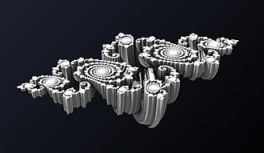
👆 The Julia sets and Mandelbrot sets can be extended to the Quaternions, but they must use cross sections to be rendered visually in 3 dimensions. This Julia set is cross sectioned at the x y plane.
Julia 集和 Mandelbrot 集可以扩展到四元数，但它们必须使用横截面才能在 3 维视觉上呈现。 这个 Julia 集在 x y 平面上进行横截面。
Like functions of a complex variable, functions of a quaternion variable suggest useful physical models. For example, the original electric and magnetic fields described by Maxwell were functions of a quaternion variable. Examples of other functions include the extension of the Mandelbrot set and Julia sets into 4-dimensional space.[36]
与复变量的函数一样，四元数变量的函数提出了有用的物理模型。 例如，麦克斯韦描述的原始电场和磁场是四元数变量的函数。 其他函数的示例包括将 Mandelbrot 集和 Julia 集扩展到 4 维空间。 [36]
Exponential, logarithm, and power functions 指数、对数和幂函数
Given a quaternion,
给定一个四元数，
$$ {\displaystyle q=a+b\mathbf {i} +c\mathbf {j} +d\mathbf {k} =a+\mathbf {v} } $$
the exponential is computed as[37]
指数计算为[37]
$$ {\displaystyle \exp(q)=\sum _{n=0}^{\infty }{\frac {q^{n}}{n!}}=e^{a}\left(\cos |\mathbf {v} |+{\frac {\mathbf {v} }{|\mathbf {v} |}}\sin |\mathbf {v} |\right)~~} $$
and the logarithm is[37]
对数是[37]
$$ {\displaystyle \ln(q)=\ln |q|+{\frac {\mathbf {v} }{|\mathbf {v} |}}\arccos {\frac {a}{|q|}}~~} $$
It follows that the polar decomposition of a quaternion may be written
由此可见，四元数的极分解可以写成
$$ {\displaystyle q=|q|e^{ {\hat {n} }\varphi }=|q|\left(\cos(\varphi )+{\hat {n}}\sin(\varphi )\right),} $$
where the angle \({\displaystyle \varphi } [e]$$
其中角度 \({\displaystyle \varphi } [e]$$
$$ {\displaystyle a=|q|\cos(\varphi )} $$
and the unit vector \({\displaystyle {\hat {n}}}\) is defined by:
单位向量 \({\displaystyle {\hat {n}}}\) 定义为：
$$ {\displaystyle \mathbf {v} ={\hat {n}}|\mathbf {v} |={\hat {n}}|q|\sin(\varphi ),.} $$
Any unit quaternion may be expressed in polar form as:
任何单位四元数都可以用极性形式表示为：
$$ {\displaystyle q=\exp {({\hat {n}}\varphi )}}. $$
The power of a quaternion raised to an arbitrary (real) exponent x is given by:
提高到任意（实）指数 x 的四元数的幂由下式给出：
$$ {\displaystyle q^{x}=|q|^{x}e^{ {\hat {n} }x\varphi }=|q|^{x}\left(\cos(x\varphi )+{\hat {n}},\sin(x\varphi )\right)~.} $$
Geodesic norm 测地线范数
The geodesic distance dg(p, q) between unit quaternions p and q is defined as:
单位四元数 p 和 q 之间的测地线距离 dg(p, q) 定义为：
$$ {\displaystyle d_{\text{g}}(p,q)=\lVert \ln(p^{-1}q)\rVert .}[39] $$
and amounts to the absolute value of half the angle subtended by p and q along a great arc of the S3 sphere. This angle can also be computed from the quaternion dot product without the logarithm as:
并且等于沿 S3 球体的大弧线的 p 和 q 对角的一半的绝对值。 这个角度也可以从没有对数的四元数点积计算为：
$$ {\displaystyle \arccos(2(p\cdot q)^{2}-1).} $$
Three-dimensional and four-dimensional rotation groups 三维和四维旋转组
Main articles: Quaternions and spatial rotation and Rotation operator (vector space)
主要文章：四元数和空间旋转和旋转算子（向量空间）
The word "conjugation", besides the meaning given above, can also mean taking an element a to r a r−1 where r is some non-zero quaternion. All elements that are conjugate to a given element (in this sense of the word conjugate) have the same real part and the same norm of the vector part. (Thus the conjugate in the other sense is one of the conjugates in this sense.)
“共轭”这个词，除了上面给出的含义外，还可以表示将元素 a 变为 rar-1，其中 r 是某个非零四元数。 与给定元素共轭的所有元素（在这个词共轭的意义上）具有相同的实部和向量部分的相同范数。 （因此，另一种意义上的共轭是这种意义上的共轭之一。）
❓
rar-1:?
Thus the multiplicative group of non-zero quaternions acts by conjugation on the copy of \({\displaystyle \mathbb {R} ^{3}}\) consisting of quaternions with real part equal to zero. Conjugation by a unit quaternion (a quaternion of absolute value 1) with real part cos(φ) is a rotation by an angle 2φ, the axis of the rotation being the direction of the vector part. The advantages of quaternions are:
因此，非零四元数的乘法群通过共轭作用于由实部为零的四元数组成的 \({\displaystyle \mathbb {R} ^{3}}\) 的副本。 单位四元数（绝对值为 1 的四元数）与实部 cos(φ) 的共轭是角度 2φ 的旋转，旋转的轴是矢量部分的方向。 四元数的优点是：
- Avoiding gimbal lock, a problem with systems such as Euler angles.
避免万向节锁定，这是欧拉角等系统的问题。
❓
万向节锁定：？
-
Faster and more compact than matrices.
比矩阵更快、更紧凑。 -
Nonsingular representation (compared with Euler angles for example).
非奇异表示（例如与欧拉角相比）。
❓
非奇异表示：？
- Pairs of unit quaternions represent a rotation in 4D space (see Rotations in 4-dimensional Euclidean space: Algebra of 4D rotations).
成对的单位四元数表示 4D 空间中的旋转（请参阅 4 维欧几里得空间中的旋转：4D 旋转的代数）。
The set of all unit quaternions (versors) forms a 3-sphere S3 and a group (a Lie group) under multiplication, double covering the group SO(3,ℝ) of real orthogonal 3×3 matrices of determinant 1 since two unit quaternions correspond to every rotation under the above correspondence. See the plate trick.
所有单位四元数（versors）的集合在乘法下形成一个 3 球 S3 和一个群（李群），双重覆盖行列式 1 的实正交 3×3 矩阵的群 SO(3,ℝ)，因为两个单位四元数 对应于上述对应关系下的每一次旋转。 看盘子戏法。
Further information: Point groups in three dimensions
更多信息：三个维度的点群
The image of a subgroup of versors is a point group, and conversely, the preimage of a point group is a subgroup of versors. The preimage of a finite point group is called by the same name, with the prefix binary. For instance, the preimage of the icosahedral group is the binary icosahedral group.
一个对视子群的图像是一个点群，反之，一个点群的原像是一个对视子群。 有限点群的原像被称为同名，前缀为二进制。 例如，二十面体群的原像是二元二十面体群。
The versors' group is isomorphic to SU(2), the group of complex unitary 2×2 matrices of determinant 1.
versors 群与 SU(2) 同构，SU(2) 是行列式 1 的复酉 2×2 矩阵群。
Let A be the set of quaternions of the form a + b i + c j + d k where a, b, c, and d are either all integers or all half-integers. The set A is a ring (in fact a domain) and a lattice and is called the ring of Hurwitz quaternions. There are 24 unit quaternions in this ring, and they are the vertices of a regular 24 cell with Schläfli symbol {3,4,3}. They correspond to the double cover of the rotational symmetry group of the regular tetrahedron. Similarly, the vertices of a regular 600 cell with Schläfli symbol {3,3,5} can be taken as the unit icosians, corresponding to the double cover of the rotational symmetry group of the regular icosahedron. The double cover of the rotational symmetry group of the regular octahedron corresponds to the quaternions that represent the vertices of the disphenoidal 288-cell.
令 A 为 a + b i + c j + d k 形式的四元数集合，其中 a、b、c 和 d 要么全是整数，要么全是半整数。 集合 A 是一个环（实际上是一个域）和一个格，称为 Hurwitz 四元数环。 该环中有 24 个单位四元数，它们是具有 Schläfli 符号 {3,4,3} 的常规 24 单元的顶点。 它们对应于正四面体的旋转对称群的双覆盖。 类似地，具有 Schläfli 符号 {3,3,5} 的规则 600 单元的顶点可以作为单位 icosians，对应于规则二十面体的旋转对称群的双覆盖。 正八面体的旋转对称群的双覆盖对应于代表二蝶形 288 单元顶点的四元数。
四元数代数
Main article: Quaternion algebra
主条目：四元数代数
The Quaternions can be generalized into further algebras called quaternion algebras. Take F to be any field with characteristic different from 2, and a and b to be elements of F; a four-dimensional unitary associative algebra can be defined over F with basis 1, i, j, and i j, where i2 = a, j2 = b and i j = −j i (so (i j)2 = −a b).
四元数可以推广成更进一步的代数，称为四元数代数。 取 F 为特征不同于 2 的任意场，a 和 b 为 F 的元素； 可以在 F 上定义一个四维酉关联代数，基为 1、i、j 和 i j，其中 i2 = a，j2 = b 和 i j = -j i (so (i j)2 = -a b)。
Quaternion algebras are isomorphic to the algebra of 2×2 matrices over F or form division algebras over F, depending on the choice of a and b.
四元数代数同构于 F 上的 2×2 矩阵的代数或形成 F 上的除法代数，这取决于 a 和 b 的选择。
Quaternions as the even part of Cl3,0(ℝ) 四元数作为 Cl3,0(ℝ) 的偶数部分
Main article: Spinor § Three dimensions
主条目：旋量§三维
The usefulness of quaternions for geometrical computations can be generalised to other dimensions by identifying the quaternions as the even part \({\displaystyle \operatorname {Cl} _{3,0}^{+}(\mathbb {R} )}\) of the Clifford algebra \({\displaystyle \operatorname {Cl} _{3,0}(\mathbb {R} ).}\) This is an associative multivector algebra built up from fundamental basis elements σ1, σ2, σ3 using the product rules
通过将四元数识别为偶数部分 \({\displaystyle \operatorname {Cl} _{3,0}^{+}(\mathbb {R} )}$，可以将四元数对几何计算的有用性推广到其他维度 克利福德代数 \({\displaystyle \operatorname {Cl} _{3,0}(\mathbb {R} ).}\) 这是一个结合多向量代数，由基本基元 σ1、σ2、σ3 组成，使用 产品规则
$$ {\displaystyle \sigma _{1}^{2}=\sigma _{2}^{2}=\sigma _{3}^{2}=1,} $$
$$ {\displaystyle \sigma _{i}\sigma _{j}=-\sigma _{j}\sigma _{i}\qquad (j\neq i).} $$
If these fundamental basis elements are taken to represent vectors in 3D space, then it turns out that the reflection of a vector r in a plane perpendicular to a unit vector w can be written:
如果用这些基本基元来表示 3D 空间中的向量，那么向量 r 在垂直于单位向量 w 的平面中的反射可以写成：
$$ {\displaystyle r^{\prime }=-w,r,w.} $$
Two reflections make a rotation by an angle twice the angle between the two reflection planes, so
两个反射以两个反射平面之间角度的两倍旋转，所以
$$ {\displaystyle r^{\prime \prime }=\sigma _{2}\sigma _{1},r,\sigma _{1}\sigma _{2}} $$
corresponds to a rotation of 180° in the plane containing σ1 and σ2. This is very similar to the corresponding quaternion formula,
对应于在包含 σ1 和 σ2 的平面中旋转 180°。 这与对应的四元数公式非常相似，
$$ {\displaystyle r^{\prime \prime }=-\mathbf {k} ,r,\mathbf {k} .} $$
In fact, the two are identical, if we make the identification
其实两者是一样的，如果我们做鉴定
$$ {\displaystyle \mathbf {k} =\sigma _{2}\sigma _{1},,\quad \mathbf {i} =\sigma _{3}\sigma _{2},,\quad \mathbf {j} =\sigma _{1}\sigma _{3},,} $$
and it is straightforward to confirm that this preserves the Hamilton relations
并且很容易确认这保留了Hamilton关系
$$ {\displaystyle \mathbf {i} ^{2}=\mathbf {j} ^{2}=\mathbf {k} ^{2}=\mathbf {i,j,k} =-1~.} $$
In this picture, so-called "vector quaternions" (that is, pure imaginary quaternions) correspond not to vectors but to bivectors – quantities with magnitude and orientations associated with particular 2D planes rather than 1D directions. The relation to complex numbers becomes clearer, too: in 2D, with two vector directions σ1 and σ2, there is only one bivector basis element σ1σ2, so only one imaginary. But in 3D, with three vector directions, there are three bivector basis elements σ1σ2, σ2σ3, σ3σ1, so three imaginaries.
在这张图片中，所谓的“向量四元数”（即纯虚数四元数）对应的不是向量而是双向量——具有与特定 2D 平面而非 1D 方向相关联的大小和方向的量。 与复数的关系也变得更加清晰：在二维中，有两个向量方向 σ1 和 σ2，只有一个双向量基元 σ1σ2，所以只有一个虚数。 但在 3D 中，具有三个向量方向，存在三个双向量基元 σ1σ2、σ2σ3、σ3σ1，因此三个虚数。
This reasoning extends further. In the Clifford algebra \({\displaystyle \operatorname {Cl} _{4,0}(\mathbb {R} ),}\) there are six bivector basis elements, since with four different basic vector directions, six different pairs and therefore six different linearly independent planes can be defined. Rotations in such spaces using these generalisations of quaternions, called rotors, can be very useful for applications involving homogeneous coordinates. But it is only in 3D that the number of basis bivectors equals the number of basis vectors, and each bivector can be identified as a pseudovector.
这个推理进一步延伸。 在克利福德代数 \({\displaystyle \operatorname {Cl} _{4,0}(\mathbb {R} ),}\) 中有六个双向量基元素，因为有四个不同的基本向量方向，六个不同的对和 因此可以定义六个不同的线性独立平面。 使用这些四元数的推广（称为转子）在此类空间中的旋转对于涉及齐次坐标的应用非常有用。 但是只有在 3D 中，基双向量的数量才等于基向量的数量，并且每个双向量都可以被识别为伪向量。
There are several advantages for placing quaternions in this wider setting:[40]
在这种更广泛的设置中放置四元数有几个优点：[40]
-
Rotors are a natural part of geometric algebra and easily understood as the encoding of a double reflection.
转子是几何代数的自然组成部分，很容易理解为双反射的编码。 -
In geometric algebra, a rotor and the objects it acts on live in the same space. This eliminates the need to change representations and to encode new data structures and methods, which is traditionally required when augmenting linear algebra with quaternions.
在几何代数中，转子和它作用的物体存在于同一个空间中。 这消除了更改表示和编码新的数据结构和方法的需要，而这在使用四元数增强线性代数时是传统上需要的。 -
Rotors are universally applicable to any element of the algebra, not just vectors and other quaternions, but also lines, planes, circles, spheres, rays, and so on.
转子普遍适用于代数的任何元素，不仅适用于向量和其他四元数，还适用于线、平面、圆、球体、射线等。 -
In the conformal model of Euclidean geometry, rotors allow the encoding of rotation, translation and scaling in a single element of the algebra, universally acting on any element. In particular, this means that rotors can represent rotations around an arbitrary axis, whereas quaternions are limited to an axis through the origin.
在欧几里得几何的共形模型中，转子允许在代数的单个元素中对旋转、平移和缩放进行编码，普遍作用于任何元素。 特别是，这意味着转子可以表示围绕任意轴的旋转，而四元数仅限于通过原点的轴。 -
Rotor-encoded transformations make interpolation particularly straightforward.
转子编码变换使插值特别简单。 -
Rotors carry over naturally to pseudo-Euclidean spaces, for example, the Minkowski space of special relativity. In such spaces rotors can be used to efficiently represent Lorentz boosts, and to interpret formulas involving the gamma matrices.
转子自然地延续到伪欧几里得空间，例如狭义相对论的 Minkowski 空间。 在这样的空间中，转子可以用来有效地表示洛伦兹增强，并解释涉及伽马矩阵的公式。
For further detail about the geometrical uses of Clifford algebras, see Geometric algebra.
有关 Clifford 代数的几何用途的更多详细信息，请参阅几何代数。
Brauer group 布劳尔集团
Further information: Brauer group
更多信息：布劳尔集团
The quaternions are "essentially" the only (non-trivial) central simple algebra (CSA) over the real numbers, in the sense that every CSA over the real numbers is Brauer equivalent to either the real numbers or the quaternions. Explicitly, the Brauer group of the real numbers consists of two classes, represented by the real numbers and the quaternions, where the Brauer group is the set of all CSAs, up to equivalence relation of one CSA being a matrix ring over another. By the Artin–Wedderburn theorem (specifically, Wedderburn's part), CSAs are all matrix algebras over a division algebra, and thus the quaternions are the only non-trivial division algebra over the real numbers.
四元数“本质上”是实数上唯一的（非平凡的）中心简单代数（CSA），因为实数上的每个 CSA 都是 Brauer 等价于实数或四元数。 明确地，实数的 Brauer 群由两个类组成，由实数和四元数表示，其中 Brauer 群是所有 CSA 的集合，直到一个 CSA 是另一个矩阵环的等价关系。 根据 Artin-Wedderburn 定理（特别是 Wedderburn 的部分），CSA 都是除法代数上的矩阵代数，因此四元数是实数上唯一的非平凡除法代数。
CSAs – rings over a field, which are simple algebras (have no non-trivial 2-sided ideals, just as with fields) whose center is exactly the field – are a noncommutative analog of extension fields, and are more restrictive than general ring extensions. The fact that the quaternions are the only non-trivial CSA over the real numbers (up to equivalence) may be compared with the fact that the complex numbers are the only non-trivial field extension of the real numbers.
CSA – 域上的环，它是简单的代数（没有非平凡的 2 边理想，就像域一样），其中心正好是域 – 是扩展域的非交换模拟，并且比一般环扩展更具限制性 . 四元数是实数上唯一的非平凡 CSA（直到等价）这一事实可以与复数是实数的唯一非平凡域扩展的事实相比较。
Quotations 报价单
I regard it as an inelegance, or imperfection, in quaternions, or rather in the state to which it has been hitherto unfolded, whenever it becomes or seems to become necessary to have recourse to x, y, z, etc.
我认为它是四元数中的不雅或不完美，或者更确切地说，在它迄今展开的状态中，每当它变得或似乎变得有必要求助于 x、y、z 等时。
— William Rowan Hamilton[41]
— 威廉·罗文·Hamilton[41]
Time is said to have only one dimension, and space to have three dimensions. ... The mathematical quaternion partakes of both these elements; in technical language it may be said to be "time plus space", or "space plus time": and in this sense it has, or at least involves a reference to, four dimensions. And how the One of Time, of Space the Three, Might in the Chain of Symbols girdled be.
据说时间只有一个维度，而空间则有三个维度。 ... 数学四元数包含这两个元素； 用技术语言来说，它可以说是“时间加空间”或“空间加时间”：从这个意义上说，它具有或至少涉及到四个维度。 以及时间之一，空间之三，在符号链中的力量如何。
— William Rowan Hamilton[42][full citation needed]
— 威廉·罗文·Hamilton[42][需要完整引用]
Quaternions came from Hamilton after his really good work had been done; and, though beautifully ingenious, have been an unmixed evil to those who have touched them in any way, including Clerk Maxwell.
四元数来自Hamilton，是在他完成了非常出色的工作之后。 并且，虽然非常巧妙，但对于那些以任何方式接触过它们的人来说，这都是一种纯粹的邪恶，包括 Clerk Maxwell。
— W. Thompson, Lord Kelvin (1892)[citation needed]
— W.汤普森，开尔文勋爵（1892）[需要引证]
I came later to see that, as far as the vector analysis I required was concerned, the quaternion was not only not required, but was a positive evil of no inconsiderable magnitude; and that by its avoidance the establishment of vector analysis was made quite simple and its working also simplified, and that it could be conveniently harmonised with ordinary Cartesian work.
后来我发现，就我需要的向量分析而言，四元数不仅不是必需的，而且是一个不可忽视的积极因素； 并且通过避免矢量分析的建立变得非常简单，并且它的工作也简化了，并且它可以方便地与普通的笛卡尔工作相协调。
— Oliver Heaviside (1893)[43]
— 奥利弗·赫维赛德 (1893)[43]
Neither matrices nor quaternions and ordinary vectors were banished from these ten [additional] chapters. For, in spite of the uncontested power of the modern Tensor Calculus, those older mathematical languages continue, in my opinion, to offer conspicuous advantages in the restricted field of special relativity. Moreover, in science as well as in everyday life, the mastery of more than one language is also precious, as it broadens our views, is conducive to criticism with regard to, and guards against hypostasy [weak-foundation] of, the matter expressed by words or mathematical symbols.
矩阵、四元数和普通向量都没有从这十个[附加]章节中删除。 因为，尽管现代张量微积分具有无可争议的力量，但在我看来，那些较旧的数学语言继续在狭义相对论的有限领域提供显着优势。 而且，在科学和日常生活中，掌握一种以上的语言也是很宝贵的，因为它可以开阔我们的视野，有利于对所表达的事物进行批评和提防。 通过文字或数学符号。
— Ludwik Silberstein (1924)[44][full citation needed]
— Ludwik Silberstein (1924)[44][需要完整引用]
... quaternions appear to exude an air of nineteenth century decay, as a rather unsuccessful species in the struggle-for-life of mathematical ideas. Mathematicians, admittedly, still keep a warm place in their hearts for the remarkable algebraic properties of quaternions but, alas, such enthusiasm means little to the harder-headed physical scientist.
... 四元数似乎散发出 19 世纪衰败的气息，作为一个在数学思想的生存斗争中相当不成功的物种。 诚然，数学家们仍然对四元数非凡的代数性质保持着温暖的地位，但是，可惜的是，这种热情对于头脑冷静的物理科学家来说意义不大。
— Simon L. Altmann (1986)[45]
—— 西蒙·L·奥尔特曼 (1986)[45]
See also 另请参见
-
Conversion between quaternions and Euler angles
四元数和欧拉角之间的转换 -
Dual quaternion
双四元数 -
Dual-complex number
双复数 -
Exterior algebra
外代数 -
Hurwitz quaternion order
赫尔维茨四元数阶 -
Hyperbolic quaternion
双曲四元数 -
Lénárt sphere
Lénárt 球体 -
Pauli matrices
Pauli矩阵 -
Quaternionic matrix
四元离子矩阵 -
Quaternionic polytope
四元离子多面体 -
Quaternionic projective space
四元数射影空间 -
Rotations in 4-dimensional Euclidean space
4 维欧几里得空间中的旋转 -
Slerp
斯勒普 -
Split-quaternion
分裂四元数 -
Tesseract
正方体
Rotation matrix 旋转矩阵
In linear algebra, a rotation matrix is a transformation matrix that is used to perform a rotation in Euclidean space. For example, using the convention below, the matrix
在线性代数中，旋转矩阵是用于在欧几里得空间中执行旋转的变换矩阵。例如，使用下面的约定，矩阵
$$ {\displaystyle R={\begin{bmatrix}\cos \theta &-\sin \theta \\sin \theta &\cos \theta \end{bmatrix}}} $$
rotates points in the $$xy$$ plane counterclockwise through an angle $$θ$$ with respect to the $$x$$ axis about the origin of a two-dimensional Cartesian coordinate system. To perform the rotation on a plane point with standard coordinates v = $$(x, y)$$, it should be written as a column vector, and multiplied by the matrix $$R$$:
将 $$xy$$ 平面中的点相对于 $$x$$ 轴逆时针旋转角度 $$θ$$，绕二维笛卡尔坐标系的原点旋转。 要在具有标准坐标v = $$(x, y)$$ 的平面点上执行旋转，应将其写为列向量，并乘以矩阵$$R$$
$$ {\displaystyle R\mathbf {v} ={\begin{bmatrix}\cos \theta &-\sin \theta \\sin \theta &\cos \theta \end{bmatrix}}{\begin{bmatrix}x\y\end{bmatrix}}={\begin{bmatrix}x\cos \theta -y\sin \theta \x\sin \theta +y\cos \theta \end{bmatrix}}.} $$
If $$x$$ and $$y$$ are the endpoint coordinates of a vector, where $$x$$ is cosine and $$y$$ is sine, then the above equations become the trigonometric summation angle formulae. Indeed, a rotation matrix can be seen as the trigonometric summation angle formulae in matrix form. One way to understand this is say we have a vector at an angle 30° from the $$x$$ axis, and we wish to rotate that angle by a further 45°. We simply need to compute the vector endpoint coordinates at 75°.
如果$$x$$和$$y$$是一个向量的端点坐标，其中$$x$$是余弦，$$y$$是正弦，那么上面的方程就变成了三角求和角公式。 实际上，旋转矩阵可以看作是矩阵形式的三角求和角度公式。 理解这一点的一种方法是假设我们有一个与 $$x$$ 轴成 30° 角的向量，我们希望将该角度再旋转 45°。 我们只需要计算 75° 处的矢量端点坐标。
The examples in this article apply to active rotations of vectors counterclockwise in a right-handed coordinate system ($$y$$ counterclockwise from $$x$$) by pre-multiplication ($$R$$ on the left). If any one of these is changed (such as rotating axes instead of vectors, a passive transformation), then the inverse of the example matrix should be used, which coincides with its transpose.
本文中的示例适用于 右手坐标系（$$y$$ 从 $$x$$ 逆时针）通过 左乘法（左侧的 $$R$$）主动旋转。 如果其中任何一个发生更改（例如旋转轴而不是向量，被动变换），则应使用示例矩阵的逆矩阵，这与其转置一致。
Since matrix multiplication has no effect on the zero vector (the coordinates of the origin), rotation matrices describe rotations about the origin. Rotation matrices provide an algebraic description of such rotations, and are used extensively for computations in geometry, physics, and computer graphics. In some literature, the term rotation is generalized to include improper rotations, characterized by orthogonal matrices with a determinant of −1 (instead of +1). These combine proper rotations with reflections (which invert orientation). In other cases, where reflections are not being considered, the label proper may be dropped. The latter convention is followed in this article.
由于矩阵乘法对零向量（原点坐标）没有影响，因此旋转矩阵描述了围绕原点的旋转。 旋转矩阵提供了这种旋转的代数描述，并广泛用于几何、物理和计算机图形学中的计算。 在一些文献中，术语旋转被概括为包括不正确的旋转，其特征在于行列式为 -1（而不是 +1）的正交矩阵。 这些将 proper 旋转与 reflections （反转方向）结合在一起。 在其他不考虑反射的情况下，可能会删除 proper 标签。 本文遵循后一种约定。
Rotation matrices are square matrices, with real entries. More specifically, they can be characterized as orthogonal matrices with determinant 1; that is, a square matrix R is a rotation matrix if and only if $$RT = R−1$$ and det $$R = 1$$. The set of all orthogonal matrices of size n with determinant +1 forms a group known as the special orthogonal group $$SO(n)$$, one example of which is the rotation group SO(3). The set of all orthogonal matrices of size $$n$$ with determinant +1 or −1 forms the (general) orthogonal group $$O(n)$$.
旋转矩阵是方阵，有实数。 更具体地说，它们可以被描述为具有行列式 1 的正交矩阵； 也就是说，方阵 R 是旋转矩阵当且仅当 $$RT = R−1$$ 并且 det $$R = 1$$。 所有大小为 n 且行列式为 +1 的正交矩阵的集合形成了一个称为特殊正交群 $$SO(n)$$ 的群，其中一个示例是旋转群 SO(3)。 具有行列式 +1 或 -1 的所有大小为 $$n$$ 的正交矩阵的集合形成（一般）正交群 $$O(n)$$。
Contents
1 In two dimensions
1.1 Examples
1.2 Direction
1.3 Non-standard orientation of the coordinate system
1.4 Common rotations
1.5 Relationship with complex plane
2 In three dimensions
2.1 Basic rotations
2.2 General rotations
2.3 Conversion from rotation matrix to axis–angle
2.3.1 Determining the axis
2.3.2 Determining the angle
2.3.3 Rotation matrix from axis and angle
3 Properties
4 Examples
5 Geometry
6 Multiplication
7 Ambiguities
8 Decompositions
8.1 Independent planes
8.2 Sequential angles
8.3 Nested dimensions
8.4 Skew parameters via Cayley's formula
8.5 Decomposition into shears
9 Group theory
9.1 Lie group
9.2 Lie algebra
9.3 Exponential map
9.4 Baker–Campbell–Hausdorff formula
9.5 Spin group
9.6 Infinitesimal rotations
10 Conversions
10.1 Quaternion
10.2 Polar decomposition
10.3 Axis and angle
10.4 Euler angles
10.5 Vector to vector formulation
11 Uniform random rotation matrices
12 See also
13 Remarks
14 Notes
15 References
16 External links
In two dimensions 二维
在二维中，标准旋转矩阵具有以下形式：
$$ {\displaystyle R(\theta )={\begin{bmatrix}\cos \theta &-\sin \theta \\sin \theta &\cos \theta \\end{bmatrix}}.} $$
通过以下矩阵乘法旋转列向量，
$$ {\displaystyle {\begin{bmatrix}x'\y'\\end{bmatrix}}={\begin{bmatrix}\cos \theta &-\sin \theta \\sin \theta &\cos \theta \\end{bmatrix}}{\begin{bmatrix}x\y\\end{bmatrix}}.} $$
因此，点 (x, y) 旋转后的新坐标 (x′, y′) 为
$$ {\displaystyle {\begin{aligned}x'&=x\cos \theta -y\sin \theta ,\y'&=x\sin \theta +y\cos \theta ,\end{aligned}}.} $$
[success]

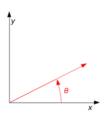
- A counterclockwise rotation of a vector through angle θ. The vector is initially aligned with the x-axis. 向量逆时针旋转角度 θ。 该向量初始方向与 x 轴对齐。
Examples 例子
例如，当向量
$$ {\displaystyle \mathbf {\hat {x}} ={\begin{bmatrix}1\0\\end{bmatrix}}} $$
旋转了一个角度$$θ$$，它的新坐标是
$$ {\displaystyle {\begin{bmatrix}\cos \theta \\sin \theta \\end{bmatrix}},} $$
并且当向量
$$ {\displaystyle \mathbf {\hat {y}} ={\begin{bmatrix}0\1\\end{bmatrix}}} $$
旋转角度 $$θ$$，其新坐标为
$$ {\displaystyle {\begin{bmatrix}-\sin \theta \\cos \theta \\end{bmatrix}}.} $$
Direction 方向
如果 $$θ$$ 为正（例如 90°），则矢量旋转方向为逆时针方向，如果 $$θ$$ 为负（例如 -90°），则矢量旋转方向为顺时针。 因此，顺时针旋转矩阵为
$$ {\displaystyle R(-\theta )={\begin{bmatrix}\cos \theta &\sin \theta \-\sin \theta &\cos \theta \\end{bmatrix}}.} $$
The two-dimensional case is the only non-trivial (i.e. not one-dimensional) case where the rotation matrices group is commutative, so that it does not matter in which order multiple rotations are performed. An alternative convention uses rotating axes,[1] and the above matrices also represent a rotation of the axes clockwise through an angle $$θ$$.
二维旋转矩阵组是唯一非平凡的（即非一维）可交换情况，因此执行多次旋转的顺序无关紧要。 另一种约定使用旋转轴，[1] 并且上述矩阵也表示轴顺时针旋转角度 $$θ$$。
坐标系的非标准方向
如果使用标准右手笛卡尔坐标系，$$x$$ 轴向右，$$y$$ 轴向上，则旋转 $$R(θ)$$ 为逆时针方向。 如果使用左手笛卡尔坐标系，$$x$$ 指向右侧，$$y$$ 指向下方，则 $$R(θ)$$ 为顺时针方向。 这种非标准方向在数学中很少使用，但在 2D 计算机图形学中很常见，其原点通常位于左上角，$$y$$ 轴在屏幕或页面下方。[2]
有关可能改变旋转矩阵产生的旋转方向的其他替代约定，请参见下文。
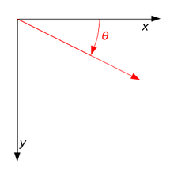
A rotation through angle θ with non-standard axes. 非标准轴中角度 θ 的旋转
常见的旋转矩阵
特别有用的矩阵是
$$ {\displaystyle {\begin{bmatrix}0&-1\[3pt]1&0\\end{bmatrix}},\quad {\begin{bmatrix}-1&0\[3pt]0&-1\\end{bmatrix}},\quad {\begin{bmatrix}0&1\[3pt]-1&0\\end{bmatrix}}} $$
用于逆时针旋转 90°、180° 和 270°。
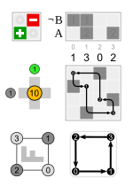
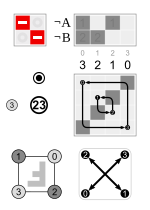
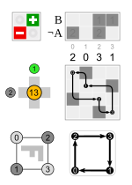
A 180° rotation (middle) followed by a positive 90° rotation (left) is equivalent to a single negative 90° (positive 270°) rotation (right). Each of these figures depicts the result of a rotation relative to an upright starting position (bottom left) and includes the matrix representation of the permutation applied by the rotation (center right), as well as other related diagrams. See "Permutation notation" on Wikiversity for details. 180° 旋转（中）后跟 90° 正旋转（左）等效于单个负 90°（正 270°）旋转（右）。 这些图中的每一个都描绘了相对于直立起始位置（左下）的旋转结果，并包括由旋转（右中）应用的排列的矩阵表示，以及其他相关图表。 有关详细信息，请参阅 Wikiversity 上的“排列符号”。
Relationship with complex plane 与复平面的关系
由于
$$ {\displaystyle {\begin{bmatrix}0&1\-1&0\end{bmatrix}}^{2}\ =\ {\begin{bmatrix}-1&0\0&-1\end{bmatrix}}\ =-I,} $$
以下形状的矩阵
$$ {\displaystyle {\begin{bmatrix}x&y\-y&x\end{bmatrix}}} $$
form a ring isomorphic to the field of the complex numbers $${\displaystyle \mathbb {C} } $$. Under this isomorphism, the rotation matrices correspond to circle of the unit complex numbers, the complex numbers of modulus 1.
形成一个与复数域 $${\displaystyle \mathbb {C} } $$ 同构的环。 在这种同构下，旋转矩阵对应于单位复数的圆，即模1的复数。
If one identify $${\displaystyle \mathbb {R} ^{2}}$$ with $${\displaystyle \mathbb {C} }$$ through the linear isomorphism $${\displaystyle (a,b)\mapsto a+ib,}$$ the action of a matrix of the above form on vectors of $${\displaystyle \mathbb {R} ^{2}}$$ corresponds to the multiplication by the complex number $$x + iy$$, and rotations correspond to multiplication by complex numbers of modulus 1.
如果通过线性同构 $${\displaystyle (a,b)\mapsto a+ib,}$$ 将 $${\displaystyle \mathbb {R} ^{2}}$$ 识别为 $${\displaystyle \mathbb {C} }$$，} $$ 上述形式的矩阵对 {\displaystyle \mathbb {R} ^{2}}$$ 内的向量的作用相当于乘以复数 $$x + iy$$，旋转相当于乘以模为1的复数。
[warning]
这一段不懂
As every rotation matrix can be written
因为每个旋转矩阵都可以写成
$$ {\displaystyle {\begin{pmatrix}\cos t&\sin t\-\sin t&\cos t\end{pmatrix}},} $$
the above correspondence associates such a matrix with the complex number
上述对应关系将矩阵与这样的复数相关联
$$ \cos t + i \sin t = e^{it} $$
(this last equality is Euler's formula).
（最后一个等式是欧拉公式）。
三维
See also: Rotation formalisms in three dimensions
另请参阅：三个维度的旋转形式
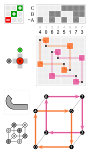
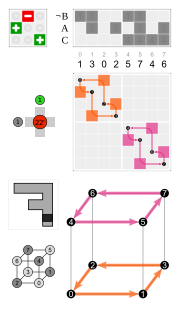
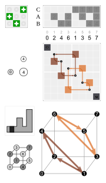
A positive 90° rotation around the y-axis (left) after one around the z-axis (middle) gives a 120° rotation around the main diagonal (right). In the top left corner are the rotation matrices, in the bottom right corner are the corresponding permutations of the cube with the origin in its center. 绕 y 轴（左）旋转 90° 后绕 z 轴（中）旋转 90°，得到的是绕主对角线（右）旋转 120°的效果。左上角是旋转矩阵，右下角是立方体以原点为中心的对应排列。
Basic rotations 基本旋转
A basic rotation (also called elemental rotation) is a rotation about one of the axes of a coordinate system. The following three basic rotation matrices rotate vectors by an angle θ about the x-, y-, or z-axis, in three dimensions, using the right-hand rule—which codifies their alternating signs. (The same matrices can also represent a clockwise rotation of the axes.[nb 1])
基本旋转（也称为元素旋转）是围绕其中一个坐标轴的旋转。 以下三个基本旋转矩阵使用右手定则将向量围绕 x-、y- 或 z-轴在三个维度上旋转角度 θ，该右手定则编码了它们的交替符号。 （相同的矩阵也可以表示轴的顺时针旋转。[nb 1]）
$$ {\displaystyle {\begin{alignedat}{1}R_{x}(\theta )&={\begin{bmatrix}1&0&0\0&\cos \theta &-\sin \theta \[3pt]0&\sin \theta &\cos \theta \[3pt]\end{bmatrix}}\[6pt]R_{y}(\theta )&={\begin{bmatrix}\cos \theta &0&\sin \theta \[3pt]0&1&0\[3pt]-\sin \theta &0&\cos \theta \\end{bmatrix}}\[6pt]R_{z}(\theta )&={\begin{bmatrix}\cos \theta &-\sin \theta &0\[3pt]\sin \theta &\cos \theta &0\[3pt]0&0&1\\end{bmatrix}}\end{alignedat}}} $$
For column vectors, each of these basic vector rotations appears counterclockwise when the axis about which they occur points toward the observer, the coordinate system is right-handed, and the angle θ is positive. Rz, for instance, would rotate toward the y-axis a vector aligned with the x-axis, as can easily be checked by operating with $$Rz$$ on the vector (1,0,0):
一个列向量，当它们的旋转轴指向观察者角度θ是正的时，这些基本向量旋转使向量出现逆时针方向，使用右手坐标系。 例如，Rz 将与 x 轴对齐的向量向 y 轴旋转，这可以通过在向量 (1,0,0) 上使用 Rz 来检查：
$$ {\displaystyle R_{z}(90^{\circ }){\begin{bmatrix}1\0\0\\end{bmatrix}}={\begin{bmatrix}\cos 90^{\circ }&-\sin 90^{\circ }&0\\sin 90^{\circ }&\quad \cos 90^{\circ }&0\0&0&1\\end{bmatrix}}{\begin{bmatrix}1\0\0\\end{bmatrix}}={\begin{bmatrix}0&-1&0\1&0&0\0&0&1\\end{bmatrix}}{\begin{bmatrix}1\0\0\\end{bmatrix}}={\begin{bmatrix}0\1\0\\end{bmatrix}}} $$
这类似于上述二维旋转矩阵产生的旋转。 请参阅下面的替代约定，这些约定可能明显或实际上颠倒了这些矩阵产生的旋转意义。
General rotations 一般旋转
可以使用矩阵乘法从这三个矩阵得到其他旋转矩阵。 例如，乘积
$$ {\displaystyle {\begin{aligned}R=R_{z}(\alpha ),R_{y}(\beta ),R_{x}(\gamma )&={\overset {\text{yaw}}{\begin{bmatrix}\cos \alpha &-\sin \alpha &0\\sin \alpha &\cos \alpha &0\0&0&1\\end{bmatrix}}}{\overset {\text{pitch}}{\begin{bmatrix}\cos \beta &0&\sin \beta \0&1&0\-\sin \beta &0&\cos \beta \\end{bmatrix}}}{\overset {\text{roll}}{\begin{bmatrix}1&0&0\0&\cos \gamma &-\sin \gamma \0&\sin \gamma &\cos \gamma \\end{bmatrix}}}\&={\begin{bmatrix}\cos \alpha \cos \beta &\cos \alpha \sin \beta \sin \gamma -\sin \alpha \cos \gamma &\cos \alpha \sin \beta \cos \gamma +\sin \alpha \sin \gamma \\sin \alpha \cos \beta &\sin \alpha \sin \beta \sin \gamma +\cos \alpha \cos \gamma &\sin \alpha \sin \beta \cos \gamma -\cos \alpha \sin \gamma \-\sin \beta &\cos \beta \sin \gamma &\cos \beta \cos \gamma \\end{bmatrix}}\end{aligned}}} $$
表示这样一个旋转，其偏航角、俯仰角和滚动角分别为 α、β 和 γ。 更正式地说，它是一种内在旋转，其 Tait-Bryan 角分别为 α、β、γ，分别围绕轴 z、y、x。 同样，乘积
$$ {\displaystyle {\begin{aligned}\R=R_{z}(\gamma ),R_{y}(\beta ),R_{x}(\alpha )&={\begin{bmatrix}\cos \gamma &-\sin \gamma &0\\sin \gamma &\cos \gamma &0\0&0&1\\end{bmatrix}}{\begin{bmatrix}\cos \beta &0&\sin \beta \0&1&0\-\sin \beta &0&\cos \beta \\end{bmatrix}}{\begin{bmatrix}1&0&0\0&\cos \alpha &-\sin \alpha \0&\sin \alpha &\cos \alpha \\end{bmatrix}}\&={\begin{bmatrix}\cos \beta \cos \gamma &\sin \alpha \sin \beta \cos \gamma -\cos \alpha \sin \gamma &\cos \alpha \sin \beta \cos \gamma +\sin \alpha \sin \gamma \\cos \beta \sin \gamma &\sin \alpha \sin \beta \sin \gamma +\cos \alpha \cos \gamma &\cos \alpha \sin \beta \sin \gamma -\sin \alpha \cos \gamma \-\sin \beta &\sin \alpha \cos \beta &\cos \alpha \cos \beta \\end{bmatrix}}\end{aligned}}} $$
represents an extrinsic rotation whose (improper) Euler angles are α, β, γ, about axes x, y, z.
表示这样一个外部旋转，其（非Proper）欧拉角是 α、β、γ，围绕轴 x、y、z。
[warning]
为什么内旋是右乘，外旋是左乘？
这些矩阵仅在它们用于被列向量左乘时才会产生所需的效果，并且（因为通常矩阵乘法不是可交换的）仅当它们以指定的顺序应用时才会产生所需的效果（有关详细信息，请参阅歧义）。 旋转操作的顺序是从右到左； 与列向量相邻的矩阵首先被应用，然后是左边的矩阵。 [3]
[success]
内旋从左到右，外旋从右到左
从旋转矩阵到轴角的转换
在3D的每个维度上的旋转都由它的轴（沿该轴的向量不会因旋转而改变）和它的角度 - 围绕该轴的旋转量（欧拉旋转定理）定义。
有几种方法可以从旋转矩阵计算轴和角度（另请参见轴-角度表示）。 这里，我们只描述基于计算旋转矩阵的特征向量和特征值的方法。 也可以使用旋转矩阵的trace。
Determining the axis 确定轴
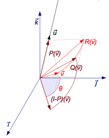
A rotation R around axis u can be decomposed using 3 endomorphisms P, (I − P), and Q (click to enlarge). 可以使用 3 个自同态 P、(I-P) 和 Q 来分解围绕轴 u 的旋转 R（点击放大）。
[warning]
自同态：？
给定一个 3 × 3 的旋转矩阵 $$R$$，平行于旋转轴的向量 u 必须满足
$$ {\displaystyle R\mathbf {u} =\mathbf {u} ,} $$
[success]
沿旋转轴的向量不会因旋转而改变
[success]
方法一：R的λ = 1对应的特征向量
因为 u 围绕旋转轴的旋转仍然是 u。 上面的等式可以求解u，除非$$R = I$$，否则它在标量因子上是唯一的。
[success]
当标量因子确定时，u有唯一解。$${\displaystyle R\mathbf {u} =\displaystyle λ\mathbf {u} ,}$$ 特征值λ即标量因子，此处λ=1，此处隐含u是单位向量，因此u是唯一的。
此外，方程可以重写
$$ {\displaystyle R\mathbf {u} =I\mathbf {u} \implies \left(R-I\right)\mathbf {u} =0,} $$
这表明 u 位于 $$R - I$$ 的零空间中。
[success]
零空间：见《线性代数》定义null space
Viewed in another way, u is an eigenvector of $$R$$ corresponding to the eigenvalue $$λ = 1$$. Every rotation matrix must have this eigenvalue, the other two eigenvalues being complex conjugates of each other. It follows that a general rotation matrix in three dimensions has, up to a multiplicative constant, only one real eigenvector.
[warning]
up to a multiplicative constant:这句怎么理解？
换个角度看，u 是 $$R$$ 的特征向量，对应于特征值 $$λ = 1$$。 每个旋转矩阵都必须有这个特征值，其他两个特征值是彼此的复共轭。 由此可见，一个三维的一般旋转矩阵在乘法常数之前只有一个实特征向量。
[warning]
复共轭：？
在乘法常数之前：？
One way to determine the rotation axis is by showing that:
[success]
方法二：套用显式的公式
确定旋转轴的一种方法是显示：
$$ {\displaystyle {\begin{aligned}0&=R^{\mathsf {T}}0+0\&=R^{\mathsf {T}}\left(R-I\right)\mathbf {u} +\left(R-I\right)\mathbf {u} \&=\left(R^{\mathsf {T}}R-R^{\mathsf {T}}+R-I\right)\mathbf {u} \&=\left(I-R^{\mathsf {T}}+R-I\right)\mathbf {u} \&=\left(R-R^{\mathsf {T}}\right)\mathbf {u} \end{aligned}}} $$
Since $$(R − RT)$$ is a skew-symmetric matrix, we can choose u such that
由于 $$(R − RT)$$ 是一个斜对称矩阵，我们可以选择 u 使得
$$ {\displaystyle [\mathbf {u} ]_{\times }=\left(R-R^{\mathsf {T}}\right).} $$
The matrix–vector product becomes a cross product of a vector with itself, ensuring that the result is zero:
矩阵-向量积成为向量与其自身的叉积，确保结果为零：
$$ {\displaystyle \left(R-R^{\mathsf {T}}\right)\mathbf {u} =[\mathbf {u} ]_{\times }\mathbf {u} =\mathbf {u} \times \mathbf {u} =0,} $$
Therefore, if 因此，如果
$$ {\displaystyle R={\begin{bmatrix}a&b&c\d&e&f\g&h&i\\end{bmatrix}},} $$

then 然后
$$ {\displaystyle \mathbf {u} ={\begin{bmatrix}h-f\c-g\d-b\\end{bmatrix}}.} $$
[warning] $$ {\displaystyle \mathbf {u} ={\begin{bmatrix}h-f\c-g\d-b\\end{bmatrix}}} $$：？
[warning]
怎么根据$[u]_×$得到u？见3.6
The magnitude of u computed this way is ||u|| = 2 sin $$θ$$, where $$θ$$ is the angle of rotation.
以这种方式计算的 u 的大小是 ||u|| = 2 sin $$θ$$，其中 $$θ$$ 是旋转角度。
This does not work if $$R$$ is symmetric. Above, if $$R − RT$$ is zero, then all subsequent steps are invalid. In this case, it is necessary to diagonalize $$R$$ and find the eigenvector corresponding to an eigenvalue of 1.
如果 R 是对称的，这不起作用。 上面，如果 R - RT 为零，则所有后续步骤均无效。 在这种情况下，只能对 R 进行对角化并找到与特征值 1 对应的特征向量。
[success]
对于对称矩阵，方法二不适用，只能用方法一
Determining the angle 确定角度
要找到旋转的角度，一旦知道旋转的轴，选择一个垂直于轴的向量v。 那么旋转的角度就是v和Rv之间的角度。
然而，更直接的方法是计算trace：旋转矩阵的对角线元素之和。 应注意为角度 θ 选择正确的符号以匹配所选轴：
$$ {\displaystyle \operatorname {tr} (R)=1+2\cos \theta ,} $$
由此得出角度的绝对值为
$$ {\displaystyle |\theta |=\arccos \left({\frac {\operatorname {tr} (R)-1}{2}}\right).} $$
[success]
要确定θ的符号

Rotation matrix from axis and angle 从轴和角度计算旋转矩阵
The matrix of a proper rotation $$R$$ by angle $$θ$$ around the axis u = $$(ux, uy, uz)$$, a unit vector with $$u2x + u2y + u2z = 1$$,is given by:[4]
围绕轴 u = (ux, uy, uz) 旋转角度 θ 的旋转矩阵 R ，其中u是满足u2x + u2y + u2z = 1 的单位向量由下式给出 :[4]
$$ {\displaystyle R={\begin{bmatrix}\cos \theta +u_{x}^{2}\left(1-\cos \theta \right)&u_{x}u_{y}\left(1-\cos \theta \right)-u_{z}\sin \theta &u_{x}u_{z}\left(1-\cos \theta \right)+u_{y}\sin \theta \u_{y}u_{x}\left(1-\cos \theta \right)+u_{z}\sin \theta &\cos \theta +u_{y}^{2}\left(1-\cos \theta \right)&u_{y}u_{z}\left(1-\cos \theta \right)-u_{x}\sin \theta \u_{z}u_{x}\left(1-\cos \theta \right)-u_{y}\sin \theta &u_{z}u_{y}\left(1-\cos \theta \right)+u_{x}\sin \theta &\cos \theta +u_{z}^{2}\left(1-\cos \theta \right)\end{bmatrix}}.} $$
A derivation of this matrix from first principles can be found in section 9.2 here.[5] The basic idea to derive this matrix is dividing the problem into few known simple steps.
可以在此处的第 9.2 节中找到从第一原理推导该矩阵。 [5] 推导该矩阵的基本思想是将问题划分为几个已知的简单步骤。
-
First rotate the given axis and the point such that the axis lies in one of the coordinate planes ($$xy, yz$$ or $$zx$$) 首先旋转给定轴和点，使轴位于坐标平面之一（$$xy、yz$$ 或 $$zx$$）
-
Then rotate the given axis and the point such that the axis is aligned with one of the two coordinate axes for that particular coordinate plane ($$x, y$$ or $$z$$)然后旋转给定轴和点，使轴与该特定坐标平面（$$x、y$$ 或 $$z$$）的两个坐标轴之一对齐
-
Use one of the fundamental rotation matrices to rotate the point depending on the coordinate axis with which the rotation axis is aligned.使用基本旋转矩阵之一根据与旋转轴对齐的坐标轴旋转点。
-
Reverse rotate the axis-point pair such that it attains the final configuration as that was in step 2 (Undoing step 2)反向旋转轴点对，使其达到步骤 2 中的最终配置（撤消步骤 2）
-
Reverse rotate the axis-point pair which was done in step 1 (undoing step 1)反向旋转在步骤 1 中完成的轴点对（撤消步骤 1）
This can be written more concisely as
这可以更简洁地写成
$$ {\displaystyle R=(\cos \theta ),I+(\sin \theta ),[\mathbf {u} ]_{\times }+(1-\cos \theta ),(\mathbf {u} \otimes \mathbf {u} ),} $$
where [u]× is the cross product matrix of u; the expression u ⊗ u is the outer product, and $$I$$ is the identity matrix. Alternatively, the matrix entries are:
其中[u]×是u的叉积矩阵； 表达式 u ⊗ u 是外积，$$I$$ 是单位矩阵。 或者，矩阵条目是：
[warning]
叉积矩阵：？
$$ {\displaystyle R_{jk}={\begin{cases}\cos ^{2}{\frac {\theta }{2}}+\sin ^{2}{\frac {\theta }{2}}\left(2u_{j}^{2}-1\right),\quad &{\text{if }}j=k\2u_{j}u_{k}\sin ^{2}{\frac {\theta }{2}}-\varepsilon {jkl}u{l}\sin \theta ,\quad &{\text{if }}j\neq k\end{cases}}} $$
where εjkl is the Levi-Civita symbol with ε123 = 1. This is a matrix form of Rodrigues' rotation formula, (or the equivalent, differently parametrized Euler–Rodrigues formula) with[nb 2]
其中 $ε_{jkl}$ 是 Levi-Civita 符号，$ε_{123} = 1$。 这是 Rodrigues 旋转公式的矩阵形式，（或等效的、不同参数化的 Euler-Rodrigues 公式）与 [nb 2]
$$ {\displaystyle \mathbf {u} \otimes \mathbf {u} =\mathbf {u} \mathbf {u} ^{\mathsf {T}}={\begin{bmatrix}u_{x}^{2}&u_{x}u_{y}&u_{x}u_{z}\[3pt]u_{x}u_{y}&u_{y}^{2}&u_{y}u_{z}\[3pt]u_{x}u_{z}&u_{y}u_{z}&u_{z}^{2}\end{bmatrix}},\qquad [\mathbf {u} ]{\times }={\begin{bmatrix}0&-u{z}&u_{y}\[3pt]u_{z}&0&-u_{x}\[3pt]-u_{y}&u_{x}&0\end{bmatrix}}.} $$
In $$\mathbb {R} ^{3}$$ the rotation of a vector x around the axis u by an angle $$θ$$ can be written as:
在 $$\mathbb {R} ^{3}$$ 中，向量 x 绕轴 u 旋转角度 $$θ$$ 可以写成：
$$ {\displaystyle R_{\mathbf {u} }(\theta )\mathbf {x} =\mathbf {u} (\mathbf {u} \cdot \mathbf {x} )+\cos \left(\theta \right)(\mathbf {u} \times \mathbf {x} )\times \mathbf {u} +\sin \left(\theta \right)(\mathbf {u} \times \mathbf {x} )} $$
If the 3D space is right-handed and $$θ > 0$$, this rotation will be counterclockwise when u points towards the observer (Right-hand rule). Explicitly, with $${\displaystyle ({\boldsymbol {\alpha }},{\boldsymbol {\beta }},\mathbf {u} )}$$ a right-handed orthonormal basis,
如果 3D 空间是右手的并且 $$θ > 0$$，当 u 指向观察者时，这个旋转将是逆时针的（右手法则）。 明确地，$${\displaystyle ({\boldsymbol {\alpha }},{\boldsymbol {\beta }},\mathbf {u} )}$$ 是右手正交基，
$$ {\displaystyle R_{\mathbf {u} }(\theta ){\boldsymbol {\alpha }}=\cos \left(\theta \right){\boldsymbol {\alpha }}+\sin \left(\theta \right){\boldsymbol {\beta }},\quad R_{\mathbf {u} }(\theta ){\boldsymbol {\beta }}=-\sin \left(\theta \right){\boldsymbol {\alpha }}+\cos \left(\theta \right){\boldsymbol {\beta }},\quad R_{\mathbf {u} }(\theta )\mathbf {u} =\mathbf {u} .} $$
Note the striking merely apparent differences to the equivalent Lie-algebraic formulation below.
请注意以下等效李代数公式的仅仅是看上去明显的差异。
Properties 特性
对于任何作用于 $${\displaystyle \mathbb {R} ^{n},}$$ 的 n 维旋转矩阵 $$R$$
$$ {\displaystyle R^{\mathsf {T}}=R^{-1}} $$ (The rotation is an orthogonal matrix旋转是一个正交矩阵）)
It follows that: 它遵循：
$$ \det R=\pm 1 $$
A rotation is termed proper if det R = 1, and improper (or a roto-reflection) if det R = –1. For even dimensions $$n = 2k$$, the $$n$$ eigenvalues $$λ$$ of a proper rotation occur as pairs of complex conjugates which are roots of unity:$$ λ = e±iθj$$ for $$j = 1, ..., k$$, which is real only for $$λ = ±1$$. Therefore, there may be no vectors fixed by the rotation ($$λ = 1$$), and thus no axis of rotation. Any fixed eigenvectors occur in pairs, and the axis of rotation is an even-dimensional subspace.
如果 det R = 1，则称为proper旋转，如果 det R = –1，则称为improper旋转（或旋转反射）。 对于偶数维 n = 2k，proper旋转的 n 特征值 λ 作为复共轭对出现，它们是单位根： λ = e±iθj for j = 1, ..., k，仅当 λ = ±1 时为实数。 因此，可能没有固定的旋转向量（λ = 1），也没有旋转轴。 任何固定的特征向量都是成对出现的，旋转轴是一个偶数维子空间。
For odd dimensions $$n = 2k + 1$$, a proper rotation R will have an odd number of eigenvalues, with at least one $$λ = 1$$ and the axis of rotation will be an odd dimensional subspace. Proof:
对于奇数维度 n = 2k + 1，proper旋转 R 将具有奇数个特征值，至少有一个 $$λ = 1$$，并且旋转轴将是奇数维子空间。 证明：
$$ {\displaystyle {\begin{aligned}\det \left(R-I\right)&=\det \left(R^{\mathsf {T}}\right)\det \left(R-I\right)=\det \left(R^{\mathsf {T}}R-R^{\mathsf {T}}\right)=\det \left(I-R^{\mathsf {T}}\right)\&=\det(I-R)=\left(-1\right)^{n}\det \left(R-I\right)=-\det \left(R-I\right).\end{aligned}}} $$
Here I is the identity matrix, and we use det(RT) = det(R) = 1, as well as (−1)n = −1 since $$n$$ is odd. Therefore, det(R – I) = 0, meaning there is a null vector v with (R – I)v = 0, that is Rv = v, a fixed eigenvector. There may also be pairs of fixed eigenvectors in the even-dimensional subspace orthogonal to v, so the total dimension of fixed eigenvectors is odd.
这里I 是单位矩阵，我们使用det(RT) = det(R) = 1，以及$$(-1)^n = -1$$，因为$$n$$ 是奇数。 因此，det(R – I) = 0，意味着存在一个 (R – I)v = 0 的空向量v，即 Rv = v，一个固定的特征向量。 在与 v 正交的偶数维子空间中也可能存在固定特征向量对，因此固定特征向量的总维数是奇数。
For example, in 2-space n = 2, a rotation by angle θ has eigenvalues $$λ = eiθ$$ and $$λ = e−iθ$$, so there is no axis of rotation except when θ = 0, the case of the null rotation. In 3-space n = 3, the axis of a non-null proper rotation is always a unique line, and a rotation around this axis by angle θ has eigenvalues λ = 1, eiθ, e−iθ. In 4-space n = 4, the four eigenvalues are of the form $$e±iθ, e±iφ$$. The null rotation has $$θ = φ = 0$$. The case of $$θ = 0$$, $$φ ≠ 0$$ is called a simple rotation, with two unit eigenvalues forming an axis plane, and a two-dimensional rotation orthogonal to the axis plane. Otherwise, there is no axis plane. The case of $$θ = φ$$ is called an isoclinic rotation, having eigenvalues $$e±iθ$$ repeated twice, so every vector is rotated through an angle $$θ$$.
例如，在 2维 空间 n = 2 中，角度 $$θ$$ 的旋转具有特征值 $$λ = eiθ$$ 和 $$λ = e−iθ$$，因此除了 θ = 0 时以外没有旋转轴， θ = 0为零旋转。 在 3 空间 n = 3 中，非零proper旋转的轴始终是一条唯一的线，并且围绕该轴旋转角度 θ 具有特征值 λ = 1，eiθ，e−iθ。 在 4 空间 n = 4 中，四个特征值的形式为 $$e±iθ，e±iφ$$。 零旋转有 $$θ = φ = 0$$。 $$θ=0$$,$$φ≠0$$的情况称为简单旋转，两个单位特征值形成轴平面，与轴平面正交的二维旋转。 否则，没有轴平面。 $$θ = φ$$ 的情况称为等斜旋转，特征值 $$e±iθ$$ 重复两次，因此每个向量都旋转角度 $$θ$$。
The trace of a rotation matrix is equal to the sum of its eigenvalues. For n = 2, a rotation by angle θ has trace 2 cos θ. For n = 3, a rotation around any axis by angle $$θ$$ has trace 1 + 2 cos θ. For $$n$$ = 4, and the trace is 2(cos θ + cos φ), which becomes 4 cos $$θ$$ for an isoclinic rotation.
旋转矩阵的迹等于其特征值之和。 对于 n = 2，角度 θ 的旋转矩阵的迹为 2 cos θ。 对于 n = 3，绕任意轴旋转角度 θ 的轨迹为 1 + 2 cos θ。 对于 n = 4，迹线为 2(cos θ + cos φ)，对于等斜旋转变为 4 cos θ。
Examples 例子
- 2 × 2 旋转矩阵
$$ Q={\begin{bmatrix}0&1\-1&0\end{bmatrix}} $$
corresponds to a 90° planar rotation clockwise about the origin.
对应于绕原点顺时针旋转 90° 平面。
- The transpose of the 2 × 2 matrix
2 × 2 矩阵 $$ M={\begin{bmatrix}0.936&0.352\0.352&-0.936\end{bmatrix}} $$
is its inverse, but since its determinant is −1, this is not a proper rotation matrix; it is a reflection across the line 11y = 2x.
的转置是它的逆矩阵，但是因为它的行列式是-1，所以这不是一个proper旋转矩阵； 它是对 11y = 2x 的反射。
[warning]
它是对 11y = 2x 的反射：reflection across the line怎么理解？
- The 3 × 3 rotation matrix
3 × 3 旋转矩阵
$$ {\displaystyle Q={\begin{bmatrix}1&0&0\0&{\frac {\sqrt {3}}{2}}&{\frac {1}{2}}\0&-{\frac {1}{2}}&{\frac {\sqrt {3}}{2}}\end{bmatrix}}={\begin{bmatrix}1&0&0\0&\cos 30^{\circ }&\sin 30^{\circ }\0&-\sin 30^{\circ }&\cos 30^{\circ }\\end{bmatrix}}} $$
corresponds to a −30° rotation around the x-axis in three-dimensional space.
对应于在三维空间中围绕 x 轴旋转 -30°。
- The 3 × 3 rotation matrix
3 × 3 旋转矩阵
$$ Q={\begin{bmatrix}0.36&0.48&-0.8\-0.8&0.60&0\0.48&0.64&0.60\end{bmatrix}} $$
corresponds to a rotation of approximately −74° around the axis (− 1 / 2 ,1,1) in three-dimensional space.
对应于在三维空间中围绕轴(-1/2,1,1)旋转大约 -74°。
- 3 × 3 置换矩阵
$$ P={\begin{bmatrix}0&0&1\1&0&0\0&1&0\end{bmatrix}} $$
是一个旋转矩阵，与任何偶数排列的矩阵一样，它围绕轴 $$x = y = z$$ 旋转 120°。
- The 3 × 3 matrix
3 × 3 矩阵
$$ M={\begin{bmatrix}3&-4&1\5&3&-7\-9&2&6\end{bmatrix}} $$
的行列式为+1，但不是正交的（它的转置不是它的逆），所以它不是一个旋转矩阵。
- The 4 × 3 matrix
4 × 3 矩阵
$$ M={\begin{bmatrix}0.5&-0.1&0.7\0.1&0.5&-0.5\-0.7&0.5&0.5\-0.5&-0.7&-0.1\end{bmatrix}} $$
is not square, and so cannot be a rotation matrix; yet MTM yields a 3 × 3 identity matrix (the columns are orthonormal).
不是正方形的，因此不是旋转矩阵； 然而 $M^TM$ 是一个 3 × 3 单位矩阵（列是正交的）。
- The 4 × 4 matrix
4 × 4 矩阵 $$ {\displaystyle Q=-I={\begin{bmatrix}-1&0&0&0\0&-1&0&0\0&0&-1&0\0&0&0&-1\end{bmatrix}}} $$
describes an isoclinic rotation in four dimensions, a rotation through equal angles (180°) through two orthogonal planes.
描述了四维中的等斜旋转，两个正交平面通过相等角度（180°）的旋转。
- 5 × 5 旋转矩阵
$$ Q={\begin{bmatrix}0&-1&0&0&0\1&0&0&0&0\0&0&-1&0&0\0&0&0&-1&0\0&0&0&0&1\end{bmatrix}} $$
rotates vectors in the plane of the first two coordinate axes 90°, rotates vectors in the plane of the next two axes 180°, and leaves the last coordinate axis unmoved.
将前两个坐标轴平面中的矢量旋转 90°，将后两个坐标轴平面中的矢量旋转 180°，最后一个坐标轴保持不动。
[success]
矢量：矢量和向量是一个意思
Geometry 几何学
在欧几里得几何中，旋转是等距的一个例子，一种在不改变点之间距离的情况下移动点的变换。 旋转与其他等距的区别在于两个附加属性：它们使（至少）一个点保持不变，并且它们使“手性”保持不变。 相反，平移会移动每个点，反射会交换左手和右手顺序，滑翔反射会同时进行，proper旋转将手性变化与正常旋转结合在一起。
If a fixed point is taken as the origin of a Cartesian coordinate system, then every point can be given coordinates as a displacement from the origin. Thus one may work with the vector space of displacements instead of the points themselves. Now suppose $$(p1, ..., pn)$$ are the coordinates of the vector p from the origin $$O$$ to point $$P$$. Choose an orthonormal basis for our coordinates; then the squared distance to $$P$$, by Pythagoras, is
如果将一个固定点作为笛卡尔坐标系的原点，则可以给每个点坐标定义为距原点的位移。 因此，可以使用位移向量空间而不是点本身。 现在假设 $$(p1, ..., pn)$$ 是向量 p 从原点 $$O$$ 到点 $$P$$ 的坐标。 为我们的坐标选择标准正交基； 那么到$$P$$的毕达哥拉斯平方距离是
[success]
可以使用位移向量空间而不是点本身：点本身：以（0,0）为原点O，点坐标距离（0,0）的位移
位移向量空间：以任意一个固定点作为原点O，点坐标距离这个固定点的位移。
$$ {\displaystyle d^{2}(O,P)=|\mathbf {p} |^{2}=\sum {r=1}^{n}p{r}^{2}} $$
which can be computed using the matrix multiplication
可以使用矩阵乘法计算
$$ {\displaystyle |\mathbf {p} |^{2}={\begin{bmatrix}p_{1}\cdots p_{n}\end{bmatrix}}{\begin{bmatrix}p_{1}\\vdots \p_{n}\end{bmatrix}}=\mathbf {p} ^{\mathsf {T}}\mathbf {p} .} $$
A geometric rotation transforms lines to lines, and preserves ratios of distances between points. From these properties it can be shown that a rotation is a linear transformation of the vectors, and thus can be written in matrix form, $$Qp$$. The fact that a rotation preserves, not just ratios, but distances themselves, is stated as
几何旋转是线之间的转换 ，并保持点之间的距离比率。 从这些性质可以看出，旋转是向量的线性变换，因此可以写成矩阵形式，$$Qp$$。 旋转不仅保留了比率，而且保留了距离本身，这一事实被表述为
$$ {\displaystyle \mathbf {p} ^{\mathsf {T}}\mathbf {p} =(Q\mathbf {p} )^{\mathsf {T}}(Q\mathbf {p} ),} $$
[success]
P：旋转前点P在位移向量空间的坐标
Qp：旋转后点P在位移向量空间的坐标 注意区分点P和坐标P
$$ {\displaystyle \mathbf {p} ^{\mathsf {T}}\mathbf {p}} $$
旋转前OP的距离
$${(Q\mathbf {p} )^{\mathsf {T}}(Q\mathbf {p} )}$$ 旋转后OP的距离
[success]
公式想说明的是：以O为原点的旋转，旋转前后OP距离不变
or 或
$$ {\displaystyle {\begin{aligned}\mathbf {p} ^{\mathsf {T}}I\mathbf {p} &{}=\left(\mathbf {p} ^{\mathsf {T}}Q^{\mathsf {T}}\right)(Q\mathbf {p} )\&{}=\mathbf {p} ^{\mathsf {T}}\left(Q^{\mathsf {T}}Q\right)\mathbf {p} .\end{aligned}}} $$
因为这个等式适用于所有向量p，所以可以得出结论，每个旋转矩阵 Q 都满足正交性条件，
$$ {\displaystyle Q^{\mathsf {T}}Q=I.} $$
旋转保留了手性，因为它们不能改变轴的顺序，这意味着特殊的矩阵条件，
$$ {\displaystyle \det Q=+1.} $$
[success]
改变轴的顺序可能得到$${\displaystyle \det Q=-1.}$$
同样重要的是，可以证明满足这两个条件的任何矩阵都可以作为旋转矩阵。
Multiplication 乘法
旋转矩阵的逆是它的转置，也是一个旋转矩阵：
$$ {\displaystyle {\begin{aligned}\left(Q^{\mathsf {T}}\right)^{\mathsf {T}}\left(Q^{\mathsf {T}}\right)&=QQ^{\mathsf {T}}=I\\det Q^{\mathsf {T}}&=\det Q=+1.\end{aligned}}} $$
两个旋转矩阵的乘积是一个旋转矩阵：
$$ {\displaystyle {\begin{aligned}\left(Q_{1}Q_{2}\right)^{\mathsf {T}}\left(Q_{1}Q_{2}\right)&=Q_{2}^{\mathsf {T}}\left(Q_{1}^{\mathsf {T}}Q_{1}\right)Q_{2}=I\\det \left(Q_{1}Q_{2}\right)&=\left(\det Q_{1}\right)\left(\det Q_{2}\right)=+1.\end{aligned}}} $$
对于 n > 2，n × n 旋转矩阵的乘法通常是不可交换的。
$$ {\displaystyle {\begin{aligned}Q_{1}&={\begin{bmatrix}0&-1&0\1&0&0\0&0&1\end{bmatrix}}&Q_{2}&={\begin{bmatrix}0&0&1\0&1&0\-1&0&0\end{bmatrix}}\Q_{1}Q_{2}&={\begin{bmatrix}0&-1&0\0&0&1\-1&0&0\end{bmatrix}}&Q_{2}Q_{1}&={\begin{bmatrix}0&0&1\1&0&0\0&1&0\end{bmatrix}}.\end{aligned}}} $$
Noting that any identity matrix is a rotation matrix, and that matrix multiplication is associative, we may summarize all these properties by saying that the n × n rotation matrices form a group, which for $$n$$ > 2 is non-abelian, called a special orthogonal group, and denoted by $$SO(n)$$, $$SO(n,R)$$, $$SOn$$, or $$SOn(R)$$, the group of $$n × n$$ rotation matrices is isomorphic to the group of rotations in an $$n$$-dimensional space. This means that multiplication of rotation matrices corresponds to composition of rotations, applied in left-to-right order of their corresponding matrices.
注意到任何单位矩阵都是旋转矩阵，并且矩阵乘法是关联的，我们可以总结所有这些性质，说 n × n 旋转矩阵形成一个群，对于 $$n$$ > 2 是非阿贝尔矩阵，称为 a 特殊正交群，记作 $$SO(n)$$、$$SO(n,R)$$、$$SOn$$ 或 $$SOn(R)$$，$$n × n$$ 旋转矩阵的群同构于群 在 $$n$$ 维空间中的旋转。 这意味着旋转矩阵的乘法对应于旋转的组合，以对应矩阵的从左到右的顺序应用。
Ambiguities 歧义
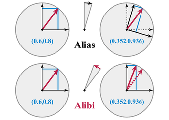
- Alias and alibi rotations Alias旋转和alibi旋转
旋转矩阵的解释可能存在许多歧义。
在大多数情况下，歧义的影响等同于旋转矩阵求逆的影响（由于旋转矩阵都是正交矩阵等价于矩阵转置）。
Alias or alibi (passive or active) transformation Alias或alibi（被动或主动）旋转
The coordinates of a point $$P$$ may change due to either a rotation of the coordinate system $$CS$$ (alias), or a rotation of the point $$P$$ (alibi). In the latter case, the rotation of $$P$$ also produces a rotation of the vector v representing $$P$$. In other words, either $$P$$ and v are fixed while $$CS$$ rotates (alias), or $$CS$$ is fixed while $$P$$ and v rotate (alibi). Any given rotation can be legitimately described both ways, as vectors and coordinate systems actually rotate with respect to each other, about the same axis but in opposite directions. Throughout this article, we chose the alibi approach to describe rotations. For instance,
点 $$P$$ 的坐标可能由于坐标系 $$CS$$（alias）的旋转或点 $$P$$（alibi）的旋转而改变。 在后一种情况下，$$P$$ 的旋转也会产生代表 $$P$$ 的向量 v 的旋转。 换句话说，$$P$$ 和 v 在 $$CS$$ 旋转（alias）时固定，或者 $$CS$$ 在 $$P$$ 和 v 旋转时固定 （alibi）。 任何给定的旋转都可以用两种方式进行合理的描述，因为矢量和坐标系实际上是相对于彼此旋转的，围绕同一轴但方向相反。 在整篇文章中，我们选择了alibi的方法来描述旋转。 例如，
$$ R(\theta )={\begin{bmatrix}\cos \theta &-\sin \theta \\sin \theta &\cos \theta \\end{bmatrix}} $$
represents a counterclockwise rotation of a vector v by an angle θ, or a rotation of $$CS$$ by the same angle but in the opposite direction (i.e. clockwise). Alibi and alias transformations are also known as active and passive transformations, respectively.
表示向量 v 逆时针旋转角度 θ，或 CS 旋转相同角度但方向相反（即顺时针）。 Alibi 和alias转换也分别称为主动和被动旋转。
Pre-multiplication or post-multiplication 左乘或右乘
The same point $$P$$ can be represented either by a column vector v or a row vector w. Rotation matrices can either pre-multiply column vectors (Rv), or post-multiply row vectors (wR). However, Rv produces a rotation in the opposite direction with respect to wR. Throughout this article, rotations produced on column vectors are described by means of a pre-multiplication. To obtain exactly the same rotation (i.e. the same final coordinates of point P), the equivalent row vector must be post-multiplied by the transpose of R (i.e. wRT).
同一点 $$P$$ 可以用列向量 v 或行向量 w 表示。 旋转矩阵可以左乘列向量 (Rv) 或右乘行向量 (wR)。 但是，Rv 产生相对于 wR 的相反方向的旋转。 在整篇文章中，列向量上产生的旋转是通过左乘法来描述的。 为了获得完全相同的旋转（即点 P 的相同最终坐标），等效行向量必须右乘以 R 的转置（即 wRT）。
[success]
为了获得完全相同的旋转（即点 P 的相同最终坐标）：即向量与坐标系的相对关系一致
[success]

Right- or left-handed coordinates 右手或左手坐标
矩阵和向量可以相对于右手或左手坐标系来表示。 在整篇文章中，除非另有说明，否则我们假定为右手方向。
[success]
右手方向：右手螺旋法则
Vectors or forms 向量或形式
[warning]
形式：forms是什么？
The vector space has a dual space of linear forms, and the matrix can act on either vectors or forms.
向量空间具有线性形式的对偶空间，矩阵可以作用于向量或形式。
[warning]
对偶空间：什么是对偶空间？
[success]

Decompositions 分解
Independent planes 独立平面
考虑 3 × 3 旋转矩阵
$$ {\displaystyle Q={\begin{bmatrix}0.36&0.48&-0.80\-0.80&0.60&0.00\0.48&0.64&0.60\end{bmatrix}}.} $$
如果 Q 作用于某个方向，v，纯粹作为一个因子 λ 的缩放，那么我们有
$$ {\displaystyle Q\mathbf {v} =\lambda \mathbf {v} ,} $$ so that 因此
$$ {\displaystyle \mathbf {0} =(\lambda I-Q)\mathbf {v} .} $$
Thus $$λ$$ is a root of the characteristic polynomial for $$Q$$,
因此 $$λ$$ 是 $$Q$$ 的特征多项式的根，
$$ {\displaystyle {\begin{aligned}0&{}=\det(\lambda I-Q)\&{}=\lambda ^{3}-{\tfrac {39}{25}}\lambda ^{2}+{\tfrac {39}{25}}\lambda -1\&{}=(\lambda -1)\left(\lambda ^{2}-{\tfrac {14}{25}}\lambda +1\right).\end{aligned}}} $$
Two features are noteworthy. First, one of the roots (or eigenvalues) is 1, which tells us that some direction is unaffected by the matrix. For rotations in three dimensions, this is the axis of the rotation (a concept that has no meaning in any other dimension). Second, the other two roots are a pair of complex conjugates, whose product is 1 (the constant term of the quadratic), and whose sum is 2 cos θ (the negated linear term). This factorization is of interest for 3 × 3 rotation matrices because the same thing occurs for all of them. (As special cases, for a null rotation the "complex conjugates" are both 1, and for a 180° rotation they are both −1.) Furthermore, a similar factorization holds for any n × n rotation matrix. If the dimension, n, is odd, there will be a "dangling" eigenvalue of 1; and for any dimension the rest of the polynomial factors into quadratic terms like the one here (with the two special cases noted). We are guaranteed that the characteristic polynomial will have degree n and thus n eigenvalues. And since a rotation matrix commutes with its transpose, it is a normal matrix, so can be diagonalized. We conclude that every rotation matrix, when expressed in a suitable coordinate system, partitions into independent rotations of two-dimensional subspaces, at most n/2 of them.
[warning]
We conclude that every rotation matrix, when expressed in a suitable coordinate system, partitions into independent rotations of two-dimensional subspaces, at most n/2 of them：？
有两个特点值得注意。首先，其中一个根（或特征值）是 1，这告诉我们某个方向不受矩阵的影响。对于三个维度的旋转，这是旋转的轴（一个在任何其他维度都没有意义的概念）。其次，另外两个根是一对复共轭，其乘积为 1（二次的常数项），其和为 2 cos θ（取反的线性项）。这种分解对于 3 × 3 旋转矩阵很有意义，因为它对所有的旋转都适用。 （作为特殊情况，对于零旋转，“复共轭”都是 1，对于 180° 旋转，它们都是 -1。）此外，类似的分解适用于任何 n × n 旋转矩阵。如果维度 n 是奇数，则将有一个“悬空”特征值 1；并且对于任何维度，其余多项式因数转换为二次项，例如此处的项（注意两种特殊情况）。我们保证特征多项式将具有 n 次，因此具有 n 个特征值。并且由于旋转矩阵与其转置对易，因此它是一个正规矩阵，因此可以对角化。我们得出结论，每个旋转矩阵，当在合适的坐标系中表示时，最多划分为二维子空间的独立旋转n/2其中。
[warning]
与其转置对易：？
正规矩阵：？
[success]
$$llambda=1$$
对应的特征向量是旋转轴
The sum of the entries on the main diagonal of a matrix is called the trace; it does not change if we reorient the coordinate system, and always equals the sum of the eigenvalues. This has the convenient implication for 2 × 2 and 3 × 3 rotation matrices that the trace reveals the angle of rotation, θ, in the two-dimensional space (or subspace). For a 2 × 2 matrix the trace is 2 cos θ, and for a 3 × 3 matrix it is 1 + 2 cos θ. In the three-dimensional case, the subspace consists of all vectors perpendicular to the rotation axis (the invariant direction, with eigenvalue 1). Thus we can extract from any 3 × 3 rotation matrix a rotation axis and an angle, and these completely determine the rotation.
矩阵主对角线上的元素之和称为迹； 如果我们重新定位坐标系，它不会改变，并且总是等于特征值的总和。 这对于 2 × 2 和 3 × 3 旋转矩阵具有方便的含义，即迹揭示了二维空间（或子空间）中的旋转角度 θ。 对于 2 × 2 矩阵，迹是 2 cos θ，而对于 3 × 3 矩阵，迹是 1 + 2 cos θ。 在三维情况下，子空间由垂直于旋转轴（不变方向，特征值为 1）的所有向量组成。 因此，我们可以从任何 3 × 3 旋转矩阵中提取一个旋转轴和一个角度，而这些完全决定了旋转。
Sequential angles 连续角度
[warning]
这一节没有懂
The constraints on a 2 × 2 rotation matrix imply that it must have the form
对 2 × 2 旋转矩阵的约束意味着它必须具有以下形式
$$ Q={\begin{bmatrix}a&-b\b&a\end{bmatrix}} $$
with a2 + b2 = 1. Therefore, we may set a = cos θ and b = sin θ, for some angle θ. To solve for θ it is not enough to look at a alone or b alone; we must consider both together to place the angle in the correct quadrant, using a two-argument arctangent function.
其中 a2 + b2 = 1。因此，对于某个角度 θ，我们可以设置 a = cos θ 和 b = sin θ。 要求解 θ，只看 a 或 b 是不够的； 我们必须同时考虑两者，以使用双参数反正切函数将角度置于正确的象限中。
[success]
其中 a2 + b2 = 1：因为要满足$$QQ^T=1$$
Now consider the first column of a 3 × 3 rotation matrix,
现在考虑一个 3 × 3 旋转矩阵的第一列，
$$ {\begin{bmatrix}a\b\c\end{bmatrix}}. $$
Although a2 + b2 will probably not equal 1, but some value r2 < 1, we can use a slight variation of the previous computation to find a so-called Givens rotation that transforms the column to
虽然 a2 + b2 可能不等于 1，而是某个 r2 < 1的值，我们可以稍微改变一下先前的计算来找到所谓的 Givens 旋转，它能将列转换为
[warning]
Givens 旋转：什么是Givens 旋转？
$$ {\begin{bmatrix}r\0\c\end{bmatrix}}, $$
zeroing b. This acts on the subspace spanned by the x- and y-axes. We can then repeat the process for the xz-subspace to zero c. Acting on the full matrix, these two rotations produce the schematic form
归零 b. 这作用于由 x 轴和 y 轴扩展的子空间。 然后我们可以将过程重复应用到 xz 子空间使c归零。 作用于全矩阵，这两个旋转产生示意图形式
$$ Q_{xz}Q_{xy}Q={\begin{bmatrix}1&0&0\0&\ast &\ast \0&\ast &\ast \end{bmatrix}}. $$
Shifting attention to the second column, a Givens rotation of the yz-subspace can now zero the z value. This brings the full matrix to the form
将注意力转移到第二列，对yz 子空间的 Givens 旋转现在可以将 z 值归零。 这将完整的矩阵变成以下形式
$$ Q_{yz}Q_{xz}Q_{xy}Q={\begin{bmatrix}1&0&0\0&1&0\0&0&1\end{bmatrix}}, $$
这是一个单位矩阵。 因此，我们将 Q 分解为
$$ Q=Q_{xy}^{-1}Q_{xz}^{-1}Q_{yz}^{-1}. $$
An n × n rotation matrix will have (n − 1) + (n − 2) + ⋯ + 2 + 1, or
一个 n × n 旋转矩阵将有 (n − 1) + (n − 2) +⋯ + 2 + 1，或者
$$ {\displaystyle \sum _{k=1}^{n-1}k={\frac {1}{2}}n(n-1)} $$
entries below the diagonal to zero. We can zero them by extending the same idea of stepping through the columns with a series of rotations in a fixed sequence of planes. We conclude that the set of n × n rotation matrices, each of which has n2 entries, can be parameterized by 1 / 2 n(n − 1) angles.
对角线以下的条目为零。 我们可以通过在固定的平面序列中通过一系列旋转来扩展相同的想法来将它们归零。 我们得出结论，n × n 旋转矩阵的集合，每个都有 n2 个条目，可以通过以下方式参数化： 1 / 2 n(n - 1) 个角度。
In three dimensions this restates in matrix form an observation made by Euler, so mathematicians call the ordered sequence of three angles Euler angles. However, the situation is somewhat more complicated than we have so far indicated. Despite the small dimension, we actually have considerable freedom in the sequence of axis pairs we use; and we also have some freedom in the choice of angles. Thus we find many different conventions employed when three-dimensional rotations are parameterized for physics, or medicine, or chemistry, or other disciplines. When we include the option of world axes or body axes, 24 different sequences are possible. And while some disciplines call any sequence Euler angles, others give different names (Cardano, Tait–Bryan, roll-pitch-yaw) to different sequences.
在三维中，以矩阵形式重述了欧拉所做的观察，因此数学家称这个有序序列为三角欧拉角。 然而，情况比我们迄今为止所指出的要复杂一些。 尽管维度很小，但实际上我们在使用的轴对序列上具有相当大的自由度； 我们在角度的选择上也有一定的自由度。 因此，我们发现当为物理、医学、化学或其他学科对三维旋转进行参数化时，采用了许多不同的约定。 再加上世界坐标和固有坐标系的不同，有24 种不同的序列。 虽然有些学科使用任意序列欧拉角，但其他学科给不同的序列赋予不同的名称（Cardano、Tait-Bryan、roll-pitch-yaw）。
| xzxw | xzyw | xyxw | xyzw |
|---|---|---|---|
| yxyw | yxzw | yzyw | yzxw |
| zyzw | zyxw | zxzw | zxyw |
| xzxb | yzxb | xyxb | zyxb |
| yxyb | zxyb | yzyb | xzyb |
| zyzb | xyzb | zxzb | yxzb |
One reason for the large number of options is that, as noted previously, rotations in three dimensions (and higher) do not commute. If we reverse a given sequence of rotations, we get a different outcome. This also implies that we cannot compose two rotations by adding their corresponding angles. Thus Euler angles are not vectors, despite a similarity in appearance as a triplet of numbers.
大量选项的一个原因是，如前所述，三个维度（及更高维度）的旋转不通用。 如果我们反转给定的旋转序列，我们会得到不同的结果。 这也意味着我们不能通过添加相应的角度来组合两个旋转。 因此，欧拉角不是向量，尽管在外观上与数字的三元组相似。
[success]
欧拉角不是向量：向量的各个维度是独立的，而欧拉角的各个角度不独立
Nested dimensions 嵌套维度
一个 3 × 3 的旋转矩阵，例如
$$ {\displaystyle Q_{3\times 3}={\begin{bmatrix}\cos \theta &-\sin \theta &{\color {CadetBlue}0}\\sin \theta &\cos \theta &{\color {CadetBlue}0}\{\color {CadetBlue}0}&{\color {CadetBlue}0}&{\color {CadetBlue}1}\end{bmatrix}}} $$
suggests a 2 × 2 rotation matrix,
将包含一个 2 × 2 的旋转矩阵，
$$ {\displaystyle Q_{2\times 2}={\begin{bmatrix}\cos \theta &-\sin \theta \\sin \theta &\cos \theta \end{bmatrix}},} $$
is embedded in the upper left corner:
嵌入在左上角：
$$ {\displaystyle Q_{3\times 3}=\left[{\begin{matrix}Q_{2\times 2}&\mathbf {0} \\mathbf {0} ^{\mathsf {T}}&1\end{matrix}}\right].} $$
This is no illusion; not just one, but many, copies of n-dimensional rotations are found within (n + 1)-dimensional rotations, as subgroups. Each embedding leaves one direction fixed, which in the case of 3 × 3 matrices is the rotation axis. For example, we have
这不是假象，也不只有一个，有很多，在 (n + 1) 维旋转矩阵中发现 n 维旋转矩阵，而是许多副本，作为子组。 每个嵌入都留下一个方向作为固定方向，在 3 × 3 矩阵的情况下，该方向是旋转轴。 例如，我们有
$$ {\displaystyle {\begin{aligned}Q_{\mathbf {x} }(\theta )&={\begin{bmatrix}{\color {CadetBlue}1}&{\color {CadetBlue}0}&{\color {CadetBlue}0}\{\color {CadetBlue}0}&\cos \theta &-\sin \theta \{\color {CadetBlue}0}&\sin \theta &\cos \theta \end{bmatrix}},\[8px]Q_{\mathbf {y} }(\theta )&={\begin{bmatrix}\cos \theta &{\color {CadetBlue}0}&\sin \theta \{\color {CadetBlue}0}&{\color {CadetBlue}1}&{\color {CadetBlue}0}\-\sin \theta &{\color {CadetBlue}0}&\cos \theta \end{bmatrix}},\[8px]Q_{\mathbf {z} }(\theta )&={\begin{bmatrix}\cos \theta &-\sin \theta &{\color {CadetBlue}0}\\sin \theta &\cos \theta &{\color {CadetBlue}0}\{\color {CadetBlue}0}&{\color {CadetBlue}0}&{\color {CadetBlue}1}\end{bmatrix}},\end{aligned}}} $$
分别固定 x 轴、y 轴和 z 轴。 旋转轴不必是坐标轴； 如果 u = (x,y,z) 是旋转轴方向的单位向量，则
$$ {\displaystyle {\begin{aligned}Q_{\mathbf {u} }(\theta )&={\begin{bmatrix}0&-z&y\z&0&-x\-y&x&0\end{bmatrix}}\sin \theta +\left(I-\mathbf {u} \mathbf {u} ^{\mathsf {T}}\right)\cos \theta +\mathbf {u} \mathbf {u} ^{\mathsf {T}}\[8px]&={\begin{bmatrix}\left(1-x^{2}\right)c_{\theta }+x^{2}&-zs_{\theta }-xyc_{\theta }+xy&ys_{\theta }-xzc_{\theta }+xz\zs_{\theta }-xyc_{\theta }+xy&\left(1-y^{2}\right)c_{\theta }+y^{2}&-xs_{\theta }-yzc_{\theta }+yz\-ys_{\theta }-xzc_{\theta }+xz&xs_{\theta }-yzc_{\theta }+yz&\left(1-z^{2}\right)c_{\theta }+z^{2}\end{bmatrix}}\[8px]&={\begin{bmatrix}x^{2}(1-c_{\theta })+c_{\theta }&xy(1-c_{\theta })-zs_{\theta }&xz(1-c_{\theta })+ys_{\theta }\xy(1-c_{\theta })+zs_{\theta }&y^{2}(1-c_{\theta })+c_{\theta }&yz(1-c_{\theta })-xs_{\theta }\xz(1-c_{\theta })-ys_{\theta }&yz(1-c_{\theta })+xs_{\theta }&z^{2}(1-c_{\theta })+c_{\theta }\end{bmatrix}},\end{aligned}}} $$
where cθ = cos θ, sθ = sin θ, is a rotation by angle θ leaving axis u fixed.
其中 cθ = cos θ, sθ = sin θ, θ是旋转角度，轴 u 固定。
A direction in (n + 1)-dimensional space will be a unit magnitude vector, which we may consider a point on a generalized sphere, Sn. Thus it is natural to describe the rotation group SO(n + 1) as combining SO(n) and Sn. A suitable formalism is the fiber bundle,
(n + 1) 维空间中的一个方向是一个单位向量，我们可以将其视为广义球面 Sn 上的一个点。 因此很自然地将旋转群 SO(n + 1) 描述为 SO(n) 和 Sn 的组合。 一个合适的形式是纤维束，
[warning]
纤维束：？
$$ {\displaystyle SO(n)\hookrightarrow SO(n+1)\to S^{n},} $$
where for every direction in the base space, Sn, the fiber over it in the total space, SO(n + 1), is a copy of the fiber space, SO(n), namely the rotations that keep that direction fixed.
其中，对于基本空间 Sn 中的每个方向，其上的光纤在总空间 SO(n + 1) 是光纤空间 SO(n) 的副本，即保持该方向固定的旋转。
[warning]
其中，对于基本空间 Sn 中的每个方向，其上的光纤在总空间 SO(n + 1) 是光纤空间 SO(n) 的副本，即保持该方向固定的旋转。：？
Thus we can build an n × n rotation matrix by starting with a 2 × 2 matrix, aiming its fixed axis on S2 (the ordinary sphere in three-dimensional space), aiming the resulting rotation on S3, and so on up through Sn−1. A point on Sn can be selected using n numbers, so we again have 1 / 2 n(n − 1) numbers to describe any n × n rotation matrix.
因此，我们可以从一个 2 × 2 矩阵开始构建一个 n × n 旋转矩阵，将其固定轴对准 S2（三维空间中的普通球体），将生成的旋转对准 S3，依此类推，直到 Sn− 1. 可以使用 n 个数字选择 Sn 上的一个点，所以我们再次有 1 / 2 n(n − 1) 个数字来描述任何 n × n 旋转矩阵。
In fact, we can view the sequential angle decomposition, discussed previously, as reversing this process. The composition of n − 1 Givens rotations brings the first column (and row) to (1, 0, ..., 0), so that the remainder of the matrix is a rotation matrix of dimension one less, embedded so as to leave (1, 0, ..., 0) fixed.
事实上，我们可以将前面讨论的顺序角分解视为反转这个过程。 n − 1 个 Givens 旋转的组合使第一列（和第一行）变为 (1, 0, ..., 0)，因此矩阵的其余部分是一个少一维的旋转矩阵，嵌入以便离开 (1, 0, ..., 0) 固定。
Skew parameters via Cayley's formula 通过 Cayley 公式倾斜参数
Main articles: Cayley transform and Skew-symmetric matrix
主条目：凯莱变换和斜对称矩阵
When an n × n rotation matrix Q, does not include a −1 eigenvalue, thus none of the planar rotations which it comprises are 180° rotations, then Q + I is an invertible matrix. Most rotation matrices fit this description, and for them it can be shown that (Q − I)(Q + I)−1 is a skew-symmetric matrix, A. Thus AT = −A; and since the diagonal is necessarily zero, and since the upper triangle determines the lower one, A contains 1 / 2 n(n − 1) independent numbers.
当一个 n × n 旋转矩阵 Q 不包含 -1 特征值，即它所包含的平面旋转都不是 180° 旋转时，则 Q + I 是一个可逆矩阵。 大多数旋转矩阵都符合这个描述，对于它们来说，可以证明 (Q - I)(Q + I)-1 是一个斜对称矩阵 A。因此 AT = -A; 并且由于对角线必然为零，并且由于上三角形确定下三角形，因此 A 包含1/2n(n - 1) 个独立数。
[success]
对称矩阵：A=$$A^T$$
斜对称矩阵：A+$$A^T$$=0
Conveniently, I − A is invertible whenever A is skew-symmetric; thus we can recover the original matrix using the Cayley transform,
方便的是，只要 A 是斜对称的，I - A 就是可逆的； 因此我们可以使用凯莱变换恢复原始矩阵，
$$ {\displaystyle A\mapsto (I+A)(I-A)^{-1},} $$
which maps any skew-symmetric matrix A to a rotation matrix. In fact, aside from the noted exceptions, we can produce any rotation matrix in this way. Although in practical applications we can hardly afford to ignore 180° rotations, the Cayley transform is still a potentially useful tool, giving a parameterization of most rotation matrices without trigonometric functions.
它将任何斜对称矩阵 A 映射到旋转矩阵。 事实上，除了提到的例外，我们可以用这种方式生成任何旋转矩阵。 尽管在实际应用中我们几乎不能忽略 180° 旋转，但 Cayley 变换仍然是一种潜在有用的工具，它可以在没有三角函数的情况下对大多数旋转矩阵进行参数化。
In three dimensions, for example, we have (Cayley 1846)
例如，在三个维度上，我们有 (Cayley 1846)
$$ {\displaystyle {\begin{aligned}&{\begin{bmatrix}0&-z&y\z&0&-x\-y&x&0\end{bmatrix}}\mapsto \[3pt]\quad {\frac {1}{1+x^{2}+y^{2}+z^{2}}}&{\begin{bmatrix}1+x^{2}-y^{2}-z^{2}&2xy-2z&2y+2xz\2xy+2z&1-x^{2}+y^{2}-z^{2}&2yz-2x\2xz-2y&2x+2yz&1-x^{2}-y^{2}+z^{2}\end{bmatrix}}.\end{aligned}}} $$
If we condense the skew entries into a vector, (x,y,z), then we produce a 90° rotation around the x-axis for (1, 0, 0), around the y-axis for (0, 1, 0), and around the z-axis for (0, 0, 1). The 180° rotations are just out of reach; for, in the limit as x → ∞, (x, 0, 0) does approach a 180° rotation around the x axis, and similarly for other directions.
如果我们将矩阵元素压缩成一个向量 (x,y,z)，那么我们产生一个围绕 x 轴(1, 0, 0)，y 轴(0, 1, 0) 和z 轴的 (0, 0, 1)分别旋转90°的旋转。180°的旋转是遥不可及的； 因为，在 x → ∞ 的极限内，(x, 0, 0) 确实接近绕 x 轴旋转 180°，其他方向也类似。
Decomposition into shears 分解成剪刀矩阵
For the 2D case, a rotation matrix can be decomposed into three shear matrices (Paeth 1986):
对于二维情况，一个旋转矩阵可以分解为三个剪切矩阵（Paeth 1986）：
$$ {\displaystyle {\begin{aligned}R(\theta )&{}={\begin{bmatrix}1&-\tan {\frac {\theta }{2}}\0&1\end{bmatrix}}{\begin{bmatrix}1&0\\sin \theta &1\end{bmatrix}}{\begin{bmatrix}1&-\tan {\frac {\theta }{2}}\0&1\end{bmatrix}}\end{aligned}}} $$
This is useful, for instance, in computer graphics, since shears can be implemented with fewer multiplication instructions than rotating a bitmap directly. On modern computers, this may not matter, but it can be relevant for very old or low-end microprocessors.
这在计算机图形学中很有用，因为可以使用比直接旋转位图更少的乘法指令来实现剪切。 在现代计算机上，这可能无关紧要，但它对非常古老或低端的微处理器很有用。
A rotation can also be written as two shears and scaling (Daubechies & Sweldens 1998):
旋转也可以写成两个剪切和缩放（Daubechies & Sweldens 1998）：
$$ {\displaystyle {\begin{aligned}R(\theta )&{}={\begin{bmatrix}1&0\\tan \theta &1\end{bmatrix}}{\begin{bmatrix}1&-\sin \theta \cos \theta \0&1\end{bmatrix}}{\begin{bmatrix}\cos \theta &0\0&{\frac {1}{\cos \theta }}\end{bmatrix}}\end{aligned}}} $$
Group theory 群论
Below follow some basic facts about the role of the collection of all rotation matrices of a fixed dimension (here mostly 3) in mathematics and particularly in physics where rotational symmetry is a requirement of every truly fundamental law (due to the assumption of isotropy of space), and where the same symmetry, when present, is a simplifying property of many problems of less fundamental nature. Examples abound in classical mechanics and quantum mechanics. Knowledge of the part of the solutions pertaining to this symmetry applies (with qualifications) to all such problems and it can be factored out of a specific problem at hand, thus reducing its complexity. A prime example – in mathematics and physics – would be the theory of spherical harmonics. Their role in the group theory of the rotation groups is that of being a representation space for the entire set of finite-dimensional irreducible representations of the rotation group SO(3). For this topic, see Rotation group SO(3) § Spherical harmonics.
下面是一些关于固定维度（这里主要是 3）的所有旋转矩阵的集合在数学中的作用的一些基本事实，特别是在旋转对称性是每个真正基本定律的要求的物理学中（由于空间各向同性的假设） )，并且当存在相同的对称性时，它是许多基本性质较低的问题的简化属性。经典力学和量子力学中的例子比比皆是。与此对称性有关的部分解决方案的知识适用于（有条件地）所有此类问题，并且可以从手头的特定问题中分解出来，从而降低其复杂性。一个典型的例子——在数学和物理学中——是球谐函数理论。它们在旋转群的群论中的作用是作为旋转群 SO(3) 的整个有限维不可约表示集的表示空间。对于本主题，请参阅旋转组 SO(3) § 球谐函数。
The main articles listed in each subsection are referred to for more detail.
更详细地参考了每个小节中列出的主要文章。
Lie group 李群
Main articles: Special orthogonal group and Rotation group SO(3)
主条目：特殊正交群和旋转群 SO(3)
The n × n rotation matrices for each n form a group, the special orthogonal group, SO(n). This algebraic structure is coupled with a topological structure inherited from $${\displaystyle \operatorname {GL} _{n}(\mathbb {R} )}$$ in such a way that the operations of multiplication and taking the inverse are analytic functions of the matrix entries. Thus SO(n) is for each n a Lie group. It is compact and connected, but not simply connected. It is also a semi-simple group, in fact a simple group with the exception SO(4).[6] The relevance of this is that all theorems and all machinery from the theory of analytic manifolds (analytic manifolds are in particular smooth manifolds) apply and the well-developed representation theory of compact semi-simple groups is ready for use.
每个 n 的 n × n 旋转矩阵形成一个组，即特殊正交组 SO(n)。 这种代数结构与继承自 $${\displaystyle \operatorname {GL} _{n}(\mathbb {R} )}$$ 的拓扑结构相结合，使得乘法和取逆的运算是解析的 矩阵项的函数。 因此 SO(n) 对于每个 n 是一个李群。 它是紧凑和连接的，但不是简单的连接。 它也是一个半单群，实际上是一个单群，除了 SO(4)。[6] 与此相关的是，解析流形（解析流形尤其是光滑流形）理论中的所有定理和所有机制都适用，并且紧致半单群的发达表示理论已准备好使用。
Lie algebra
Main article: Rotation group SO(3) § Lie algebra
主条目：旋转群 SO(3) § 李代数
The Lie algebra so(n) of SO(n) is given by
SO(n) 的李代数 so(n) 由下式给出
$$ {\displaystyle {\mathfrak {so}}(n)={\mathfrak {o}}(n)=\left{X\in M_{n}(\mathbb {R} )\mid X=-X^{\mathsf {T}}\right},} $$
and is the space of skew-symmetric matrices of dimension n, see classical group, where o(n) is the Lie algebra of O(n), the orthogonal group. For reference, the most common basis for so(3) is
并且是维度为 n 的斜对称矩阵的空间，参见经典群，其中 o(n) 是正交群 O(n) 的李代数。 作为参考，so(3) 最常见的基础是
$$ {\displaystyle L_{\mathbf {x} }={\begin{bmatrix}0&0&0\0&0&-1\0&1&0\end{bmatrix}},\quad L_{\mathbf {y} }={\begin{bmatrix}0&0&1\0&0&0\-1&0&0\end{bmatrix}},\quad L_{\mathbf {z} }={\begin{bmatrix}0&-1&0\1&0&0\0&0&0\end{bmatrix}}.} $$
Exponential map 指数地图
Main articles: Rotation group SO(3) § Exponential map, and Matrix exponential
主要文章：旋转组 SO(3) § 指数映射和矩阵指数
Connecting the Lie algebra to the Lie group is the exponential map, which is defined using the standard matrix exponential series for eA[7] For any skew-symmetric matrix A, exp(A) is always a rotation matrix.[nb 3]
将李代数连接到李群是指数映射，它是使用 eA[7] 的标准矩阵指数级数定义的 对于任何斜对称矩阵 A，exp(A) 始终是一个旋转矩阵。[nb 3]
An important practical example is the 3 × 3 case. In rotation group SO(3), it is shown that one can identify every A ∈ so(3) with an Euler vector ω = θu, where u = (x, y, z) is a unit magnitude vector.
一个重要的实际例子是 3 × 3 的情况。 在旋转组 SO(3) 中，表明可以用欧拉向量 ω = θu 识别每个 A ∈ so(3)，其中 u = (x, y, z) 是单位幅度向量。
By the properties of the identification $${\displaystyle \mathbf {su} (2)\cong \mathbb {R} ^{3}}, $$u is in the null space of A. Thus, u is left invariant by exp(A) and is hence a rotation axis.
根据识别 $${\displaystyle \mathbf {su} (2)\cong \mathbb {R} ^{3}} 的性质，$$u 在 A 的零空间中。因此，u 保持不变 exp(A)，因此是一个旋转轴。
According to Rodrigues' rotation formula on matrix form, one obtains,
根据 Rodrigues 关于矩阵形式的旋转公式，可以得到，
$$ {\displaystyle {\begin{aligned}\exp(A)&=\exp {\bigl (}\theta (\mathbf {u} \cdot \mathbf {L} ){\bigr )}\&=\exp \left({\begin{bmatrix}0&-z\theta &y\theta \z\theta &0&-x\theta \-y\theta &x\theta &0\end{bmatrix}}\right)\&=I+\sin \theta \ \mathbf {u} \cdot \mathbf {L} +(1-\cos \theta )(\mathbf {u} \cdot \mathbf {L} )^{2},\end{aligned}}} $$
where 其中
$$ {\displaystyle \mathbf {u} \cdot \mathbf {L} ={\begin{bmatrix}0&-z&y\z&0&-x\-y&x&0\end{bmatrix}}.} $$
This is the matrix for a rotation around axis u by the angle θ. For full detail, see exponential map SO(3).
这是围绕轴 u 旋转角度 θ 的矩阵。 有关完整详细信息，请参阅指数图 SO(3)。
Baker–Campbell–Hausdorff formula 贝克-坎贝尔-豪斯多夫公式
Main articles: Baker–Campbell–Hausdorff formula and Rotation group SO(3) § Baker–Campbell–Hausdorff formula
主条目：Baker-Campbell-Hausdorff 公式和旋转群 SO(3) § Baker-Campbell-Hausdorff 公式
The BCH formula provides an explicit expression for Z = log(eXeY) in terms of a series expansion of nested commutators of X and Y.[8] This general expansion unfolds as[nb 4]
BCH 公式根据 X 和 Y 的嵌套交换子的级数展开提供了 Z = log(eXeY) 的显式表达式。 [8] 这种一般展开展开为[nb 4]
$$ {\displaystyle Z=C(X,Y)=X+Y+{\tfrac {1}{2}}[X,Y]+{\tfrac {1}{12}}{\bigl [}X,[X,Y]{\bigr ]}-{\tfrac {1}{12}}{\bigl [}Y,[X,Y]{\bigr ]}+\cdots .} $$
In the 3 × 3 case, the general infinite expansion has a compact form,[9]
在 3 × 3 的情况下，一般无限展开具有紧致形式，[9]
$$ Z=\alpha X+\beta Y+\gamma [X,Y], $$
for suitable trigonometric function coefficients, detailed in the Baker–Campbell–Hausdorff formula for SO(3).
用于合适的三角函数系数，在 SO(3) 的 Baker-Campbell-Hausdorff 公式中有详细说明
As a group identity, the above holds for all faithful representations, including the doublet (spinor representation), which is simpler. The same explicit formula thus follows straightforwardly through Pauli matrices; see the 2 × 2 derivation for SU(2). For the general n × n case, one might use Ref.[10]
作为一个群恒等式，以上内容适用于所有忠实的表示，包括更简单的双峰（旋量表示）。 因此，相同的显式公式直接通过泡利矩阵得到； 参见 SU(2) 的 2 × 2 推导。 对于一般的 n × n 情况，可以使用 Ref.[10]
Spin group 旋转组
Main articles: Spin group and Rotation group SO(3) § Connection between SO(3) and SU(2)
主要文章：自旋组和旋转组 SO(3) § SO(3) 和 SU(2) 之间的连接
The Lie group of n × n rotation matrices, SO(n), is not simply connected, so Lie theory tells us it is a homomorphic image of a universal covering group. Often the covering group, which in this case is called the spin group denoted by Spin(n), is simpler and more natural to work with.[11]
n × n 旋转矩阵的李群 SO(n) 不是简单连通的，所以李理论告诉我们它是一个全覆盖群的同态图像。 通常，覆盖群，在这种情况下称为自旋群，用 Spin(n) 表示，使用起来更简单、更自然。 [11]
In the case of planar rotations, SO(2) is topologically a circle, S1. Its universal covering group, Spin(2), is isomorphic to the real line, R, under addition. Whenever angles of arbitrary magnitude are used one is taking advantage of the convenience of the universal cover. Every 2 × 2 rotation matrix is produced by a countable infinity of angles, separated by integer multiples of 2π. Correspondingly, the fundamental group of SO(2) is isomorphic to the integers, Z.
在平面旋转的情况下，SO(2) 在拓扑上是一个圆 S1。 它的全覆盖群 Spin(2) 在加法下与实线 R 同构。 每当使用任意大小的角度时，都会利用通用盖的便利性。 每个 2 × 2 旋转矩阵由可数的无穷多个角度产生，由 2π 的整数倍分隔。 相应地，SO(2) 的基本群同构于整数 Z。
In the case of spatial rotations, SO(3) is topologically equivalent to three-dimensional real projective space, RP3. Its universal covering group, Spin(3), is isomorphic to the 3-sphere, S3. Every 3 × 3 rotation matrix is produced by two opposite points on the sphere. Correspondingly, the fundamental group of SO(3) is isomorphic to the two-element group, Z2.
在空间旋转的情况下，SO(3) 在拓扑上等价于三维实投影空间 RP3。 它的全覆盖群 Spin(3) 与 3 球体 S3 同构。 每个 3 × 3 旋转矩阵由球体上的两个相对点产生。 相应地，SO(3) 的基本群同构于二元群 Z2。
We can also describe Spin(3) as isomorphic to quaternions of unit norm under multiplication, or to certain 4 × 4 real matrices, or to 2 × 2 complex special unitary matrices, namely SU(2). The covering maps for the first and the last case are given by
我们还可以将 Spin(3) 描述为乘法下单位范数的四元数，或某些 4 × 4 实矩阵，或 2 × 2 复特殊酉矩阵，即 SU(2)。 第一种和最后一种情况的覆盖图由下式给出
$$ {\displaystyle \mathbb {H} \supset {q\in \mathbb {H} :|q|=1}\ni w+\mathbf {i} x+\mathbf {j} y+\mathbf {k} z\mapsto {\begin{bmatrix}1-2y^{2}-2z^{2}&2xy-2zw&2xz+2yw\2xy+2zw&1-2x^{2}-2z^{2}&2yz-2xw\2xz-2yw&2yz+2xw&1-2x^{2}-2y^{2}\end{bmatrix}}\in \mathrm {SO} (3),} $$
and 和
$$ {\displaystyle \mathrm {SU} (2)\ni {\begin{bmatrix}\alpha &\beta \-{\overline {\beta }}&{\overline {\alpha }}\end{bmatrix}}\mapsto {\begin{bmatrix}{\frac {1}{2}}\left(\alpha ^{2}-\beta ^{2}+{\overline {\alpha ^{2}}}-{\overline {\beta ^{2}}}\right)&{\frac {i}{2}}\left(-\alpha ^{2}-\beta ^{2}+{\overline {\alpha ^{2}}}+{\overline {\beta ^{2}}}\right)&-\alpha \beta -{\overline {\alpha }}{\overline {\beta }}\{\frac {i}{2}}\left(\alpha ^{2}-\beta ^{2}-{\overline {\alpha ^{2}}}+{\overline {\beta ^{2}}}\right)&{\frac {i}{2}}\left(\alpha ^{2}+\beta ^{2}+{\overline {\alpha ^{2}}}+{\overline {\beta ^{2}}}\right)&-i\left(+\alpha \beta -{\overline {\alpha }}{\overline {\beta }}\right)\\alpha {\overline {\beta }}+{\overline {\alpha }}\beta &i\left(-\alpha {\overline {\beta }}+{\overline {\alpha }}\beta \right)&\alpha {\overline {\alpha }}-\beta {\overline {\beta }}\end{bmatrix}}\in \mathrm {SO} (3).} $$
For a detailed account of the SU(2)-covering and the quaternionic covering, see spin group SO(3).
有关 SU(2) 覆盖和四元离子覆盖的详细说明，请参见自旋群 SO(3)。
Many features of these cases are the same for higher dimensions. The coverings are all two-to-one, with SO(n), n > 2, having fundamental group Z2. The natural setting for these groups is within a Clifford algebra. One type of action of the rotations is produced by a kind of "sandwich", denoted by qvq∗. More importantly in applications to physics, the corresponding spin representation of the Lie algebra sits inside the Clifford algebra. It can be exponentiated in the usual way to give rise to a 2-valued representation, also known as projective representation of the rotation group. This is the case with SO(3) and SU(2), where the 2-valued representation can be viewed as an "inverse" of the covering map. By properties of covering maps, the inverse can be chosen ono-to-one as a local section, but not globally.
这些案例的许多特征对于更高的维度是相同的。 覆盖都是二对一的，SO(n)，n > 2，具有基本群 Z2。 这些群的自然环境在克利福德代数内。 一种类型的旋转动作是由一种“三明治”产生的，用 qvq∗ 表示。 更重要的是，在物理学应用中，李代数的相应自旋表示位于克利福德代数中。 它可以以通常的方式取幂以产生 2 值表示，也称为旋转群的投影表示。 SO(3) 和 SU(2) 就是这种情况，其中 2 值表示可以被视为覆盖图的“逆”。 通过覆盖图的属性，可以一对一地选择逆作为局部截面，但不能全局选择。
Infinitesimal rotations 无穷小旋转
Main article: Rotation group SO(3) § Infinitesimal rotations
主条目：旋转组 SO(3) § 无穷小旋转
The matrices in the Lie algebra are not themselves rotations; the skew-symmetric matrices are derivatives, proportional differences of rotations. An actual "differential rotation", or infinitesimal rotation matrix has the form
李代数中的矩阵本身不是旋转； 斜对称矩阵是导数，旋转的比例差异。 实际的“差分旋转”或无穷小旋转矩阵具有以下形式
$$ {\displaystyle I+A,d\theta ,} $$
where dθ is vanishingly small and A ∈ so(n), for instance with A = Lx,
其中 dθ 非常小并且 A ∈ so(n)，例如 A = Lx，
$$ {\displaystyle dL_{x}={\begin{bmatrix}1&0&0\0&1&-d\theta \0&d\theta &1\end{bmatrix}}.} $$
The computation rules are as usual except that infinitesimals of second order are routinely dropped. With these rules, these matrices do not satisfy all the same properties as ordinary finite rotation matrices under the usual treatment of infinitesimals.[12] It turns out that the order in which infinitesimal rotations are applied is irrelevant. To see this exemplified, consult infinitesimal rotations SO(3).
计算规则与往常一样，只是通常会删除二阶无穷小。 使用这些规则，这些矩阵不满足在通常的无穷小处理下与普通有限旋转矩阵相同的所有属性。 [12] 事实证明，应用无穷小旋转的顺序是无关紧要的。 要查看此示例，请参阅无穷小旋转 SO(3)。
Conversions 转换
See also: Rotation formalisms in three dimensions § Conversion formulae between formalisms
另见：三个维度的旋转形式§形式之间的转换公式
We have seen the existence of several decompositions that apply in any dimension, namely independent planes, sequential angles, and nested dimensions. In all these cases we can either decompose a matrix or construct one. We have also given special attention to 3 × 3 rotation matrices, and these warrant further attention, in both directions (Stuelpnagel 1964).
我们已经看到了适用于任何维度的几种分解的存在，即独立平面、连续角度和嵌套维度。 在所有这些情况下，我们可以分解矩阵或构造一个矩阵。 我们还特别关注了 3 × 3 旋转矩阵，这些值得进一步关注，在两个方向上 (Stuelpnagel 1964)。
Quaternion 四元数
Main article: Quaternions and spatial rotation
主条目：四元数和空间旋转
Given the unit quaternion q = w + xi + yj + zk, the equivalent pre-multiplied (to be used with column vectors) 3 × 3 rotation matrix is
给定单位四元数 q = w + xi + yj + zk，等效的左乘（与列向量一起使用）3 × 3 旋转矩阵为
$$ {\displaystyle Q={\begin{bmatrix}1-2y^{2}-2z^{2}&2xy-2zw&2xz+2yw\2xy+2zw&1-2x^{2}-2z^{2}&2yz-2xw\2xz-2yw&2yz+2xw&1-2x^{2}-2y^{2}\end{bmatrix}}.} $$
Now every quaternion component appears multiplied by two in a term of degree two, and if all such terms are zero what is left is an identity matrix. This leads to an efficient, robust conversion from any quaternion – whether unit or non-unit – to a 3 × 3 rotation matrix. Given:
现在每个四元数分量在二次项中出现乘以 2，如果所有这些项都为零，则剩下的就是一个单位矩阵。 这导致从任何四元数（无论是单位还是非单位）到 3 × 3 旋转矩阵的高效、稳健的转换。 鉴于：
$$ {\displaystyle {\begin{aligned}n&=w\times w+x\times x+y\times y+z\times z\s&={\begin{cases}0&{\text{if }}n=0\{\frac {2}{n}}&{\text{otherwise}}\end{cases}}\\end{aligned}}} $$
we can calculate
我们可以计算
$$ {\displaystyle Q={\begin{bmatrix}1-s(yy+zz)&s(xy-wz)&s(xz+wy)\s(xy+wz)&1-s(xx+zz)&s(yz-wx)\s(xz-wy)&s(yz+wx)&1-s(xx+yy)\end{bmatrix}}} $$
Freed from the demand for a unit quaternion, we find that nonzero quaternions act as homogeneous coordinates for 3 × 3 rotation matrices. The Cayley transform, discussed earlier, is obtained by scaling the quaternion so that its w component is 1. For a 180° rotation around any axis, w will be zero, which explains the Cayley limitation.
摆脱对单位四元数的需求，我们发现非零四元数充当 3 × 3 旋转矩阵的齐次坐标。 前面讨论过的 Cayley 变换是通过缩放四元数使其 w 分量为 1 获得的。对于绕任何轴旋转 180°，w 将为零，这解释了 Cayley 限制。
The sum of the entries along the main diagonal (the trace), plus one, equals 4 − 4(x2 + y2 + z2), which is 4w2. Thus we can write the trace itself as 2w2 + 2w2 − 1; and from the previous version of the matrix we see that the diagonal entries themselves have the same form: 2x2 + 2w2 − 1, 2y2 + 2w2 − 1, and 2z2 + 2w2 − 1. So we can easily compare the magnitudes of all four quaternion components using the matrix diagonal. We can, in fact, obtain all four magnitudes using sums and square roots, and choose consistent signs using the skew-symmetric part of the off-diagonal entries:
沿主对角线（迹线）的条目之和加上 1，等于 4 − 4(x2 + y2 + z2)，即 4w2。 因此，我们可以将迹线本身写为 2w2 + 2w2 - 1； 从先前版本的矩阵中，我们看到对角线元素本身具有相同的形式：2x2 + 2w2 - 1、2y2 + 2w2 - 1 和 2z2 + 2w2 - 1。所以我们可以很容易地比较所有四个四元数的大小 使用矩阵对角线的组件。 事实上，我们可以使用总和和平方根来获得所有四个量值，并使用非对角项的斜对称部分选择一致的符号：
$$ {\displaystyle {\begin{aligned}t&=\operatorname {tr} Q=Q_{xx}+Q_{yy}+Q_{zz}\quad ({\text{the trace of }}Q)\r&={\sqrt {1+t}}\w&={\tfrac {1}{2}}r\x&=\operatorname {sgn} \left(Q_{zy}-Q_{yz}\right)\left|{\tfrac {1}{2}}{\sqrt {1+Q_{xx}-Q_{yy}-Q_{zz}}}\right|\y&=\operatorname {sgn} \left(Q_{xz}-Q_{zx}\right)\left|{\tfrac {1}{2}}{\sqrt {1-Q_{xx}+Q_{yy}-Q_{zz}}}\right|\z&=\operatorname {sgn} \left(Q_{yx}-Q_{xy}\right)\left|{\tfrac {1}{2}}{\sqrt {1-Q_{xx}-Q_{yy}+Q_{zz}}}\right|\end{aligned}}} $$
Alternatively, use a single square root and division
或者，使用单个平方根和除法
$$ {\displaystyle {\begin{aligned}t&=\operatorname {tr} Q=Q_{xx}+Q_{yy}+Q_{zz}\r&={\sqrt {1+t}}\s&={\tfrac {1}{2r}}\w&={\tfrac {1}{2}}r\x&=\left(Q_{zy}-Q_{yz}\right)s\y&=\left(Q_{xz}-Q_{zx}\right)s\z&=\left(Q_{yx}-Q_{xy}\right)s\end{aligned}}} $$
This is numerically stable so long as the trace, t, is not negative; otherwise, we risk dividing by (nearly) zero. In that case, suppose Qxx is the largest diagonal entry, so x will have the largest magnitude (the other cases are derived by cyclic permutation); then the following is safe.
只要迹线 t 不是负数，这在数值上是稳定的； 否则，我们有被（几乎）零除的风险。 在这种情况下，假设 Qxx 是最大的对角线项，因此 x 将具有最大的量级（其他情况是通过循环置换得出的）； 那么以下是安全的。
$$ {\displaystyle {\begin{aligned}r&={\sqrt {1+Q_{xx}-Q_{yy}-Q_{zz}}}\s&={\tfrac {1}{2r}}\w&=\left(Q_{zy}-Q_{yz}\right)s\x&={\tfrac {1}{2}}r\y&=\left(Q_{xy}+Q_{yx}\right)s\z&=\left(Q_{zx}+Q_{xz}\right)s\end{aligned}}} $$
If the matrix contains significant error, such as accumulated numerical error, we may construct a symmetric 4 × 4 matrix,
如果矩阵包含显着误差，例如累积数值误差，我们可以构造一个对称的 4 × 4 矩阵，
$$ {\displaystyle K={\frac {1}{3}}{\begin{bmatrix}Q_{xx}-Q_{yy}-Q_{zz}&Q_{yx}+Q_{xy}&Q_{zx}+Q_{xz}&Q_{zy}-Q_{yz}\Q_{yx}+Q_{xy}&Q_{yy}-Q_{xx}-Q_{zz}&Q_{zy}+Q_{yz}&Q_{xz}-Q_{zx}\Q_{zx}+Q_{xz}&Q_{zy}+Q_{yz}&Q_{zz}-Q_{xx}-Q_{yy}&Q_{yx}-Q_{xy}\Q_{zy}-Q_{yz}&Q_{xz}-Q_{zx}&Q_{yx}-Q_{xy}&Q_{xx}+Q_{yy}+Q_{zz}\end{bmatrix}},} $$
and find the eigenvector, (x, y, z, w), of its largest magnitude eigenvalue. (If Q is truly a rotation matrix, that value will be 1.) The quaternion so obtained will correspond to the rotation matrix closest to the given matrix (Bar-Itzhack 2000) (Note: formulation of the cited article is post-multiplied, works with row vectors).
并找到其最大量级特征值的特征向量 (x, y, z, w)。 （如果 Q 确实是一个旋转矩阵，该值将为 1。）如此获得的四元数将对应于最接近给定矩阵的旋转矩阵（Bar-Itzhack 2000）（注意：引用文章的公式是右乘的， 适用于行向量）。
Polar decomposition 极性分解
If the n × n matrix M is nonsingular, its columns are linearly independent vectors; thus the Gram–Schmidt process can adjust them to be an orthonormal basis. Stated in terms of numerical linear algebra, we convert M to an orthogonal matrix, Q, using QR decomposition. However, we often prefer a Q closest to M, which this method does not accomplish. For that, the tool we want is the polar decomposition (Fan & Hoffman 1955; Higham 1989).
如果 n × n 矩阵 M 是非奇异的，则它的列是线性独立向量； 因此，Gram-Schmidt 过程可以将它们调整为正交基。 就数值线性代数而言，我们使用 QR 分解将 M 转换为正交矩阵 Q。 但是，我们通常更喜欢最接近 M 的 Q，而这种方法无法做到这一点。 为此，我们想要的工具是极分解（Fan & Hoffman 1955；Higham 1989）。
To measure closeness, we may use any matrix norm invariant under orthogonal transformations. A convenient choice is the Frobenius norm, ||Q − M||F, squared, which is the sum of the squares of the element differences. Writing this in terms of the trace, Tr, our goal is,
为了测量接近度，我们可以使用正交变换下的任何矩阵范数不变量。 一个方便的选择是 Frobenius 范数，||Q - M||F，平方，它是元素差的平方和。 用迹线 Tr 来写这个，我们的目标是，
Find Q minimizing Tr( (Q − M)T(Q − M) ), subject to QTQ = I.
求 Q 最小化 Tr( (Q − M)T(Q − M) )，服从 QTQ = I。
Though written in matrix terms, the objective function is just a quadratic polynomial. We can minimize it in the usual way, by finding where its derivative is zero. For a 3 × 3 matrix, the orthogonality constraint implies six scalar equalities that the entries of Q must satisfy. To incorporate the constraint(s), we may employ a standard technique, Lagrange multipliers, assembled as a symmetric matrix, Y. Thus our method is:
虽然用矩阵形式编写，但目标函数只是一个二次多项式。 我们可以用通常的方式最小化它，通过找到它的导数为零的地方。 对于 3 × 3 矩阵，正交约束意味着 Q 的条目必须满足的六个标量等式。 为了合并约束，我们可以使用标准技术，拉格朗日乘数，组装成一个对称矩阵，Y。因此我们的方法是：
Differentiate Tr( (Q − M)T(Q − M) + (QTQ − I)Y ) with respect to (the entries of) Q, and equate to zero.
将 Tr( (Q - M)T(Q - M) + (QTQ - I)Y ) 相对于 Q 的（的条目）微分，并等于零。
Consider a 2 × 2 example. Including constraints, we seek to minimize
考虑一个 2 × 2 的例子。 包括约束，我们寻求最小化
$$ {\displaystyle {\begin{aligned}&\left(Q_{xx}-M_{xx}\right)^{2}+\left(Q_{xy}-M_{xy}\right)^{2}+\left(Q_{yx}-M_{yx}\right)^{2}+\left(Q_{yy}-M_{yy}\right)^{2}\&\quad {}+\left(Q_{xx}^{2}+Q_{yx}^{2}-1\right)Y_{xx}+\left(Q_{xy}^{2}+Q_{yy}^{2}-1\right)Y_{yy}+2\left(Q_{xx}Q_{xy}+Q_{yx}Q_{yy}\right)Y_{xy}.\end{aligned}}} $$
Taking the derivative with respect to Qxx, Qxy, Qyx, Qyy in turn, we assemble a matrix.
依次对 Qxx、Qxy、Qyx、Qyy 求导，我们组装一个矩阵。
$$ {\displaystyle 2{\begin{bmatrix}Q_{xx}-M_{xx}+Q_{xx}Y_{xx}+Q_{xy}Y_{xy}&Q_{xy}-M_{xy}+Q_{xx}Y_{xy}+Q_{xy}Y_{yy}\Q_{yx}-M_{yx}+Q_{yx}Y_{xx}+Q_{yy}Y_{xy}&Q_{yy}-M_{yy}+Q_{yx}Y_{xy}+Q_{yy}Y_{yy}\end{bmatrix}}} $$
In general, we obtain the equation
一般来说，我们得到方程
$$ {\displaystyle 0=2(Q-M)+2QY,} $$
so that 得出
$$ {\displaystyle M=Q(I+Y)=QS,} $$
where Q is orthogonal and S is symmetric. To ensure a minimum, the Y matrix (and hence S) must be positive definite. Linear algebra calls QS the polar decomposition of M, with S the positive square root of S2 = MTM.
其中Q是正交的，S是对称的。 为了确保最小值，Y 矩阵（以及因此 S）必须是正定的。 线性代数将 QS 称为 M 的极分解，其中 S 是 S2 = MTM 的正平方根。
$$ {\displaystyle S^{2}=\left(Q^{\mathsf {T}}M\right)^{\mathsf {T}}\left(Q^{\mathsf {T}}M\right)=M^{\mathsf {T}}QQ^{\mathsf {T}}M=M^{\mathsf {T}}M} $$
When M is non-singular, the Q and S factors of the polar decomposition are uniquely determined. However, the determinant of S is positive because S is positive definite, so Q inherits the sign of the determinant of M. That is, Q is only guaranteed to be orthogonal, not a rotation matrix. This is unavoidable; an M with negative determinant has no uniquely defined closest rotation matrix.
当 M 非奇异时，极分解的 Q 和 S 因子是唯一确定的。 但是S的行列式是正的，因为S是正定的，所以Q继承了M的行列式的符号。也就是说，Q只保证正交，而不是旋转矩阵。 这是不可避免的； 具有负行列式的 M 没有唯一定义的最近旋转矩阵。
Axis and angle 轴和角度
Main article: Axis–angle representation
主条目：轴-角度表示
To efficiently construct a rotation matrix Q from an angle θ and a unit axis u, we can take advantage of symmetry and skew-symmetry within the entries. If x, y, and z are the components of the unit vector representing the axis, and
为了从角度 θ 和单位轴 u 有效地构造旋转矩阵 Q，我们可以利用条目内的对称性和斜对称性。 如果 x、y 和 z 是表示轴的单位向量的分量，并且
$$ {\displaystyle {\begin{aligned}c&=\cos \theta \s&=\sin \theta \C&=1-c\end{aligned}}} $$
then 然后
$$ Q(\theta )={\begin{bmatrix}xxC+c&xyC-zs&xzC+ys\yxC+zs&yyC+c&yzC-xs\zxC-ys&zyC+xs&zzC+c\end{bmatrix}} $$
Determining an axis and angle, like determining a quaternion, is only possible up to the sign; that is, (u, θ) and (−u, −θ) correspond to the same rotation matrix, just like q and −q. Additionally, axis–angle extraction presents additional difficulties. The angle can be restricted to be from 0° to 180°, but angles are formally ambiguous by multiples of 360°. When the angle is zero, the axis is undefined. When the angle is 180°, the matrix becomes symmetric, which has implications in extracting the axis. Near multiples of 180°, care is needed to avoid numerical problems: in extracting the angle, a two-argument arctangent with atan2(sin θ, cos θ) equal to θ avoids the insensitivity of arccos; and in computing the axis magnitude in order to force unit magnitude, a brute-force approach can lose accuracy through underflow (Moler & Morrison 1983).
确定轴和角度，就像确定四元数一样，只能由符号决定； 即 (u, θ) 和 (-u, -θ) 对应同一个旋转矩阵，就像 q 和 -q 一样。 此外，轴角提取带来了额外的困难。 角度可以限制在 0° 到 180° 之间，但角度在形式上是 360° 的倍数。 当角度为零时，轴未定义。 当角度为 180° 时，矩阵变得对称，这对提取轴有影响。 在 180° 的倍数附近，需要注意避免数值问题：在提取角度时，atan2(sin θ, cos θ) 等于 θ 的二自变量反正切避免了 arccos 的不敏感性； 在计算轴幅值以强制单位幅值时，蛮力方法可能会因下溢而失去准确性（Moler & Morrison 1983）。
A partial approach is as follows:
部分方法如下：
$$ {\displaystyle {\begin{aligned}x&=Q_{zy}-Q_{yz}\y&=Q_{xz}-Q_{zx}\z&=Q_{yx}-Q_{xy}\r&={\sqrt {x^{2}+y^{2}+z^{2}}}\t&=Q_{xx}+Q_{yy}+Q_{zz}\\theta &=\operatorname {atan2} (r,t-1)\end{aligned}}} $$
The x-, y-, and z-components of the axis would then be divided by r. A fully robust approach will use a different algorithm when t, the trace of the matrix Q, is negative, as with quaternion extraction. When r is zero because the angle is zero, an axis must be provided from some source other than the matrix.
然后将轴的 x、y 和 z 分量除以 r。 当矩阵 Q 的迹 t 为负时，与四元数提取一样，完全稳健的方法将使用不同的算法。 当 r 因为角度为零而为零时，必须从矩阵以外的某个源提供轴。
Euler angles 欧拉角
Complexity of conversion escalates with Euler angles (used here in the broad sense). The first difficulty is to establish which of the twenty-four variations of Cartesian axis order we will use. Suppose the three angles are θ1, θ2, θ3; physics and chemistry may interpret these as
转换的复杂性随着欧拉角（在此广义上使用）而升级。 第一个困难是确定我们将使用笛卡尔轴顺序的 24 种变体中的哪一种。 假设三个角度分别为θ1、θ2、θ3； 物理和化学可以将这些解释为
$$ {\displaystyle Q(\theta _{1},\theta _{2},\theta {3})=Q{\mathbf {z} }(\theta {1})Q{\mathbf {y} }(\theta {2})Q{\mathbf {z} }(\theta _{3}),} $$
while aircraft dynamics may use
而飞机动力学可能会使用
$$ {\displaystyle Q(\theta _{1},\theta _{2},\theta {3})=Q{\mathbf {z} }(\theta {3})Q{\mathbf {y} }(\theta {2})Q{\mathbf {x} }(\theta _{1}).} $$
One systematic approach begins with choosing the rightmost axis. Among all permutations of (x,y,z), only two place that axis first; one is an even permutation and the other odd. Choosing parity thus establishes the middle axis. That leaves two choices for the left-most axis, either duplicating the first or not. These three choices gives us 3 × 2 × 2 = 12 variations; we double that to 24 by choosing static or rotating axes.
一种系统方法从选择最右边的轴开始。 在 (x,y,z) 的所有排列中，只有两个将该轴放在首位； 一个是偶排列，另一个是奇排列。 因此，选择奇偶校验建立了中间轴。 这为最左边的轴留下了两个选择，要么复制第一个，要么不复制。 这三个选择给了我们 3 × 2 × 2 = 12 种变化； 我们通过选择静态轴或旋转轴将其翻倍至 24。
This is enough to construct a matrix from angles, but triples differing in many ways can give the same rotation matrix. For example, suppose we use the zyz convention above; then we have the following equivalent pairs:
这足以从角度构造一个矩阵，但是在许多方面不同的三元组可以给出相同的旋转矩阵。 例如，假设我们使用上面的 zyz 约定； 那么我们有以下等价对：
(90°, 45°, −105°) ≡ (−270°, −315°, 255°) multiples of 360° （360° 的倍数）
(72°, 0°, 0°) ≡ (40°, 0°, 32°) singular alignment（奇异对齐）
(45°, 60°, −30°) ≡ (−135°, −60°, 150°) bistable flip （双稳态翻转）
Angles for any order can be found using a concise common routine (Herter & Lott 1993; Shoemake 1994).
任何顺序的角度都可以使用简明的通用例程找到（Herter & Lott 1993；Shoemake 1994）。
The problem of singular alignment, the mathematical analog of physical gimbal lock, occurs when the middle rotation aligns the axes of the first and last rotations. It afflicts every axis order at either even or odd multiples of 90°. These singularities are not characteristic of the rotation matrix as such, and only occur with the usage of Euler angles.
当中间旋转对齐第一个和最后一个旋转的轴时，会出现奇异对齐问题，即物理万向节锁定的数学模拟。 它以 90° 的偶数或奇数倍影响每个轴顺序。 这些奇点不是旋转矩阵本身的特征，仅在使用欧拉角时才会出现。
The singularities are avoided when considering and manipulating the rotation matrix as orthonormal row vectors (in 3D applications often named the right-vector, up-vector and out-vector) instead of as angles. The singularities are also avoided when working with quaternions.
在将旋转矩阵作为正交行向量（在 3D 应用程序中通常称为右向量、上向量和外向量）而不是角度来考虑和操作时，可以避免奇异点。 使用四元数时也可以避免奇点。
Vector to vector formulation 向量到向量公式
In some instances it is interesting to describe a rotation by specifying how a vector is mapped into another through the shortest path (smallest angle). In $$\mathbb {R} ^{3}$$ this completely describes the associated rotation matrix. In general, given $$x, y ∈ \mathbb {S} n,$$ the matrix
在某些情况下，通过指定一个向量如何通过最短路径（最小角度）映射到另一个向量来描述旋转是很有趣的。 在 $$\mathbb {R} ^{3}$$ 中，这完全描述了相关的旋转矩阵。 一般来说，给定 $$x, y ∈ \mathbb {S} n,$$ 矩阵
$$ {\displaystyle R:=I+yx^{\mathsf {T}}-xy^{\mathsf {T}}+{\frac {1}{1+\langle x,y\rangle }}\left(yx^{\mathsf {T}}-xy^{\mathsf {T}}\right)^{2}} $$
belongs to SO(n + 1) and maps x to y.[13]
属于 SO(n + 1) 并将 x 映射到 y。[13]
Uniform random rotation matrices 均匀随机旋转矩阵
We sometimes need to generate a uniformly distributed random rotation matrix. It seems intuitively clear in two dimensions that this means the rotation angle is uniformly distributed between 0 and 2π. That intuition is correct, but does not carry over to higher dimensions. For example, if we decompose 3 × 3 rotation matrices in axis–angle form, the angle should not be uniformly distributed; the probability that (the magnitude of) the angle is at most θ should be 1 / π (θ − sin θ), for 0 ≤ θ ≤ π.
我们有时需要生成一个均匀分布的随机旋转矩阵。 在二维中似乎很直观，这意味着旋转角度均匀分布在 0 和 2π 之间。 这种直觉是正确的，但不会延续到更高的维度。 例如，如果我们以轴角形式分解 3 × 3 旋转矩阵，则角度不应该是均匀分布的； 角度（大小）最多为 θ 的概率应该是 1 / π (θ − sin θ)，对于 0 ≤ θ ≤ π。
Since SO(n) is a connected and locally compact Lie group, we have a simple standard criterion for uniformity, namely that the distribution be unchanged when composed with any arbitrary rotation (a Lie group "translation"). This definition corresponds to what is called Haar measure. León, Massé & Rivest (2006) show how to use the Cayley transform to generate and test matrices according to this criterion.
由于 SO(n) 是一个连通且局部紧致的李群，我们有一个简单的均匀性标准标准，即当任意旋转（李群“平移”）组成时，分布不变。 该定义对应于所谓的 Haar 度量。 León, Massé & Rivest (2006) 展示了如何使用 Cayley 变换根据此标准生成和测试矩阵。
We can also generate a uniform distribution in any dimension using the subgroup algorithm of Diaconis & Shashahani (1987). This recursively exploits the nested dimensions group structure of SO(n), as follows. Generate a uniform angle and construct a 2 × 2 rotation matrix. To step from n to n + 1, generate a vector v uniformly distributed on the n-sphere Sn, embed the n × n matrix in the next larger size with last column (0, ..., 0, 1), and rotate the larger matrix so the last column becomes v.
我们还可以使用 Diaconis & Shashahani (1987) 的子群算法在任何维度上生成均匀分布。 这递归地利用了 SO(n) 的嵌套维度组结构，如下所示。 生成一个统一的角度并构造一个 2 × 2 的旋转矩阵。 要从 n 步长到 n + 1，生成均匀分布在 n 球体 Sn 上的向量 v，将 n × n 矩阵嵌入到最后一列 (0, ..., 0, 1) 的下一个较大尺寸中，然后旋转 较大的矩阵，因此最后一列变为 v。
As usual, we have special alternatives for the 3 × 3 case. Each of these methods begins with three independent random scalars uniformly distributed on the unit interval. Arvo (1992) takes advantage of the odd dimension to change a Householder reflection to a rotation by negation, and uses that to aim the axis of a uniform planar rotation.
像往常一样，对于 3 × 3 的情况，我们有特殊的替代方案。 这些方法中的每一个都以三个独立的随机标量开始，这些标量均匀分布在单位间隔上。 Arvo (1992) 利用奇数维度将 Householder 反射更改为通过否定的旋转，并使用它来瞄准均匀平面旋转的轴。
Another method uses unit quaternions. Multiplication of rotation matrices is homomorphic to multiplication of quaternions, and multiplication by a unit quaternion rotates the unit sphere. Since the homomorphism is a local isometry, we immediately conclude that to produce a uniform distribution on SO(3) we may use a uniform distribution on S3. In practice: create a four-element vector where each element is a sampling of a normal distribution. Normalize its length and you have a uniformly sampled random unit quaternion which represents a uniformly sampled random rotation. Note that the aforementioned only applies to rotations in dimension 3. For a generalised idea of quaternions, one should look into Rotors.
另一种方法使用单位四元数。 旋转矩阵的乘法与四元数的乘法同态，单位四元数的乘法旋转单位球体。 由于同态是局部等距，我们立即得出结论，要在 SO(3) 上产生均匀分布，我们可以使用 S3 上的均匀分布。 在实践中：创建一个四元素向量，其中每个元素都是正态分布的样本。 标准化它的长度，你有一个均匀采样的随机单位四元数，它代表一个均匀采样的随机旋转。 请注意，上述仅适用于维度 3 的旋转。对于四元数的广义概念，应该查看转子。
Euler angles can also be used, though not with each angle uniformly distributed (Murnaghan 1962; Miles 1965).
欧拉角也可以使用，但不是每个角均匀分布（Murnaghan 1962；Miles 1965）。
For the axis–angle form, the axis is uniformly distributed over the unit sphere of directions, S2, while the angle has the nonuniform distribution over [0,π] noted previously (Miles 1965).
对于轴角形式，轴均匀分布在方向的单位球 S2 上，而角度在 [0,π] 上具有非均匀分布（Miles 1965）。
See also 参见
Euler–Rodrigues formula 欧拉–罗德里格斯公式
Euler's rotation theorem 欧拉旋转定理
Rodrigues' rotation formula 罗德里格斯的旋转公式
Plane of rotation 旋转平面
Axis–angle representation 轴角表示
Rotation group SO(3) 旋转组 SO(3)
Rotation formalisms in three dimensions 三个维度的旋转形式
Rotation operator (vector space) 旋转运算符（向量空间）
Transformation matrix 变换矩阵
Yaw-pitch-roll system 偏航俯仰滚动系统
Kabsch algorithm 卡布施算法
Isometry 等距
Rigid transformation 刚性转换
Rotations in 4-dimensional Euclidean space 4 维欧几里得空间中的旋转
Trigonometric Identities 三角恒等式
Remarks 另请参阅
-
^ Note that if instead of rotating vectors, it is the reference frame that is being rotated, the signs on the sin θ terms will be reversed. If reference frame A is rotated anti-clockwise about the origin through an angle θ to create reference frame B, then Rx (with the signs flipped) will transform a vector described in reference frame A coordinates to reference frame B coordinates. Coordinate frame transformations in aerospace, robotics, and other fields are often performed using this interpretation of the rotation matrix.
-
^ 请注意，如果不是旋转矢量，而是旋转参考系，则 sin θ 项上的符号将反转。 如果参考系 A 绕原点逆时针旋转角度 θ 以创建参考系 B，则 Rx（符号翻转）会将参考系 A 坐标中描述的矢量转换为参考系 B 坐标。 航空航天、机器人和其他领域的坐标系变换通常使用旋转矩阵的这种解释来执行。
-
^ Note that
-
^ 请注意
$$ {\displaystyle \mathbf {u} \otimes \mathbf {u} ={\bigl (}[\mathbf {u} ]_{\times }{\bigr )}^{2}+{\mathbf {I} }} $$
so that, in Rodrigues' notation, equivalently,
因此，在罗德里格斯的符号中，等价地，
$$ {\displaystyle \mathbf {R} =\mathbf {I} +(\sin \theta )[\mathbf {u} ]{\times }+(1-\cos \theta ){\bigl (}[\mathbf {u} ]{\times }{\bigr )}^{2}.} $$
-
^ Note that this exponential map of skew-symmetric matrices to rotation matrices is quite different from the Cayley transform discussed earlier, differing to the third order,
-
^ 请注意，这个斜对称矩阵到旋转矩阵的指数映射与前面讨论的凯莱变换完全不同，不同于三阶，
$$ {\displaystyle e^{2A}-{\frac {I+A}{I-A}}=-{\tfrac {2}{3}}A^{3}+\mathrm {O} \left(A^{4}\right).} $$
Conversely, a skew-symmetric matrix A specifying a rotation matrix through the Cayley map specifies the same rotation matrix through the map exp(2 artanh A).
相反，通过 Cayley 映射指定旋转矩阵的斜对称矩阵 A 通过映射 exp(2 artanh A) 指定相同的旋转矩阵。
-
^ For a detailed derivation, see Derivative of the exponential map. Issues of convergence of this series to the right element of the Lie algebra are here swept under the carpet. Convergence is guaranteed when ||X|| + ||Y|| < log 2 and ||Z|| < log 2. If these conditions are not fulfilled, the series may still converge. A solution always exists since exp is onto[clarification needed] in the cases under consideration.
-
^ 有关详细推导，请参阅指数映射的导数。 这个系列收敛到李代数的正确元素的问题在这里被扫到了地毯下。 当 ||X|| 时保证收敛 + ||是|| < 日志 2 和 ||Z|| < log 2. 如果不满足这些条件，序列可能仍会收敛。 解决方案总是存在的，因为 exp 在所考虑的情况下[需要澄清]。
Gimbal lock 万向节死锁
- "Phantom 4 Pro V2 Gimbal Holder" by Jordan Raychev
Jordan Raychev 的 Phantom 4 Pro V2 万向支架
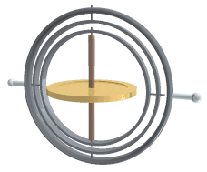
- Adding a fourth rotational axis can solve the problem of gimbal lock, but it requires the outermost ring to be actively driven so that it stays 90 degrees out of alignment with the innermost axis (the flywheel shaft). Without active driving of the outermost ring, all four axes can become aligned in a plane as shown above, again leading to gimbal lock and inability to roll.
添加第四个旋转轴可以解决万向死锁问题，但它需要主动驱动最外圈，使其与最内轴（飞轮轴）保持90度不对齐。 如果没有主动驱动最外环，所有四个轴都可以在一个平面上对齐，如上图所示，再次导致万向节死锁和无法滚动。
Gimbal lock is the loss of one degree of freedom in a three-dimensional, three-gimbal mechanism that occurs when the axes of two of the three gimbals are driven into a parallel configuration, "locking" the system into rotation in a degenerate two-dimensional space.
万向节死锁是三维、三万向节机构中一个自由度的损失，当三个万向节中的两个的轴被驱动成平行配置时，就会发生这种情况，将系统“死锁”成退化的两轴旋转维空间。
The word lock is misleading: no gimbal is restrained. All three gimbals can still rotate freely about their respective axes of suspension. Nevertheless, because of the parallel orientation of two of the gimbals' axes there is no gimbal available to accommodate rotation about one axis.
死锁一词具有误导性：没有万向节受到限制。 所有三个万向节仍然可以围绕各自的悬挂轴自由旋转。 然而，由于两个万向节轴的平行方向，没有万向节可用于容纳围绕一个轴的旋转。
Contents
1 Gimbals
2 In engineering
2.1 In two dimensions
2.2 In three dimensions
2.3 Solutions
2.4 On Apollo 11
2.5 Robotics
3 In applied mathematics
3.1 Loss of a degree of freedom with Euler angles
3.2 Alternate orientation representation
4 See also
5 References
6 External links
Gimbals 万向节
Main article: Gimbal
主条目：万向节
A gimbal is a ring that is suspended so it can rotate about an axis. Gimbals are typically nested one within another to accommodate rotation about multiple axes.
万向节是一个悬挂的环，因此它可以绕轴旋转。 万向节通常嵌套在另一个中，以适应围绕多个轴的旋转。
They appear in gyroscopes and in inertial measurement units to allow the inner gimbal's orientation to remain fixed while the outer gimbal suspension assumes any orientation. In compasses and flywheel energy storage mechanisms they allow objects to remain upright. They are used to orient thrusters on rockets.[1]
它们出现在陀螺仪和惯性测量单元中，以允许内部万向节的方向保持固定，而外部万向节悬架采用任何方向。 在指南针和飞轮储能机制中，它们允许物体保持直立。 它们用于定位火箭上的推进器。 [1]
Some coordinate systems in mathematics behave as if there were real gimbals used to measure the angles, notably Euler angles.
数学中的一些坐标系表现得好像有用于测量角度的真实万向节，特别是欧拉角。
For cases of three or fewer nested gimbals, gimbal lock inevitably occurs at some point in the system due to properties of covering spaces (described below).
对于三个或更少的嵌套万向节的情况，由于覆盖空间的特性（如下所述），在系统中的某些点不可避免地会发生万向节死锁。
In engineering 在工程
While only two specific orientations produce exact gimbal lock, practical mechanical gimbals encounter difficulties near those orientations. When a set of gimbals is close to the locked configuration, small rotations of the gimbal platform require large motions of the surrounding gimbals. Although the ratio is infinite only at the point of gimbal lock, the practical speed and acceleration limits of the gimbals—due to inertia (resulting from the mass of each gimbal ring), bearing friction, the flow resistance of air or other fluid surrounding the gimbals (if they are not in a vacuum), and other physical and engineering factors—limit the motion of the platform close to that point.
虽然只有两个特定的方向可以产生精确的万向节死锁，但实际的机械万向节在这些方向附近会遇到困难。 当一组万向节接近死锁配置时，万向节平台的小旋转需要周围万向节的较大运动。 尽管该比率仅在万向节死锁点是无限的，但由于惯性（由每个万向节环的质量引起）、轴承摩擦、空气或其他流体周围的流动阻力，万向节的实际速度和加速度限制 万向节（如果它们不在真空中）以及其他物理和工程因素 - 将平台的运动限制在该点附近。
In two dimensions 在二维
Gimbal lock can occur in gimbal systems with two degrees of freedom such as a theodolite with rotations about an azimuth and elevation in two dimensions. These systems can gimbal lock at zenith and nadir, because at those points azimuth is not well-defined, and rotation in the azimuth direction does not change the direction the theodolite is pointing.
万向节死锁可能发生在具有两个自由度的万向节系统中，例如具有围绕方位角和二维仰角旋转的经纬仪。 这些系统可以在天顶和天底死锁万向节，因为在这些点方位角没有明确定义，并且在方位角方向上的旋转不会改变经纬仪指向的方向。
Consider tracking a helicopter flying towards the theodolite from the horizon. The theodolite is a telescope mounted on a tripod so that it can move in azimuth and elevation to track the helicopter. The helicopter flies towards the theodolite and is tracked by the telescope in elevation and azimuth. The helicopter flies immediately above the tripod (i.e. it is at zenith) when it changes direction and flies at 90 degrees to its previous course. The telescope cannot track this maneuver without a discontinuous jump in one or both of the gimbal orientations. There is no continuous motion that allows it to follow the target. It is in gimbal lock. So there is an infinity of directions around zenith for which the telescope cannot continuously track all movements of a target.[2] Note that even if the helicopter does not pass through zenith, but only near zenith, so that gimbal lock does not occur, the system must still move exceptionally rapidly to track it, as it rapidly passes from one bearing to the other. The closer to zenith the nearest point is, the faster this must be done, and if it actually goes through zenith, the limit of these "increasingly rapid" movements becomes infinitely fast, namely discontinuous.
考虑跟踪一架直升机从地平线飞向经纬仪。经纬仪是安装在三脚架上的望远镜，它可以在方位角和仰角上移动以跟踪直升机。直升机飞向经纬仪，并由望远镜在仰角和方位角上进行跟踪。当直升机改变方向并以 90 度角飞行到之前的航线时，它会立即飞到三脚架上方（即它位于天顶）。如果没有在一个或两个万向节方向上的不连续跳跃，望远镜就无法跟踪这个机动。没有允许它跟随目标的连续运动。它在万向节死锁中。因此，天顶周围有无限的方向，望远镜无法连续跟踪目标的所有运动。 [2]请注意，即使直升机没有通过天顶，而只是靠近天顶，因此不会发生万向架死锁，系统仍必须非常快速地移动以跟踪它，因为它从一个轴承快速移动到另一个轴承。离天顶最近的点越接近天顶，必须越快，如果真的经过天顶，这些“越来越快”的运动的极限就变得无限快，即不连续。
To recover from gimbal lock the user has to go around the zenith – explicitly: reduce the elevation, change the azimuth to match the azimuth of the target, then change the elevation to match the target.
要从万向节死锁中恢复，用户必须绕过天顶 - 明确：降低仰角，更改方位角以匹配目标的方位角，然后更改仰角以匹配目标。
Mathematically, this corresponds to the fact that spherical coordinates do not define a coordinate chart on the sphere at zenith and nadir. Alternatively, the corresponding map T2→S2 from the torus T2 to the sphere S2 (given by the point with given azimuth and elevation) is not a covering map at these points.
在数学上，这对应于球坐标没有在天顶和最低点定义球体坐标图的事实。 或者，从圆环 T2 到球体 S2 的对应图 T2→S2（由具有给定方位角和仰角的点给出）不是这些点的覆盖图。
In three dimensions 在三维
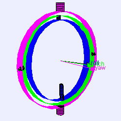
- Gimbal with 3 axes of rotation. A set of three gimbals mounted together to allow three degrees of freedom: roll, pitch and yaw. When two gimbals rotate around the same axis, the system loses one degree of freedom.
具有 3 个旋转轴的万向节。 一组三个安装在一起的万向节允许三个自由度：滚动、俯仰和偏航。 当两个万向节绕同一轴旋转时，系统失去一个自由度。
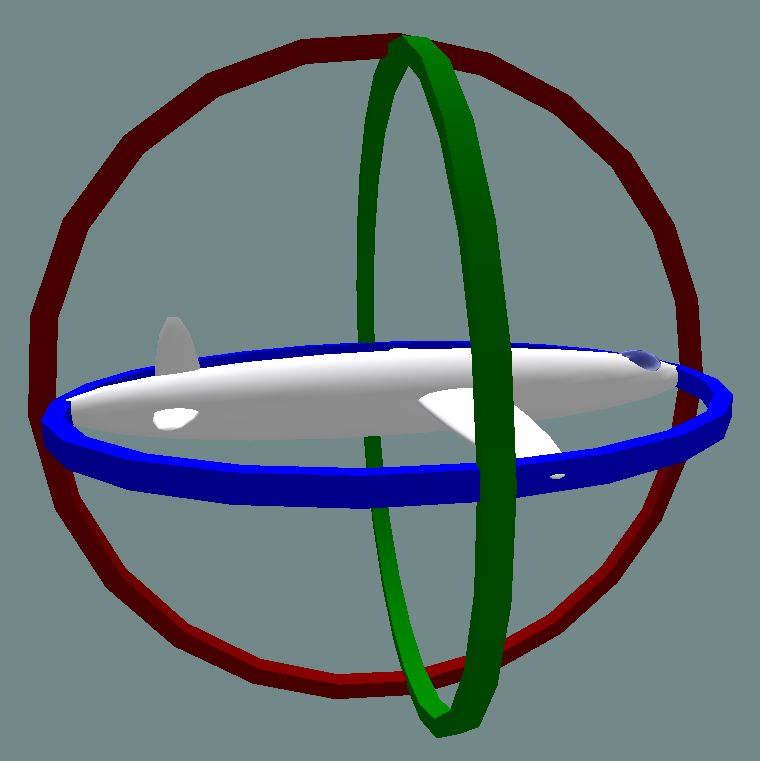
- Normal situation: the three gimbals are independent
正常情况：三个万向节独立
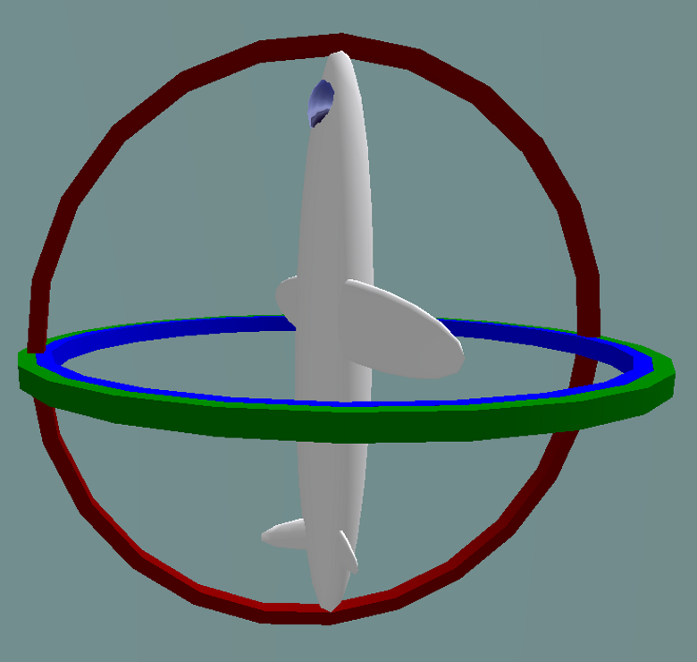
- Gimbal lock: two out of the three gimbals are in the same plane, one degree of freedom is lost
万向节死锁：三个万向节中有两个在同一平面，失去一个自由度
Consider a case of a level-sensing platform on an aircraft flying due north with its three gimbal axes mutually perpendicular (i.e., roll, pitch and yaw angles each zero). If the aircraft pitches up 90 degrees, the aircraft and platform's yaw axis gimbal becomes parallel to the roll axis gimbal, and changes about yaw can no longer be compensated for.
考虑一个水平传感平台的情况，飞机正北飞行，其三个万向节轴相互垂直（即横滚、俯仰和偏航角各为零）。 如果飞行器俯仰 90 度，飞行器和平台的偏航轴万向节与横滚轴万向节平行，偏航角的变化无法补偿。
Solutions 解决方案
This problem may be overcome by use of a fourth gimbal, actively driven by a motor so as to maintain a large angle between roll and yaw gimbal axes. Another solution is to rotate one or more of the gimbals to an arbitrary position when gimbal lock is detected and thus reset the device.
这个问题可以通过使用第四个万向节来克服，该万向节由电机主动驱动，以保持滚动和偏航万向节轴之间的大角度。 另一种解决方案是当检测到万向节死锁时，将一个或多个万向节旋转到任意位置，从而重置设备。
Modern practice is to avoid the use of gimbals entirely. In the context of inertial navigation systems, that can be done by mounting the inertial sensors directly to the body of the vehicle (this is called a strapdown system)[3] and integrating sensed rotation and acceleration digitally using quaternion methods to derive vehicle orientation and velocity. Another way to replace gimbals is to use fluid bearings or a flotation chamber.[4]
现代做法是完全避免使用万向节。 在惯性导航系统的背景下，这可以通过将惯性传感器直接安装到车辆车身（这称为捷联系统）[3] 并使用四元数方法以数字方式集成感测到的旋转和加速度来获得车辆方向和速度。 更换万向节的另一种方法是使用流体轴承或浮选室。 [4]
On Apollo 11 在阿波罗 11 号上
A well-known gimbal lock incident happened in the Apollo 11 Moon mission. On this spacecraft, a set of gimbals was used on an inertial measurement unit (IMU). The engineers were aware of the gimbal lock problem but had declined to use a fourth gimbal.[5] Some of the reasoning behind this decision is apparent from the following quote:
阿波罗 11 号登月任务中发生了著名的万向节死锁事件。 在这艘航天器上，惯性测量单元（IMU）上使用了一组万向节。 工程师们知道万向节死锁问题，但拒绝使用第四个万向节。 [5] 从以下引用中可以明显看出该决定背后的一些原因：
The advantages of the redundant gimbal seem to be outweighed by the equipment simplicity, size advantages, and corresponding implied reliability of the direct three degree of freedom unit. — David Hoag, Apollo Lunar Surface Journal
冗余万向节的优势似乎被直接三自由度单元的设备简单性、尺寸优势和相应的隐含可靠性所抵消。 — David Hoag，阿波罗月球表面杂志
They preferred an alternate solution using an indicator that would be triggered when near to 85 degrees pitch.
他们更喜欢使用指示器的替代解决方案，该指示器将在接近 85 度俯仰角时触发。
Near that point, in a closed stabilization loop, the torque motors could theoretically be commanded to flip the gimbal 180 degrees instantaneously. Instead, in the LM, the computer flashed a 'gimbal lock' warning at 70 degrees and froze the IMU at 85 degrees — Paul Fjeld, Apollo Lunar Surface Journal
在那一点附近，在一个封闭的稳定回路中，理论上可以命令扭矩马达将万向架瞬时翻转 180 度。 相反，在 LM 中，计算机在 70 度时闪烁“万向节死锁”警告，并将 IMU 冻结在 85 度 — Paul Fjeld，阿波罗月球表面杂志
Rather than try to drive the gimbals faster than they could go, the system simply gave up and froze the platform. From this point, the spacecraft would have to be manually moved away from the gimbal lock position, and the platform would have to be manually realigned using the stars as a reference.[6]
系统并没有试图以更快的速度驱动万向节，而是简单地放弃并冻结了平台。 从这一点开始，必须手动将航天器从万向节死锁位置移开，并且必须使用星星作为参考手动重新调整平台。 [6]
After the Lunar Module had landed, Mike Collins aboard the Command Module joked "How about sending me a fourth gimbal for Christmas?"
登月舱着陆后，指挥舱上的迈克·柯林斯开玩笑说：“圣诞节送我第四个万向节怎么样？”
Robotics 机器人技术
- Industrial robot operating in a foundry.
在铸造厂工作的工业机器人。
In robotics, gimbal lock is commonly referred to as "wrist flip", due to the use of a "triple-roll wrist" in robotic arms, where three axes of the wrist, controlling yaw, pitch, and roll, all pass through a common point.
在机器人技术中，万向节死锁通常被称为“手腕翻转”，因为在机械臂中使用了“三滚腕”，其中手腕的三个轴，控制偏航，俯仰和滚动，都通过一个共同点。
An example of a wrist flip, also called a wrist singularity, is when the path through which the robot is traveling causes the first and third axes of the robot's wrist to line up. The second wrist axis then attempts to spin 180° in zero time to maintain the orientation of the end effector. The result of a singularity can be quite dramatic and can have adverse effects on the robot arm, the end effector, and the process.
手腕翻转的一个例子，也称为手腕奇点，是当机器人行进的路径导致机器人手腕的第一轴和第三轴对齐时。 然后，第二腕轴尝试在零时间内旋转 180°，以保持末端执行器的方向。 奇点的结果可能非常显着，并且可能对机器人手臂、末端执行器和过程产生不利影响。
The importance of avoiding singularities in robotics has led the American National Standard for Industrial Robots and Robot Systems – Safety Requirements to define it as "a condition caused by the collinear alignment of two or more robot axes resulting in unpredictable robot motion and velocities".[7]
避免机器人技术中的奇异性的重要性导致美国工业机器人和机器人系统国家标准 - 安全要求将其定义为“由两个或多个机器人轴共线对齐导致的机器人运动和速度不可预测的情况”。 7]
In applied mathematics 在应用数学中
This section includes a list of references, related reading or external links, but its sources remain unclear because it lacks inline citations. Please help to improve this section by introducing more precise citations. (July 2013) (Learn how and when to remove this template message)
本节包括参考文献列表、相关阅读或外部链接，但由于缺少内联引文，其来源仍不清楚。 请通过引入更精确的引用来帮助改进本节。 （2013 年 7 月）（了解如何以及何时删除此模板消息）
The problem of gimbal lock appears when one uses Euler angles in applied mathematics; developers of 3D computer programs, such as 3D modeling, embedded navigation systems, and video games must take care to avoid it.
应用数学中使用欧拉角会出现万向节死锁问题； 3D 计算机程序（例如 3D 建模、嵌入式导航系统和视频游戏）的开发人员必须小心避免这种情况。
In formal language, gimbal lock occurs because the map from Euler angles to rotations (topologically, from the 3-torus T3 to the real projective space RP3 which is the same as the space of 3d rotations SO3) is not a local homeomorphism at every point, and thus at some points the rank (degrees of freedom) must drop below 3, at which point gimbal lock occurs. Euler angles provide a means for giving a numerical description of any rotation in three-dimensional space using three numbers, but not only is this description not unique, but there are some points where not every change in the target space (rotations) can be realized by a change in the source space (Euler angles). This is a topological constraint – there is no covering map from the 3-torus to the 3-dimensional real projective space; the only (non-trivial) covering map is from the 3-sphere, as in the use of quaternions.
在形式语言中，万向节死锁的发生是因为从欧拉角到旋转的映射（拓扑上，从 3-环 T3 到与 3d 旋转空间 SO3 相同的实投影空间 RP3）不是每个点的局部同胚 ，因此在某些点，等级（自由度）必须降至 3 以下，此时会发生万向节死锁。 欧拉角提供了一种使用三个数字对三维空间中的任何旋转进行数值描述的方法，但这种描述不仅不是唯一的，而且在某些点上并不是目标空间（旋转）的每一个变化都可以实现 通过源空间的变化（欧拉角）。 这是一个拓扑约束——没有从 3 环面到 3 维实射影空间的覆盖图； 唯一的（非平凡的）覆盖图来自 3 球体，就像使用四元数一样。
To make a comparison, all the translations can be described using three numbers ${\displaystyle x}$, ${\displaystyle y}$, and ${\displaystyle z}$, as the succession of three consecutive linear movements along three perpendicular axes ${\displaystyle X}$, ${\displaystyle Y}$ and ${\displaystyle Z}$ axes. The same holds true for rotations: all the rotations can be described using three numbers ${\displaystyle \alpha }$ , ${\displaystyle \beta }$, and ${\displaystyle \gamma }$ , as the succession of three rotational movements around three axes that are perpendicular one to the next. This similarity between linear coordinates and angular coordinates makes Euler angles very intuitive, but unfortunately they suffer from the gimbal lock problem.
为了进行比较，可以使用三个数字 ${\displaystyle x}$、${\displaystyle y}$ 和 ${\displaystyle z}$ 来描述所有平移，作为沿三个垂直方向的三个连续线性运动的连续 坐标轴 ${\displaystyle X}$、${\displaystyle Y}$ 和 ${\displaystyle Z}$ 坐标轴。 旋转也是如此：所有的旋转都可以用三个数字 ${\displaystyle \alpha }$ 、 ${\displaystyle \beta }$ 和 ${\displaystyle \gamma }$ 来描述，作为三个旋转的连续 围绕三个相互垂直的轴的运动。 线性坐标和角坐标之间的这种相似性使得欧拉角非常直观，但不幸的是它们遭受了万向节死锁问题。
Loss of a degree of freedom with Euler angles 欧拉角的自由度损失
A rotation in 3D space can be represented numerically with matrices in several ways. One of these representations is:
3D 空间中的旋转可以通过多种方式用矩阵数字表示。 这些表示之一是：
$$ {\displaystyle {\begin{aligned}R&={\begin{bmatrix}1&0&0\0&\cos \alpha &-\sin \alpha \0&\sin \alpha &\cos \alpha \end{bmatrix}}{\begin{bmatrix}\cos \beta &0&\sin \beta \0&1&0\-\sin \beta &0&\cos \beta \end{bmatrix}}{\begin{bmatrix}\cos \gamma &-\sin \gamma &0\\sin \gamma &\cos \gamma &0\0&0&1\end{bmatrix}}\end{aligned}}} $$
An example worth examining happens when ${\displaystyle \beta ={\tfrac {\pi }{2}}}$. Knowing that ${\displaystyle \cos {\tfrac {\pi }{2}}=0}$and ${\displaystyle \sin {\tfrac {\pi }{2}}=1}$, the above expression becomes equal to:
一个值得研究的例子发生在 ${\displaystyle \beta ={\tfrac {\pi }{2}}}$。 知道${\displaystyle \cos {\tfrac {\pi }{2}}=0}$和${\displaystyle \sin {\tfrac {\pi }{2}}=1}$，上述表达式变为 等于：
$$ {\displaystyle {\begin{aligned}R&={\begin{bmatrix}1&0&0\0&\cos \alpha &-\sin \alpha \0&\sin \alpha &\cos \alpha \end{bmatrix}}{\begin{bmatrix}0&0&1\0&1&0\-1&0&0\end{bmatrix}}{\begin{bmatrix}\cos \gamma &-\sin \gamma &0\\sin \gamma &\cos \gamma &0\0&0&1\end{bmatrix}}\end{aligned}}} $$
Carrying out matrix multiplication:
执行矩阵乘法：
$$ {\displaystyle {\begin{aligned}R&={\begin{bmatrix}0&0&1\\sin \alpha &\cos \alpha &0\-\cos \alpha &\sin \alpha &0\end{bmatrix}}{\begin{bmatrix}\cos \gamma &-\sin \gamma &0\\sin \gamma &\cos \gamma &0\0&0&1\end{bmatrix}}&={\begin{bmatrix}0&0&1\\sin \alpha \cos \gamma +\cos \alpha \sin \gamma &-\sin \alpha \sin \gamma +\cos \alpha \cos \gamma &0\-\cos \alpha \cos \gamma +\sin \alpha \sin \gamma &\cos \alpha \sin \gamma +\sin \alpha \cos \gamma &0\end{bmatrix}}\end{aligned}}} $$
And finally using the trigonometry formulas:
最后使用三角公式：
$$ {\displaystyle {\begin{aligned}R&={\begin{bmatrix}0&0&1\\sin(\alpha +\gamma )&\cos(\alpha +\gamma )&0\-\cos(\alpha +\gamma )&\sin(\alpha +\gamma )&0\end{bmatrix}}\end{aligned}}} $$
Changing the values of ${\displaystyle \alpha }$ and ${\displaystyle \gamma }$ in the above matrix has the same effects: the rotation angle ${\displaystyle \alpha +\gamma }$ changes, but the rotation axis remains in the ${\displaystyle Z}$ direction: the last column and the first row in the matrix won't change. The only solution for ${\displaystyle \alpha }$ and ${\displaystyle \gamma }$ to recover different roles is to change ${\displaystyle \beta }$ .
改变上述矩阵中${\displaystyle \alpha }$和${\displaystyle \gamma }$的值具有相同的效果：旋转角度${\displaystyle \alpha +\gamma }$改变了，但是旋转轴 保持在 ${\displaystyle Z}$ 方向：矩阵中的最后一列和第一行不会改变。 ${\displaystyle \alpha }$ 和 ${\displaystyle \gamma }$ 恢复不同角色的唯一解决方案是更改 ${\displaystyle \beta }$ 。
It is possible to imagine an airplane rotated by the above-mentioned Euler angles using the X-Y-Z convention. In this case, the first angle - ${\displaystyle \alpha }$ is the pitch. Yaw is then set to ${\displaystyle {\tfrac {\pi }{2}}}$ and the final rotation - by ${\displaystyle \gamma }$ - is again the airplane's pitch. Because of gimbal lock, it has lost one of the degrees of freedom - in this case the ability to roll.
可以想象一架飞机使用 X-Y-Z 约定以上述欧拉角旋转。 在这种情况下，第一个角度 - ${\displaystyle \alpha }$ 是音高。 然后将偏航设置为 ${\displaystyle {\tfrac {\pi }{2}}}$，最后的旋转 - 通过 ${\displaystyle \gamma }$ - 再次是飞机的俯仰角。 由于万向节死锁，它失去了一个自由度——在这种情况下，它失去了滚动的能力。
It is also possible to choose another convention for representing a rotation with a matrix using Euler angles than the X-Y-Z convention above, and also choose other variation intervals for the angles, but in the end there is always at least one value for which a degree of freedom is lost.
除了上面的 X-Y-Z 约定，还可以选择使用欧拉角的矩阵表示旋转的另一种约定，也可以为角度选择其他变化区间，但最终总是至少有一个值的度数失去了自由。
The gimbal lock problem does not make Euler angles "invalid" (they always serve as a well-defined coordinate system), but it makes them unsuited for some practical applications.
万向节死锁问题不会使欧拉角“无效”（它们始终用作定义明确的坐标系），但它使它们不适合某些实际应用。
Alternate orientation representation 交替方向表示
The cause of gimbal lock is the representation of orientation in calculations as three axial rotations based on Euler angles. A potential solution therefore is to represent the orientation in some other way. This could be as a rotation matrix, a quaternion (see quaternions and spatial rotation), or a similar orientation representation that treats the orientation as a value rather than three separate and related values. Given such a representation, the user stores the orientation as a value. To quantify angular changes produced by a transformation, the orientation change is expressed as a delta angle/axis rotation. The resulting orientation must be re-normalized to prevent the accumulation of floating-point error in successive transformations. For matrices, re-normalizing the result requires converting the matrix into its nearest orthonormal representation. For quaternions, re-normalization requires performing quaternion normalization.
万向节死锁的原因是计算中的方向表示为基于欧拉角的三个轴向旋转。 因此，一个潜在的解决方案是以其他方式表示方向。 这可以是旋转矩阵、四元数（参见四元数和空间旋转）或类似的方向表示，将方向视为一个值，而不是三个单独的相关值。 给定这样的表示，用户将方向存储为一个值。 为了量化变换产生的角度变化，方向变化表示为增量角度/轴旋转。 生成的方向必须重新归一化，以防止在连续转换中累积浮点误差。 对于矩阵，重新归一化结果需要将矩阵转换为其最接近的正交表示。 对于四元数，重新归一化需要执行四元数归一化。
See also 参见
Charts on SO(3)
Flight dynamics
Grid north (equivalent navigational problem on polar expeditions)
Inertial navigation system
Motion planning
Quaternions and spatial rotation